«Воспоминания — это не путь к прошлому, это ключ к будущему.»
Мир у каждого свой. Это — мой, моими глазами, история, рассказанная честно.

Моими
глазами
Воспоминания о путешествии
↓ листайте вниз
“Воспоминания это не путь к прошлому это ключ к будущему.” Мир у каждого свой. Это - мой, моими глазами, - история, рассказанная честно.
Алла Никитина/Пазынич
Мне всегда хотелось поделиться воспоминаниями о моих поездках в Россию, живя здесь, в Новой Зеландии… Но я все ждала какого-то идеального момента или более подходящих слов... Наверное, сейчас настал тот момент, когда мои впечатления сложились в ту самую картину, которую я готова описать. Путешествие в Россию стало особенно значимым для меня, так как мой старший сын Андрей живет в России, а младший сын Олег - в Австралии. Они, мои взрослые сыновья, детально спланировали мое путешествие. Поэтому я решила поделиться теп- лыми воспоминаниями о местах, где мне посчастливилось побывать и передать атмосферу этих удивительных уголков. Я пишу это как мой скромный вклад в наше семейное дерево. Может, спустя годы, кто-то из потомков откроет эти страни- цы и через мои строки почувствует связь с нашими корнями.


«МОИ СЫНОВЬЯ АНДРЕЙ И ОЛЕГ»
Готовиться к моему путешествию я начала с того момента, когда купила билеты по маршруту Нельсон - Окленд - Дубай - Москва и обратно. Мои друзья Ольга и Энди помогли мне выбрать места в удобных рядах на двух человек в премиум -классе. Благодаря их помощи я заранее имела билеты с местами в аэропортах моего путешествия до начала полетов. Я благодарна им за их помощь.

«АЭРОПОРТ НЕЛСОН, НОВАЯ ЗЕЛАНДИЯ»
Конечно, билеты стоили намного дороже, чем в экономклассе, но комфорт стоит этих затрат. Учитывая мой долгий пе- релет из Окленда в Дубай, Олег заранее запланировал для меня гостиницу в Дубае на три ночи в прекрасном отеле под названием Аджман. Он оплатил там мой краткосрочный отдых для моего отдыха после длительного перелета. Спасибо, сынуля. У меня в доме оставалась Альберта, моя кошечка. Ей нужен был уход в мое отсутствие и мои друзья Ира с Гошей и соседка Джил согласились заботиться о ней в мое отсутствие. Я оставила запас еды и все инструкции, за ее комфорт. Я была спокойна. Да, еще при планировании поездки возникла необходимость в дополнительном багажном месте для внутреннего пе- релета. На рейсе Нелсон - Окленд действовало ограничение в 23 кг в то время как норма для международного перелетам Окленд -Дубай составляла 35 кг. Я купила сумку для временного разделения багажа, который в Окленде был объединен в один чемо- дан. Я улетала 1 Мая. Утро было солнечное - последний день осени в Новой Зеландии, а потом здесь наступит зима с замороз- ками по утрам, с дождями и даже ливнями и с неуютной обстановкой в доме. Приятно было подумать на мгновение о том, что мое путешествие продолжится через несколько часов в теплом Дубае. Поездку в аэропорт организовала Оля, а позже приехали в аэропорт Ира и Гоша, мои друзья. По традиции перед полетом мы выпили по чашечке чая и обняв на прощание моих друзей, я ушла на посадку в самолет, улетающий в Окленд. Продолжительность полета в Окленд - один час двадцать минут. Самолет приземлился в местном аэропорту Окленда. Багаж я получила быстро, переложила сумку в чемодан. Вес чемодана - 28 кг, нормально. Из местного аэропорта в международный я шла пешком, уложив свой багаж на удобную тележку. Я продолжала свой путь по зеленому следу, который тянулся 2 км и заканчивался у главного входа в международный аэропорт , встретивший меня большим количеством людей. Он был громадный. Я не первый раз летала из Окленда в Россию, когда жила в Таупо. А потом летала из Нельсона в Таупо, где Олежа жил со своей семьей до их переезда в Брисбен, Австралию, куда я летала очень часто. Но время полета было намного короче, чем мой полет в Дубай. Времени было достаточно, но я беспокоилась, заранее искала место регистрации на Дубай, ворота с выходом на таможню. В памяти появились советы младшего сына: не суетиться, не волноваться. Они успокоили меня. Регистрацию своего рейса я увидела на табло. Багаж сдала нормально. Мой чемодан по ленте быстро уехал в глубь багажного отделения. Получила посадочный талон с указанием номера ворот на вылет и номер места в самолете. Потом был таможенный контроль - его я прошла не спеша. Все складывалось. Впереди Дьюти фри, зона отдыха. Там я поинтересовалась наличием моих любимых духов Fendi, но они действительно давно сняты с производства. Жаль, прошло много лет с тех пор, но замену им я так и не нашла… Но ищу, может, что-то похожее. Может… а вдруг….. В 20-00 была объявлена посадка на мой самолет в Дубай. Я оставила аэропорт Окленд и двинулась со всеми пассажирами в самолет. Стюардессы приветливо встречали на борту. У меня было удобное место в Премиум классе у окна с удобствами для ног, маленький ТВ располагался впереди, на спинке соседнего кресла. Я смотрела фильмы. Еда была отличная. Конечно, я спала, так как полет продолжался 16 часов. В 5 часов утра по мест- ному времени мы приземлились в аэропорту города Дубай.
Выходя из самолета, я почувствовала резкие перепады температуры и влажности, но к счастью аэропорт был хорошо кон- диционирован. Конечно, там было многолюдно и прохождение паспортного контроля заняло некоторое время. Однако для меня было особенно важно то, что в аэропорту был бесплатный

«АДЖМАН, БЕРЕГ ПЕРСИДСКОГО ЗАЛИВА. МАЙ 2025»
WI-FI и сотрудники помогли мне подключиться к интернету. Я смогла общаться с моими сыновьями. После получения багажа я неспешно направилась по аэропорту к пункту для обмена валюты. Я обменяла 200 американских долларов на 637 дирхамов. За пределами аэропорта я заметила огромную стоянку такси. На

«ОТЕЛЬ „АДЖМАН“, ОАЭ. МАЙ 2025»
одном из них я поехала в отель Аджман, который был забронирован моим сыном Олегом на три ночи. Это был приятный сюрприз для моего отдыха у моря. Подарок от сына действительно принес мне много радости и волнения. Я ехала с води- телем, который был родом из Индии и хорошо ориентировался на местных дорогах. Мы общались с ним на моем базовом английском, но понимали друг друга. Водителю я заплатила 100 дирхамов. Отель Аджман - пятизвездочный, один из популярных отелей, расположенный в одноименном эмирате недалеко от Дубая на первой береговой линии Персидского Залива. У отеля меня встретили сотрудники. На стойке регистрации я заполнила все необходимые формы и после этого получила ключ от номера, куда был доставлен мой багаж. Моя комната c балконом выходила на залив. В ней была комфортная мебель с современным дизайном. Особенно меня впечатлила двуспальная кровать - я так хотела отдохнуть после длительного перелета. Однако погода была жаркой и я решила освежиться в море. К сожалению, на побережье был шторм и купаться разрешали только у самого берега. Когда я поплыла немного дальше, береговые спасатели предостерегли меня свистками, давая знать, что это опасно. В отеле было несколько бассейнов. Я решила плавать в открытом бассейне с видом на Персидский Залив. Вода в бассейне была пресной, не соленой, освежающей и я плавала с удовольствием. Желание прогуляться по огромному берегу, усыпанному белым песком с пологим пуском к океану, зонтами и освежающей прохладой с моря было велико, но солнце сильно припекало и я поспешила вернуться в отель. Внутри все было оформлено в европейском стиле с использованием шелковой парчи, элегантными элементами дизайна. Яркие светильники и изысканные золотые и серебряные детали придавали интерьеру особый шарм. Это было пространство, в котором я чувствовала себя прекрасно. На стойке регистрации сотрудники говорили порусски. Это сделало мое пребывание в отеле комфортным и уютным.
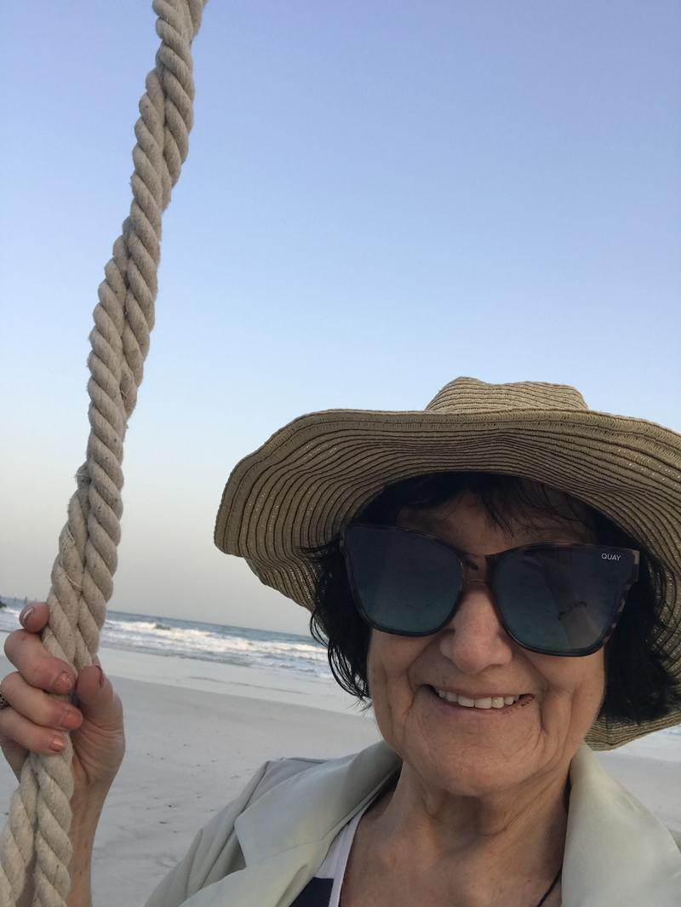
«КАК В ДЕТСТВЕ НА КАЧЕЛЯХ»
Мое время прогулки по отелю подошло к концу и я направилась в кафе, где было множество столиков. Мне хотелось насла- диться свежим воздухом поэтому я выбрала столик на свежем воздухе. Еды обилие, разнообразие - горячие блюда, закуски, соки, десерты. Я находилась на свежем воздухе до 11 часов вечера - к этому времени воздух становился особенно свежим, но прогулки у моря в это время были запрещены. В кафе я пробовала несколько местных блюд включая манакиш - непонятное название, но вкусно. Это расплавленный сыр с оливками и зеленью, завернутый в лаваш - на завтрак прекрасно. Однажды мне также повезло насладиться традиционным арабским блюдом гузи - мясом ягненка с рисом, орехами и овощами. Мне нравились соки, приготовленные из свежих фруктов, молочные коктейли с манго - этот фрукт называют королем. Почему - не знаю. Я не знала, что финики являются национальным фруктом ОАЭ, имеют 150 сортов. Также я пробовала гуаву, кушала арбузы, клубнику. Я наслаждалась традиционным арабским завтра- ком, который включал мясо, фасоль и яйца. Время, проведенное в отеле Аджман, было удивительным для меня. Я встречала рассвет, стоя на балконе, наслаждаясь восходом солнца, а затем шла к морю, прогуливалась по белому песку вдоль берега, преодолевая 4-5 км. После прогулки купалась в бассейне, уходила на завтрак и снова возвращалась к морю - проплывала небольшое расстояние и загорала. Еще я купила шляпу за 130 дир- хамов, чтобы немного спрятать свое лицо от солнца. А вечером уходила на ужин, наслаждаясь близостью природы. Время пролетело быстро. В последнюю ночь я долго стояла на балконе, любуясь звездами и слушая шум моря… Я встала рано, так как такси к отелю было заказано на 6 утра. Простилась с гостеприимными работниками отеля, которые организовали для отъезжающих туристов ранний завтрак и проводили к такси. День только начинался. Путь в Дубай, аэропорт, занял больше времени, чем обычно из-за большого движения на дорогах, но я успела во время к терминалу номер 3. Все складывалось: таможня, паспортный контроль, метро, ворота на посадку Дубай-Москва. Я была полна прекрасных впе- чатлений от моего двухдневного отдыха в сказочном отеле. С предвкушением радости от скорой встречи с Андреем и его семьей я зашла в салон самолета, где стюардессы приветливо встречали пассажиров на русском и английском языках. Место было удобным - у окна, еда на выбор, но после раннего завтрака в отеле кушать не хотелось - выпила чашечку кофе и смотрела фильмы. Полет был более 5 часов..
Самолет приземлился с небольшим опозданием в Домодедово. Паспортный контроль прошла быстро, работник на службе

« МОСКВА РОДНОЙ АЭРОПОРТ МАЙ 2025»
была очень внимательной - задала несколько вопросов и проверила мои документы. После получения багажа я аккуратно по- грузила его на тележку и медленно пошла к выходу из аэропорта в зону, где меня уже ждали. Я не была в России 4 года и, ко- нечно, испытывала бурю эмоций: волнение, радость от встречи. Валя с Андреем встретили меня с улыбкой и большим букетом цветов. Встреча была для меня очень счастливой. Это был воскресный июньский день. Тепло, солнышко, такси… Раньше я приезжала к ним в Мытищи - город, расположенный недалеко от Москвы на реке Яузе. Славится водным богатством, культурными историческими ценностями, парками, в которых я люби- ла гулять. Подмосковный город Мытищи мне запомнился еще и необычным монументом, построенным в 2004 году в честь 200-летия первого водопровода. Памятник отличается колоссальными размерами - высотой почти 20 метров. Его символи- ческая функция - в возможности донести до людей комфорт, удобства и благополучие, которые в свою очередь дарит живительная вода, бегущая по водопроводной галлерее. Он был как бы визитной карточкой и символизировал благодарность народа водопроводу за живительную влагу. В 2024 году памятник был демонтирован из-за аварийных работ. Жаль…… Когда я жила в Мытищах, я часто ездила в Москву к друзьям, на экскурсии. Обычно это занимало много времени - до- бираться на автобусе до метро Медведково или на поезде в Москву. Несмотря на трудности с транспортом, я тепло вспоминаю этот город с его уютом и началом новой главы в семье Ан- дрюши, когда он стал их новым домом после переезда из города Нерюнгри. В этот приезд я приехала к ним в новую квартиру, которая находится в Москве недалеко от Проспекта Мира рядом с метро Алексеевская. Улица, на которой они сейчас живут в Москве, названа в 1965 году в честь героя Советского Союза командира взвода С.К Годовикова. Он родился в Москве в 1924 году, геройски погиб в 1943 году при форсировании реки Днепр. Ему было всего 19 лет. Многие улицы носят имена Героев ВОВ, родившихся на подмосковной земле - людей, чьи подвиги обрели бессмертие в серд- цах потомков. Это не только дань уважения, но и живая память об их бесценном вкладе в общую Победу… Новая квартира в Москве имеет много преимуществ по сравнению с квартирой в Мытищи для семьи Андрюши - она


«ДОМ АНДРЮШИ И ВАЛЮШИ И ЗАМЕЧАТЕЛЬНЫЙ УКРАИНСКИЙ РЕСТОРАН»
находится в многоэтажном доме на 8 этаже, не очень большая, но очень удобная, светлая. Уютная атмосфера квартиры заставила меня почувствовать себя комфортно… Дом расположен в удобном месте: Андрею легко добираться до работы на метро, а Валя тратит меньше времени на поездки к внукам в магазины, которые находятся рядом. Их дочка Виктория снимает небольшую квартирку недалеко от них. Мне тоже удобно - друзья, род- ственники, путешествия по Москве, короткий путь, метро - все рядом. Вот только в первые дни в Москве я чувствовала себя не очень комфортно из-за джетлага. Разница часовых поясов, долгий перелет (16 часов) до Дубая и больше 5 часов часов полета до Москвы дали о себе знать… Я вылетала из Новой Зеландии зимой в июне - там сезон зимнего времени, а в Москву я прилетела в начале лета с разницей во времени 10 часов. Начало лета в Москве, район, где я жила - все было необычным по сравнению с Новой Зеландией. На своей первой утренней прогулке я нашла прекрасный парк с удивительным названием Звездный бульвар. Обычно я бывала там по утрам, выходя с Андрюшей он шел на работу, а я направлялась в другую сторону. Город только просыпался суетой, движением звуков транспорта, шумом улиц, но когда я заходила в парк, там царила тишина, воздух был наполнен ароматом свежей зелени и прохлады. Ветер приносил запах травы и цветов и действительно это был Звездный бульвар.Там я нашла прогулочную тропинку и спортивную площадку для упражнений, уютную скамейку, где ино- гда я записывала свои впечатления. Общение с природой подарило мне ощущение гармонии и энергии, мои утренние прогул- ки вдохновляли меня на каждый день. Благодаря им я стала лучше спать, мое физическое и эмоциональное состояние улучшилось. Планов у меня был множество. 13 июня я уезжала в Белоруссию. Мою поездку мы планировали заранее и Андрюша купил мне билеты по маршруту Москва - Минск - Пинск и обратно, когда я была еще в Новой Зеландии. Я ехала туда, чтобы навестить подругу Тамару, маму моих друзей Оли и Энди из Новой Зеландии. Но до отъезда в Белоруссию я хотела посетить некоторые знаменательные места в Москве, одним из которых была ВДНХ. Мы с Андрюшей отправились туда пешком. Это был чудесный день, Андрюша был прекрасным гидом. ВДНХ или выставка достижений народного хозяйства имеет богатую историю открыта 1 августа 1939 года. За все свое время существования она неоднократно меняла свое название, внешний вид, наполнение. Но в 2014 году ей вернули ее историческое название. На протяжении своей истории ВДНХ всегда была не только выставочным комплексом, но местом проведения различных мероприятий, центром культурной жизни и главным историческим местом в Москве. Когда я бываю в Москве, я обязательно посещаю ВДНХ и даже не представляю себе поездку в столицу без этого места. Обычно я ездила туда в метро или автобусом, но в этот раз мы шли туда и назад пешком, так как расположение ВДНХ было сравнительно недалеко от дома и длительные прогулки с сыном всегда меня радовали. Несмотря на ограниченное время в этот день, мы успели посмотреть некоторые достопримечательности на выставке и приятно отдохнуть… Хоть я вижу ВДНХ уже не в первый раз, она все равно всегда производит сильное впечатление на меня. На вершине арки возвышается статуя “Тракторист и колхозница”, они возносят на 32-метровую высоту аллегорический сноп, который символизирует единство тяжелой промышленности и сельского хо- зяйства. Этот памятник известен даже тем, кто никогда не был в столице, ведь он изображен и на заставке киностудии Мос-
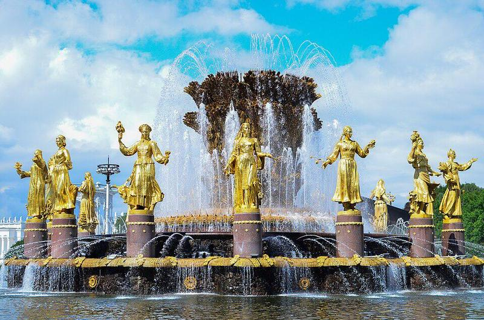
« ФОНТАН -ДРУЖБА НАРОДОВ, ВДНХ »
фильм. На территории выставки есть бесплатные автобусы, но мы решили пройтись пешком. Погода была прекрасная, мы прошли по Главной аллее и дольше всего задержались у фонтана “Дружба народов”. Этот фонтан - один из главных символов ВДНХ, он украшен золотым статуями, символизирующими 16 союзных республик, и впечатляет своим масштабом. Площадь бассейна - 3.8 тысяч квадратных метров, он имеет восьмиугольную форму. В центре находится огромная медная чаша в виде снопа из связок пшеницы подсолнуха и конопли. Необыкновенная красота, да, сила жизни в дружбе. Следующий фонтан “Каменный цветок” вдохновлен яркими образами уральских сказок П.Бажова. Он поражает пышными скульптурными деталями. А в центре. композиции огромная чаша, словно цветок распускающийся среди самоцветов. На гранитных постаментах установлено 16 бронзовых композиций натюрмортов, символизирующих дары природы Союзных республик. Самый зрелищный фонтан, у которого мы остановились - “Золотой колос” - расположен в центре Третьего Камен- ского пруда в Ландшафтном парке и символизирует изобилие и плодородие советской земли, а также дружбу народов, представленных девушками в национальных костюмах. Символика фонтана очевидна, ведь еще с древних времен колосья ассоциировались с возрождением жизни. Мы также посетили Мичу- ринский сад, который находится на территории ВДНХ . Каждая его часть посвящена определенной климатической зоне страны. Сад был открыт в 1939 году и является частью историче- ского комплекса ВДНХ. Мичуринский сад на ВДНХ примечателен тем, что в нем высажены лучшие сорта плодовых деревьев, выведенные Иваном Мичуриным . И конечно было очень приятно прикоснуться к этим деревьям и листочкам. Везде исто- рия…… Надышавшись свежим воздухом в Мичуринском саду на территории выставки мы увидели маленький домик с названием “Трдельник”. Это была пекарня. Название нас заинтриговало и мы заказали традиционную сладкую выпечку – трдельник из дрожжевого теста с сахаром, корицей, запеченный на открытом огне, и кофе. Это дополнило наше знакомство с чешской кухней и было очень вкусно. Не ограничившись этим, я съела еще мороженое. Я очень люблю московское мороженое. На ВДНХ много музеев, павильонов, выставочных комплексов, фонтанов и парков. Я возвращалась с выставки под впе- чатлением и думала о том, как здорово, что у меня была возможность ее посетить. Конечно, увидеть все за несколько часов невозможно, но настроение было отличное и в душе теплилась надежда снова туда вернуться. И я была там несколько раз в этот приезд. Мы иногда гуляли у арки выставки и Андрюша рассказал мне о нашем семейном событии, связанном с катком на ВДНХ в 2019-2020 годах. Тогда Антон, сын моего младшего сына Олега, прилетал к нему в Москву из Австралии на каникулы и катался на коньках. В тот зимний сезон каток на ВДНХ был самым большим в Москве и располагался вдоль Главной аллеи, огибая фонтаны Дружба народов и Каменный цветок. Я читала в обзоре ИИ, что площадь катка составляла более 20 тысяч квадратных метров. В это время он мог вместить до 5 тысяч человек одновременно. Андрюша сделал фото Антона на катке на ВДНХ. Он также катался на катке на Красной площади. Этот каток был открыт прямо на Красной площади. Он был организован ГУМом, став частью новогодних и зимних мероприятий, создавая атмосферу праздника. Хорошо что Андрю- ша сделал фото этих событий. Антону было 14 лет и он впервые приехал в Москву, учился в русской школе, знакомился с достопримечательностями столицы. А новогоднюю ночь семья Ан- дрея с Антоном встретили в знаменитом отеле Пекин. Этот отель находится в самом сердце Москвы в окружении памятников архитектуры, музеев, театров. Антону, русскому мальчику, родившемуся в Новой Зеландии, интересен был этот новый
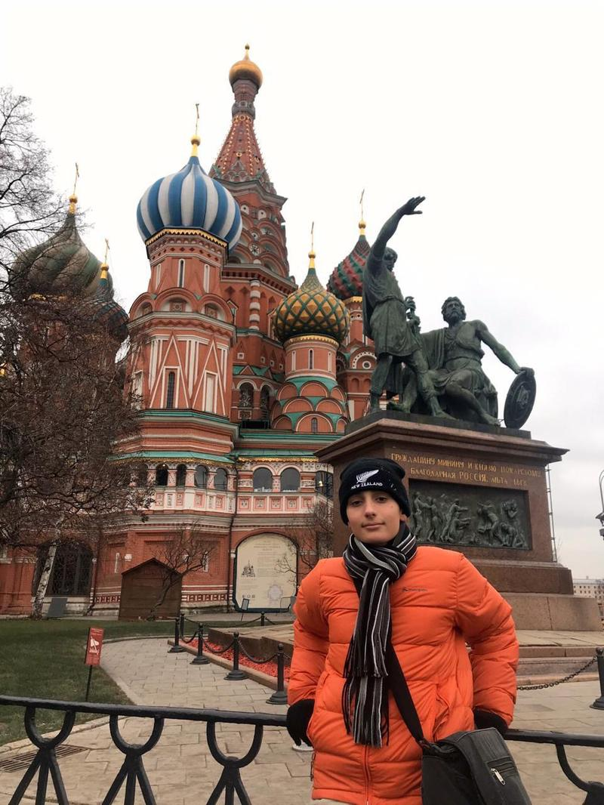
« МОЙ ВНУК АНТОША, МОСКВА 2020 »
мир, с которым его знакомила семья моего старшего сына Андрея. Позже, в 2020 - 2021 годах мой младший сын Олег прилетал в Россию, в служебную командировку, дважды и, конечно, находясь в Москве, он часть времени проводил в семье своего
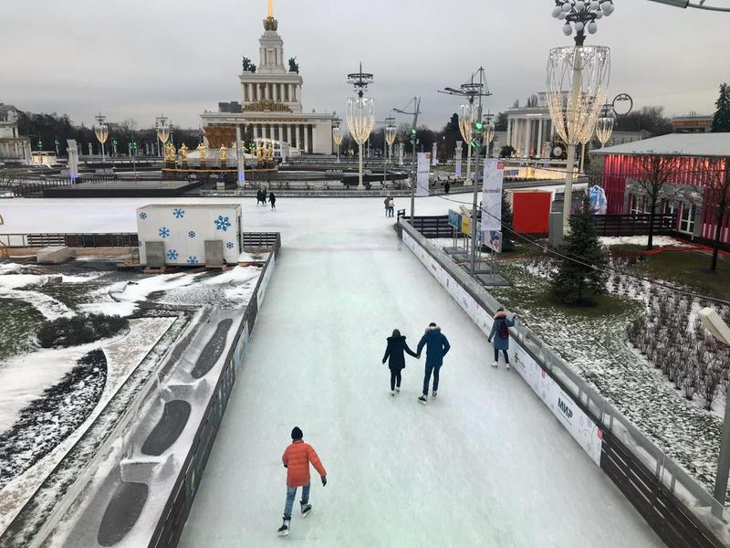
« КАТОК- ВДНХ »
старшего брата. В этот визит в Москву часть моего времени ушла для проверки моего здоровья. С помощью Андрея, Вали я посещала врачей, принимала необходимые лекарства, проверяла зрение, купила очки. Я ходила в магазины, чтобы купить удобную обувь и быть готовой к своим дальнейшим путешествиям. Но мои экскурсии по достопримечательностям Москвы были самыми главными событиями здесь в Москве и, конечно, Андрюша в свободное от работы время помогал мне организовать их. До моего отъезда в Белоруссию мы съездили на речной вокзал, потому что идея круиза по Волге меня не покидала. Мы также побывали в ресторане домашней украинской кухни под названием «Тарас Бульба». Интересно то, что Гоголь писал основную часть книги «Тарас Бульба» в мансарде дома Погодина в Москве. Москва для него была не просто местом проживания, но и важным центром его творчества. Я раньше слышала, что в этом кафе подают блюда по старинным украинским рецептам и мы выбрали несколько из них. Мне очень понравилось. Это кафе было особенно значимо для нашей семьи тем, что в 2020 году, мой младший сын Олег вместе с семьей Андрея и моими двоюродными сестрами обедали именно здесь по случаю го-

« СЕСТРА СВЕТЛАНА»
довщины смерти моей старшей сестры Светланы Федоровны, которая скончалось в 2019 году в Луганске. У меня осталось много теплых воспоминаний о ней. Она была старше меня на 4 года и всегда поддерживала меня в трудные моменты. В детстве она делилась со мной вкусной едой и давала советы... Когда мы повзрослели, я приезжала к ней в родной город ежегодно, а после смерти мамы в 1982 году - на ее дачу, где мы отдыхали всей семьей. Домик был небольшой, но очень уютный. Сейчас в Луганске живут дети и внуки моих сестер и я, приезжая в Россию, обязательно навещаю свой родной город. Но дачи уже нет, только воспоминания сразу всплывают в памяти. Андрюша купил мне карту Тройка и теперь я могла самостоятельно путешествовать в метро по столице, рассматривать станции и знакомиться с их историей. В целом, очень здорово, так как у меня было достаточно времени для моих коротких путешествий, а по воскресным дням Андрюша организовал посещение исторических мест Кусково и Зарядье. Усадьба Кусково - уникальный симбиоз одного из немногих сохранившихся в Москве архитектурно-парковых ансамблей 18 века и единственного в стране специализированного Музея керамики. Кусково было летним имением графов Шереметевых и является уникальным образцом архитектуры и ландшафтного дизайна. Моими гидами были Валя и Андрей. Мы словно окунулись в 18 век - посмотрели Дворец в Кусково и некоторые павильоны. Главное, что мы могли гулять по усадьбе и знакомиться с ее историей без экскурсий. 16 мая 2025 года усадьбе Кусково испол- нилось 250 лет. Конечно, Дворец, или Главный дом, воодушевил тем, что он построен из дерева в традициях русского зодчества, имеет два этажа: парадный и антресоли на высоком каменном цоколе, где размещались винные погреба и подсобные помещения. Здание украсили белоснежные колонны. Вензель ПС на ан- глийском на фронтоне Дворца означает инициалы владельца
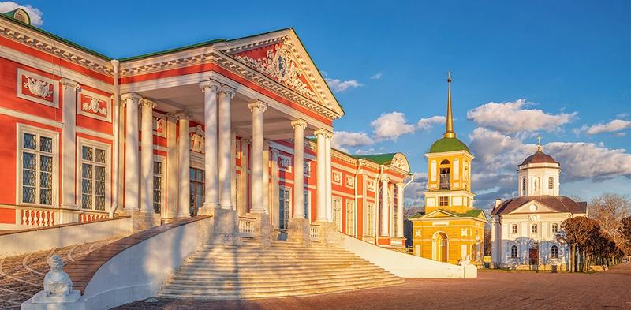
« КУСКОВО БЫЛО ЛЕТНИМ ИМЕНИЕМ ГРАФОВ ШЕРЕМЕТЕВЫХ »
усадьбы. Этот символ власти и благородства демонстрирует принадлежность усадьбы к семье Шереметевых . В Дворец ведет белоснежная лестница, а по бокам есть два пологих спуска, охраняемых сфинксами. По ним гостей прямо ко входу подвозили на каретах. Мы подъехали не на карете, а на машине. Андрюша поставил машину недалеко от входа в усадьбу. Благодаря комплекс- ной реставрации, проведенной по описям 18 века, я могла увидеть Дворец таким, каким он был во времена приема высокопо- ставленных гостей и проведения торжественных мероприятий. Особое внимание привлекла уникальная сохранность и подлинные интерьеры того времени. Сохранившиеся дощатые полы, камины, печи, лепнина, а также зеркала, осветительные приборы, роскошно отделанные комнаты, - такие как Малиновая гостиная, Хрустальный зал, библиотека, - передают атмо- сферу дворянского быта 18 века. Дворец называют сердцем всего усадебного комплекса. Это главный дом всего архитектурного ансамбля, памятник, где 300 лет назад здесь гремели балы в Хрустальном зале, а сейчасмузейная тишина. Но стены Дворца бережно хранят атмо- сферу тех времен. Читала что в настоящее время здесь проходят концерты классической музыки. Счастливые москвичи. Дальше мы остановились у здания Грота. Это необычное здание символизирует стихии воды и камня благодаря своему архитектурному замыслу и использованию материалов. Павильон, построенный крепостным Шереметева архитектором Фе- дором Аргуновым в стиле рококо, снаружи выглядит, как каменный, а внутри - с уникальной отделкой из ракушек, корал- лов, перламутра, цветного стекла. Мы не были внутри - это я читала. Грот -единственный в России павильон, сохранивший свою уникальную отделку с 18 века, является экзотическим среди архитектурных сооружений Кусково. Рядом с Гротом находится старинная церковь - уникальный памятник церковного зодчества столицы, построенный в Кусково раньше всех зданий. Возведен в стиле барокко, носит название Храм Спаса Всемилостивого, был освещен в 1737 году. Рядом, позже к ней присо- единилась колокольня, построенная в стиле классицизма. В настоящее время храм является действующим, в нем проводятся богослужения, а с колокольни раздается звон восьми колоколов. Хотелось услышать звон восьми колоколов, но было не то время. Из истории известно, что церковь посещали царственные особы, в том числе императрицы Елизавета первая, Екате- рина вторая, император Александр третий с супругой Марией Федоровной, император Николай второй с наследником, когда

« ГРОТ»
посещали владения Шереметьевых. Мы прошли мимо симпатичного дома, который демонстрирует голландскую архитек- туру и интерьеры с изразцами и фламандской живописью. Как говорит история, этот павильон выстроен в 1749 году в память об эпохе Петра первого и его увлечения Голландией. После дворцовых впечатлений домик создает совсем другое настроение простоты и уюта. Недалеко от Голландского домика мы ви- дели три дуба - из истории они посажены императором Александром третьим, его женой Марией Федоровной и сыном Ни- колай вторым в 1886 году, когда посещали владения Шереметевых. Я притронулась к ним, как будто погрузилась снова в то далекое время. В Юго-Западной части Кусково находится хижина отшельника Эрмитаж, дальше Швейцарский домик, возведенный в1870 годах архитектором Н.Л. Бенуа . Это строительство было заключительным в Кусково. Оно необычно тем, что стены его первого этажа расписаны под кирпич, а украшением второго этажа является резьба по дереву. В стенах этого домика в начале 20 столетия жил последний владелец усадьбы Сергей Дмит- риевич Шереметев. В настоящее время в Швейцарском домике разместилась Дирекция музея Кусково. Следующим предстал перед нами Итальянский домик - небольшой павильон в итальянском стиле, предназначенный для маленьких вечеринок с коллекцией паритетных вещей на первом этаже. В нем отражено стремление графа Шереметева к созданию своей Италии с элементами роскоши и тонким художественным складом жизни. Сам павильон использовался для небольших приемов и как музей - там выставлялись миски, тарелки и другие предметы фарфора середины 18 века. Впечатляющим моментом для меня была прогулка по парку. Обзор от ИИ Парк называет образцом классического русского паркового искусства с его регулярной планировкой и живописными аллеями. Он является классическим парком 18 века с геометрическими аллеями, скульптурами, фонтанами, созданный в модном французском стиле. Я любовалась разнообразием деревьев в парке: сосна, клен, береза, вяз, осина, дуб, липа. В парке усадьбы Кусково скульптуры установлены по циклам мифологических персонажей. «Орфей и Эвридика» - самая боль- шая скульптура в усадьбе в центре регулярного парка на открытом пространстве и пропустить ее было сложно. Скульптура «Река Скамандр» воссоздана итальянским мастером из декоративной пластики - ничего похожего в России просто не су- ществует. Возможно поэтому граф Шереметев выделил для неё самое главное место.

« КУСКОВО, УСАДЬБА-МУЗЕЙ»
Но не только иностранными работами украшена усадьба. Есть еще одна скульптура, связанная с водной стихией, которая располагается возле голландского прудика. Это образ реки Кусково, по названию которой дали имя всей территории, метафо- рически представленный в виде старца с сосудом в руках. Пройдясь по парку мы видели и другие, не менее значимые произведения - скульптуру богини мудрости Минервы, с образом которой ассоциировалась русская императрица Екатерина Великая. Я читала, что все коллекции графа Шереметева с достоинством пережили исторические катаклизмы 20 века. В 2019 году скульптуры реставрировали, мастера вернули им исторический облик и теперь они продолжают украшать усадебный парк Кусково. Конечно, для меня посещение Кусково оставило яркие впечатления, позволив окунуться в атмосферу роскоши и развлечений 18 века. Кусково - это не просто архитектурный ансамбль, но и важный исторический памятник, позволяющий понять культуру и быт дворянства 18 века в России. Не хотелось уходить из Кусково просто так, нашла стихи Ивана Долгорукова (1764-1828), русского поэта, драматурга, мемуариста из рода Долгоруких. Как он красиво писал об усадьбе Шереметевых. Мне понравились, почитайте – может, и вам понравится: «Земли лоскутик драгоценный. Кусково милый уголок Эдема сколок сокращенный В котором самый тяжкий рок В воскресный день позабывался И всякий чем нибудь пленялся! Но время лютый враг всего щадить не любит ничего…», отрывок из его поэмы «Прогулка в Кусково». В этих стихах он описывает мгновение умиротворения и вдохновения, когда время словно останавливается. Наша экскурсия по усадьбе Кусково завершилась, но у меня огромное желание вернуться сюда. Надеюсь, что мой внук Антон когда-нибудь посетит этот милый уголок России... Николай Максимович Карамзин, известный русский писатель и историк, в стихотворении в 1814 году писал: «Кто был в Москве, тот знает Россию». Москва - это не просто город, это концентрат всей нашей России. Она дает знания, а время и тишина помогают почувствовать архитектуру, людей… В Москве много исторических памятников, музеев, мест, связанных с историей нашей Великой России. Я люблю Москву. Я приезжала в Москву много раз с раннего детства. Впервые меня привезли сюда в 1947 году. Сопровождала меня моя старшая двоюродная сестра Александра Алексеевна Слесарчук, я жила у своего дяди Семена Петровича Слета. На протяжении всей его жизни я часто приезжала в Москву. Он был военным высокого звания, окончил две военные академии и был очень занятым человеком. Но всегда оставался для меня и моих детей самым родным. Он всегда находил время пообщаться с моим старшим сыном Андреем, который учился в Московском Горном институте и рассказать много интересного моему млад- шему сыну Олегу. Олег учился в Выборгском авиационно-техническом училище и часто приезжал к С.П. в Москву. Я с тепло- той вспоминаю то время. Теперь в Москве живет мой старший сын с семьей. Москва, наполненная воспоминаниями о том далеком прошлом и настоящем, стала для меня еще ближе. Неда- леко от Москвы, в Балашихе, живут мои двоюродные сестры со своими семьями и племянница Галина Петровна Груздева, дочь

« ДВОЮРОДНАЯ СЕСТРА ИРИНА »
моей двоюродной сестры. Дети Семена Петровича также живут в Москве, но я не встречалась с ними много лет после смерти их матери Тамары Григорьевны Слета по непонятным для меня причинам. Возможно, из-за несовпадения по времени - я бываю в Москве в основном летом, когда москвичи выезжают на дачи или путешествуют. Но у меня было счастливое время, когда я встретилась со своей двоюродной сестрой Грудкиной Ириной Трофимовной. Мы заранее созвонились и наша встреча состоялась в Мытищах в кафе с английским названием «Даили». Мы обе были рады этой встрече - говорили о своих семьях и о ее работе. Она преподает математику в старших классах и, несмотря на пенсионный возраст, полна энергии и желания работать дальше. Встреча совпала с периодом выпускных экзаменов и она с любовью и небольшой тревогой рассказывала о своих выпускни- ках. Она интересный и удивительный человек, я горжусь ею. Наша встреча была не долгой, но мы расстались в надежде встретиться снова. И действительно встретились в конце моего визита в московском кафе... В Москве я часто встречалась со своей внучкой Викторией.
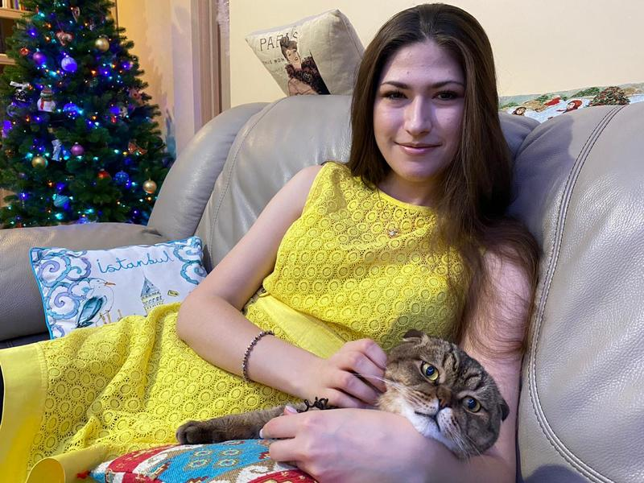
« МОЯ ВНУЧКА ВИКТОРИЯ»
Она уже взрослая, у нее два высших образования - она окончила два факультета в МГУ: юриста и психолога. У нее есть опыт работы психологом и она востребована в этой сфере. Думаю, она обладает замечательной способностью ставить себя на место клиента и понимать его эмоциональное состояние. У нее есть стремление к постоянному профессиональному росту. Конечно, работа психолога очень ответственная, поскольку нужно уметь успокаивать, наблюдать, проявлять тактичность и эмоциональный интеллект. Наши встречи были не слишком частыми, но в свободное от работы время мы с нею ходили в кафе, в парикмахерскую к ее мастеру, а также в магазины за нашими любимыми фруктами. Конечно, были и радостные встречи, когда собиралась вся семья. Мы вместе наслаждались вкусными пирогами, пили кофе или чай, и, устроившись на удобном диване, смотрели новости или кино. Сейчас я вспоминаю такие редкие встречи очень часто, как источник силы и надежду на будущие встречи. Когда я вернулась в Москву после последнего моего путешествия по стране, у нас с Викой была культурная программа, и я ей очень благодарна. Моя внучка не слишком много рассказывает о себе, но при этом она отличный слушатель, наверное, благодаря своей профессии психолога, ведь активное слушание очень важно в ее работе. Это ценный навык не только для профессионала, но и для человека. Находясь там, в России, я всегда радовалась встречам с нею, а здесь она всегда в моих мыслях и сердце. В оставшееся время до отъезда в Белоруссию, каждое утро прогуливаясь по Звездному бульвару в Останкино, я проходила мимо Храма Равноапостольной княгини Ольги. Иногда, когда церковь была открыта, я заходила внутрь и стояла у икон, которые для меня не просто картины. Я останавливала взгляд на их образах, ощущая исходящий от них свет. Иногда я просто сидела и слушала речь священника или хотела побыть наедине с со- бой. Недалеко от Храма установлен памятник Княгине Ольге который был открыт в 2019 году в честь 1050 лет со дня ее смерти. Фигура Ольги, 2.7 метров, выполнена из бронзы. Она стоит рядом с ее внуком Князем Владимиром, который держит рукав с макетом Храма в Останкино. Княгиня Ольга вошла в историю не только как первая жен-
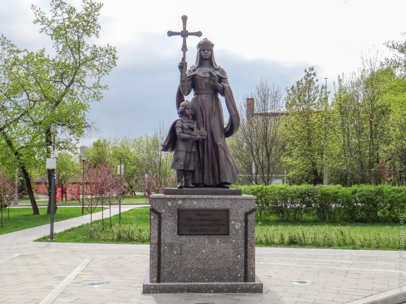
« КНЯГИНЯ ОЛЬГА»
щина, принявшая православие, но и как жена, отомстившая за смерть своего мужа, великого князя Игоря, и воспитавшая внука - будущего Крестителя Руси. Прошло много лет, но история не забыта и продолжает жить в новых формах. Она как наука, помогающая нам понимать себя и общество. Без прошлого не было бы и нас. Рядом с храмом в Останкино есть маленькая торговая лавка, где я часто покупала пирожки с картошкой и капустой. Они были свежие и вкусные, почти как у моей бабушки в далеком прошлом. Несколько лет тому назад я побывала в Свято-Троицком Серафимо-Дивеевском монастыре. Он находится в селе

«СВЯТО-ТРОИЦКИЙ СЕРАФИМО-ДИВЕЕВСКИЙ МОНАСТЫРЬ»
Дивеево. Там я кушала хлеб, вкус которого запомнила навсегда. Там его пекут на хмелевой закваске по старинным рецеп- там и он отличался особенным ароматом... Я посетила мощи Серафима Саровского, святые канавки, музеи. У меня осталось много воспоминаний об истории и архитектуре этой обители. Я счастлива, что побывала там. Каждый раз, когда я приезжаю в Москву, я обязательно посещаю Храм Матроны Московской. Это место с невероятной умиротворяющей энергией. Он находится в историческом центре Москвы в Покровском Монастыре, где хранятся мощи свя- той Матроны. Обычно я добираюсь туда на метро до станции Таганская, а потом пешком минут 15. Много лет назад меня туда впервые привез Эдик на машине. Иногда я приезжала туда с Валей, но чаще одна. Когда я посещаю храм Святой Матроны, я всегда ощущаю глубокое чувство трепета и присутствие ее духа. Я знаю, что это часть традиции – прикоснуться к истории и укрепить веру. У выхода мне всегда дарят цветок и я с благодарностью принимаю этот дар от Матронушки и храню его. Находясь в Москве, я несколько раз бывала на даче ребят в деревне Степаньково, которая расположена в Пушкинском районе недалеко от Москвы с удобным транспортным доступом. Мы обычно ездили туда на машине по выходным, когда Андрей был свободен от работы. Дача - это возможность насладиться загородной жизнью в экологически чистом районе не- далеко от столицы. Рядом с дачей есть прекрасный лес с разнообразными деревьями. Наверное, там много грибов, но мы их не собирали. Мне очень понравился их дом – двухэтажный, с большой уютной гостиной - столовой с большим столом посредине и большим количеством стульев для большой семьи, че- тырьмя комфортными спальнями с современной мебелью и открытой террасой с шезлонгом, где можно расслабиться днем полулежа, вытянуть ноги и вздремнуть. Вокруг дома растет молодой сад с фруктовыми деревьями, с ягодными кустарниками: малина, смородина и даже голубика, которая напоминает наш Север, тайгу и город Нерюнгри. На территории дачи огромный цветник - это владения Вали, где растут розы разных сортов, лилии, тюльпаны, пионы, нарциссы и еще много других цветов. Это ее хобби и большой труд, и она всегда получает отличный результат, потому что очень старается. Конечно, на даче хочется только наслаждаться природой, свежим воздухом, тишиной, но здесь нужен постоянный труд для создания этих условий. Для внуков на территории дачи построен деревянный домик для детских игр. Когда я была там, я гуляла по улицам Степаньково, рассматривала архитектуру домов, ходила с Андрюшей в магазин.. К работе меня не привлекали – днем я могла сидеть в удобном шезлонге и отдыхать, иногда находила в онлайне телефона любую музыку, песни. Мне нравится музыка саксофона - она имитирует человеческий голос, выражая радость, печаль, страсть. Читала, что этот инструмент - изобретение бельгийского мастера Адольфа Сакса - был им сконструирован в 19 веке и является относительной редкостью для мира музыки. Я часто слушаю музыку на саксофоне из кинофильма «Долгая дорога в дюнах», написанную Раймондом Паулсом - она передает чувства героев этого фильма и также вызывает у меня ассоциацию, связанную с опреде- ленными чувствами, событиями и личными воспоминаниями. Мой внук Антон в раннем детстве играл на саксофоне - ему было 11лет. Антон хорошо играл. У него прекрасный слух - я слушала в его исполнении на саксофоне песню «Yesterday». Вспоминаю его

«МОЙ ВНУК АНТОН В РАННЕМ ДЕТСТВЕ»
с ранцем, полным учебных принадлежностей, и огромным футляром с саксофоном. Конечно, для маленького мальчика это была большая ноша, он периодически носил его в школу и из школы в дни занятий музыкой. После трех лет обучения на саксофоне Антон со школьным оркестром летал в Японию. Он был в городах Осаке, Токио. Они исполняли мелодии песен были там две недели и имели успех. В то же время смотрели достопримечательности, знакомились с культурой Японии. Многие дети теряют интерес к музыке, когда взрослеют. Я помню, какие трудности возникали с его папой Олегом, моим младшим сыном, когда он учился в музыкальной школе по классу фортепиано. Но после школы он не играл. Занятия по музыке Антон прекратил, как и многие мальчики его возраста. Он хотел быть сильным, здоровым, иметь подтянутое тело. Его интерес проявился к тхэквондо, регби, футболу, он отлично плавал.

«СЕМЬЯ ОЛЕГА - НОВАЯ ЗЕЛАНДИЯ»
Интересы внука к спорту менялись с возрастом. Родители всегда поддерживали его спортивные увлечения и возили его с одной секции на другую, разделяя каждое его новое увлечение, пока его детское любопытство к разным видам спорта не переросло в настоящую дисциплину и страсть к гребле. Гребля дей- ствительно стала его спортивным увлечением в течение нескольких лет. Раннее утро, река и тишина - конечно, это создало особый фон и для формирования характера Антон. Он не вернулся к музыке, все его свободное время вне учебы были в гребле и в школе. Соревнования между школами, получение медалей, командных первенств, подъемы ранним утром стали частью его жизни, но с окончанием школы занятия по гребле у Антона закончились. Сейчас Антону 20 лет, он ведет активный образ жизни, сов-

«МОЙ ВНУК АНТОН, 2023 »
мещая дневную работу в банке, заочное обучение в университете и спортзал. Вместе со своей девушкой Скайлой они путе- шествуют, ходят в спортзал. Они готовятся к марафону, который будет проводиться в Брисбене в этом году. Глядя на них, вспомнила свой полумарафон в Новой Зеландии в 2009 году, когда я прошла 21 км вдоль озера Таупо. Время летит ,а спортивный азарт в семье остается. Может быть, в будущем Антон вернется и к музыке, у него. прекрасный слух, а может игра на каком то инструменте станет для него хобби, любимым увлечением, как и спорт и его бу- дущая профессия. На даче я была несколько раз. Конечно, большим событием бывает, когда на дачу в выходные дни приезжают Вика, Эдик , Катя, их дети Ева и маленький Егор, сестра Кати Оля с дочкой. Дом большой, уютный - обед, ужин в дружеской обстановке, семья из трех поколений, дети, внуки, правнуки. Радость и надежда, связанные с тем, что семья растет, а жизнь продолжается в детях и внуках. Такие семейные встречи очень сближают и надежда есть всегда, что эти встречи останутся надолго традицией в семье. Природа на даче всегда располагает к позитиву, хорошему настроению. Какое счастье - видеть восход и заход солнца! В отличие от города, здесь нет высотных зданий, мешающих обзору. Ранним утром Андрюша стрижет травку газонокосилкой, он улыбается - эта работа ему по душе. Аромат свежескошенной травы напоминает запах свежего арбуза. Арбуз и скошенная трава содержат зеленые и травянистые компоненты в своем аромате. Оба запаха воспринимались как освежающие, легкие, бодрящие, что, конечно, создавало ощущение связи с природой и растительным миром здесь, на даче... Но двухдневный отпуск Андрюши заканчивался и мы выезжали в Москву - иногда с ним
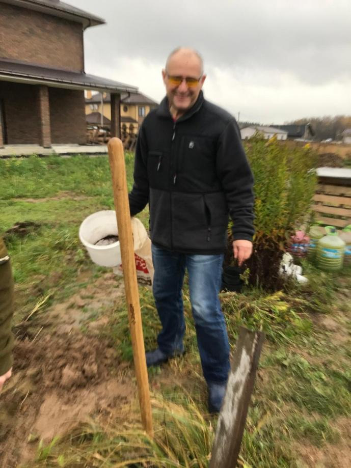
«АНДРЮША НА СВОЕМ УЧАСТКЕ»
вдвоем, а Валя оставалась на даче. Спустя время, когда я пишу о своем визите в Россию, я с теплом вспоминаю время на даче, как самую уютную часть моего путешествия. В День России 12 июня в Москве я слушала песню в исполнении Олега Газманова «Москва, звонят колокола, Москва, зла- тые купола, Москва, по золоту веков проходит летопись времен»... Этот день является символом новой истории страны, ос- нованной на законе, справедливости, и гражданских свободах. Символ общей ответственности за настоящее и будущее страны, за успех и процветание. Традиционно в этот день проводят- ся концерты и народные гуляния, многие граждане прикрепляют к одежде ленточки в цветах национального флага, демон- стрируя свою причастность к празднику. В этот день мы посетили Зарядье. В 2019 году я уже была тут. Тогда мы всей семьей гуляли по Зарядью, где Андрюша организовал обед в честь моего дня рождения в одном из замеча- тельных ресторанов. В памяти остались приятные воспоминания... Мы ехали туда на метро. Я читала, что преимущество Московского метро, как транспорта - это высокая скорость и регулярность движения. Да, действительно. Мы доехали до стан- ции Китай-Город от станции Алексеевской очень быстро. Главный вход в Зарядье - выход на Васильевский Спуск у Храма Ва- силия Блаженного. Немножко истории. Первое упоминание о Зарядье относится к 1365 году, однако поселение торгового люда появилось здесь уже с 12 века благодаря удобному расположению между Кремлем и пристанью на Москве-реке. Свое название это место по- лучило из-за расположения, оно находилось за нижними торговыми рядами, которые тянулись вдоль Москворецкой улицы. Несколько столетий Зарядье, а вместе с ним и весь район Китай – город, были окружены каменной стеной, построенной в 16 веке. Её остатки были снесены в 20 веке, а в этом месте была построена гостиница Россия в конце 1960 годов. Она считалась крупнейшей в мире, но была снесена из-за ветхого состояния здания и решения столичного правительства в 2006 году. А в 2017 году в самом центре Москвы буквально в двух шагах от Кремля вырос ландшафтный парк Зарядье. Он был торжественно открыт к 870 летию Москвы. Парк был построен в тече- ние трех лет. Он имеет четыре климатические зоны, представляющие природу России: тундра, степь, смешанный лес, заливные луга. Это, конечно, чудо, и удивительно ощущать настоящую природу страны в центре Москвы. Растущий можжевельник северно- го ландшафта или душистые травы степей. Вторым чудом для меня в Зарядье был аттракцион, где
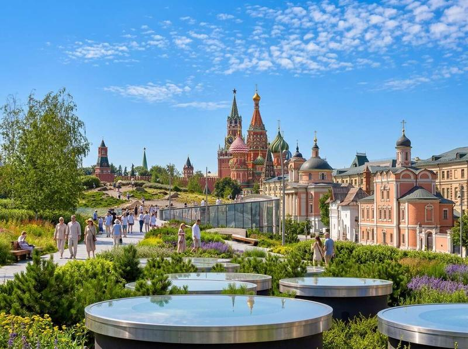
«ЗАРЯДЬЕ, МОСКВА»
мы сидели на подвижной платформе перед огромным 13 метровым экраном. Зал погрузился в полумрак, а потом начался показ. Изображение вокруг нас было настолько реалистичным, что казалось мы действительно парим над Россией. Я видела леса, реки, города - все было так близко. Движение платформы идеально совпадало с тем, что происходило на экране. Ветер дул нам в лицо, когда мы пролетали над полями. В моменты, когда показывали лесную опушку, мы чувствовали запах хвои. Платформа наклонялась и качалась, добавляя ощущение полета. Виды Москвы и России с высоты птичьего полета. Это было захватывающее путешествие полное восторга и удивления. Конечно очень впечатляет парящий мост, откуда открываются захватывающие виды на Кремль, Китай-город, Москво- рецкую набережную, а также московские высотки и Храм Христа Спасителя. Интересно, что парящий мост именно называет- ся так, что это сооружение отрицает идеи связи берегов и как бы висит в воздухе приглашая к прогулкам. Мост представляет собой бетонную консоль длиной более 140 метров в форме бумеранга. Здесь можно днем и ночью любоваться видами на Москву, гулять над рекой. Парящий мост напоминает стеклянный мост ,летящий над Москвой рекой. Конечно, для полного погружения в историю Зарядье сюда нужно приходить не один раз, чтобы послушать музыку в концертном зале, посетить палаты бояр Романовых, место рожде- ния первого царя династии Романовых и подземный музей, где представлены фрагменты древней Китай-городской стены, одной из главных исторических защитных сооружений средневе- ковой Москвы. Парк Зарядье действительно впечатляет скоростью реализации, учитывая масштаб, искусственный микроклимат, вы- садку тысяч растений, парящий мост.Это памятник человеческой воле, подвиг инженеров и рабочих, которые заставили время работать на себя. Посещение Зарядья было для меня подарком со стороны Андрея и Вали. Я благодарна им за поездку туда, этот день стал особенным в моей жизни.

«ПАРЯЩИЙ МОСТ-МОСКВА»
Через несколько дней я отправлялась в Белоруссию, в город Пинск, по приглашению Тамары Комар, мамы моей знакомой Оли, с которой нас связывает многолетняя дружба в Новой Зеландии. Билеты были заранее куплены Андрюшей задолго до моего прибытия в Россию. Я была у Тамары в 2019 году и это время оставило в моей памяти массу положительных эмоций и впечатлений. Моя поездка туда связывает меня еще тем, что моя свекровь, бабушка моих сыновей, мама моего мужа родилась в Белоруссии. Помню, в свидетельстве о ее рождении было написано: родилась в Белоруссии, а национальность -белоруска. Конечно, мои сыновья имеют белорусские корни. При подтверждении свидетельства о рождении бабушки, Сафоновой Галины Никитичны, выданного в Белоруссии, они могут быть гражданами Белоруссии. Но при определенных условиях... Я подумала, что если бы я не писала этот очерк о моей поездке в Белоруссию, я об этом никогда бы и не узнала. Может и детям или внукам будет интересно знать о своих корнях. Мои сыновья - граждане России и я горжусь ими. Но я хоте- ла поближе узнать историю, культуру, быт людей Белоруссии. Я уезжала из Москвы с Белорусского вокзала в полночь. Андрей и Валя провожали меня. Стены вокзала искренне обещают ждать, когда люди прощаются, радостно встречают близких, родных, плачут от счастья, здесь иногда меняются судьбы, а стены вокзалов бережно хранят миллионы таких историй. Но едва ли ка- кой-то вокзал в Москве может сравниться с этим вокзалом. Белорусский вокзал помнит множество значимых событий из истории страны. В1896 году здесь встречали прибывшего на коронацию Николая второго. Этот вокзал служил местом отправки солдат на фронт во время войн. В 1914, когда он назы- вался Смоленским, вокзал являлся одним из основных пунктов отправки воинских эшелонов на западные фронты, где проходили самые. крупные бои. Вокзал стал символом Великой Оте- чественной войны, поскольку именно отсюда отравлялись на фронт солдатские эшелоны и сюда возвращались солдаты-победители. Впервые здесь прозвучала песня «Священная война». Вокзал не молод, 155 лет, здание является охраняемым государством памятником архитектуры и неофициально носит название Вокзала Победы.

«БЕЛОРУССКИЙ ВОКЗАЛ В МОСКВЕ, ПАМЯТНИК ПРОЩАНИЕ СЛАВЯНКИ »
На фасаде можно увидеть символы царских времен: якорь и молоток. У вокзала расположен памятник Прощание славянки. Это скульптурная композиция, установленная 8 мая 2014 года, которая изображает солдата Первой Мировой войны и девушку, провожающую его на фронт. Памятник символизирует всех женщин, провожающих своих близких на войну. Памятник посвящен знаменитому маршу Василия Агапкина. Военный дирижер, 28-летний композитор написал эту му- зыку во время первой Балканской войны в 1912 году. Мелодия вскоре стала одной из главнейших тем Российской Армии и поэтому на параде 7 ноября 1941 и в июле 1945 года Василий Агапкин дирижировал военным оркестром, исполняющим этот марш «Прощание славянки». Эта мелодия приносит трепет, волнение и гордость. Вокзал служил местом съемок для известных фильмов, таких как «Летят журавли» и «Белорусский вокзал». Я смотрела эти фильмы несколько раз. Также я читала в обзоре ИИ, что после знаменитого триумфального перелета через Северный полюс В. Чкалова и С. Громова на площади Белорусского вокзала состоялось торжественное приветствие. Это событие стало ярким примером чествования героев авиации после их героического дальнего перелета. Конечно, о Белорусском вокзале можно писать и писать. Он является крупным ис- торически важным объектом, соединяющим столицу с западными регионами России и другими странами. Я отправилась поездом Москва - Брест, но с остановкой в Минске. Поезд отправлялся в полночь, остаток ночи я спала. Утром следующего дня перед приездом в Минск я выходила на остановках поезда в Смоленске, Орше, Борисове подышать свежим воздухом, прогуляться по перрону, посмотреть архитектуру ж/д вокзалов. Смоленск, один из древнейших городов Руси, находится в России на границе с Белоруссией. После Смоленска - город Орша. Территория Белоруссии расположена в 50 км от границы с Россией в 520 километрах до Минска. В обзоре ИИ читала, что название вокзала - Орша происходит от одноименного города, который в свою очередь получил название от реки Оршица, притока Днепра. Таким образом, сам ж/д вокзал был назван по имени города, на территории которого он находится. История станции Орша насчитывает более ста лет. В 1884 году здесь был построен первый ж/д вокзал, а в 1952 году - существующее здание. Орша - центральная сегодня - важный исторический железнодорожный узел, который есть частью одной из первых железных дорог на территории Белоруссии и в настоящее время играет важную роль в экономике региона, обеспечивая грузовые и пассажирские потоки. Я могла бы этого не знать, но мне хотелось побли- же познакомиться с историей страны, в которую я ехала. Орша осталась позади. Через 1 час 15 минут поезд прибыл на станцию Борисов, которая находится в 71 км от Минска. Времени достаточно, чтобы посмотреть внешний вид здания станции. Исто- рия рассказывает, что станция Борисов была основана в 1871 году в 1914 году было построено уникальное для своего времени двухэтажное здание вокзала, которое сохранилось до наших дней. Город был назван в честь полоцкого князя Бориса и впервые упомянут в летописях в 1127 году. Он расположен на при- вокзальной площади, имеет вытянутую прямоугольную форму, что характерно для железнодорожных вокзалов. Фасад декорирован элементами архитектуры - такими, как пилястры и кар- низы, создавая впечатление торжественности и величия. Обе станции - Орша и Борисов - серьезно пострадали во время ВОВ. В результате отступления немецких войск они были практически полностью выведены из строя. Железнодорожники смогли восстановить движение поездов через станцию Борисов уже через неделю после освобождения города, однако полное восстановление заняло годы. Станция Орша была разрушена при отступлении немцев, подобно Борисову. После освобождения города железнодорожники сразу же приступили к восстановительным работам, что позволило быстро возобновить движение поездов. В Борисове полностью восстановление станции было завершено к 1951 году. Средний темп восстановления на направлении Орша - Борисов - Минск - 21.2 км в сутки . Это подвиг людей. Мы долж- ны всегда помнить героев ВОВ для сохранения исторической правды. Их подвиги, мужество и отвага в нашей памяти и переданы потомкам. Это только очень краткая история о героях-железнодорожниках в Белоруссии. Но память, она вечна. За 10 часов я доехала из Москвы до Минска, преодолев расстояние 750 км. Минск стал моей конечной остановкой. На этом поезде мне бы хотелось продолжить путь до Бреста - города с богатой тысячелетней историей, знаменитой героической Брестской крепо- стью, прогулками по заповеднику Беловежской пущи и осмотром старинных замков в его окрестностях. Однако мое путеше- ствие продолжалось в другом направлении, к городу Пинску. Вокзал в Минске удобно расположен на привокзальной площади в центральной части города. Рядом находится станция метро. Там же Площадь независимости, что очень удобно как для пассажиров, так и для туристов, которые могут начать знакомиться с достопримечательностями города. Ж/Д вокзал стал как бы символом города, соединяющим современность и традиции. Согласно историческим источникам, ж/д вокзал появился в 1873 году и носил название «Вилен- ский». В начале 1890 годов деревянное здание вокзала было пе-
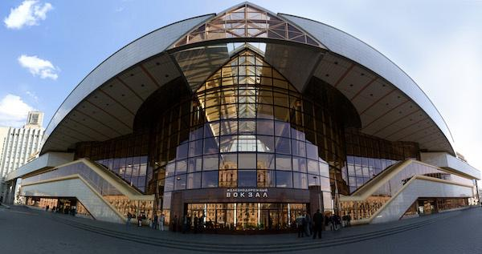
« НОВОЕ ЗДАНИЕ МИНСКОГО Ж/Д ВОКЗАЛА»
рестроено в кирпичное. Во время ВОВ немецкие войска в 1944 году сожгли вокзал, оставив только голые стены. Здание было восстановлено и прослужило до 1991 года, когда его признали аварийным. Новое здание Минского ж/д вокзала открылось в канун Нового века и нового тысячелетия 30 декабря 2000 года. Ну вот такая история этого главного ж/д вокзала в Минске. Сразу с поезда я попала в атмосферу доброжелательности и комфорта Вокзал оборудован всем необходимым для комфортного ожидания поезда: экскаваторы, на которых не нужно было тащить чемоданы, многочисленное количество кафе и буфетов с вкусно пахнущей едой, приемлемыми ценами. Я без труда нашла выход на платформу, с которой я уезжала в Пинск. Вокзал высокого уровня впечатлил своим видом , просторными за- лами, светлыми интерьерами. Вокзал - это как ворота, выпускающие пассажиров в дорогу. Я увидела здесь частичку жизни белорусского народа, их культуру и традиции. В самом городе Минске я не была ,так как в полдень уезжала в Пинск. Здесь я обменяла русские деньги на белорусские, сдала на время свой багаж в камеру хранения, покушала в кафе картофельные оладьи - популярное блюдо европейской кухни - де- руны, драники. И хотя эти картофельные оладьи по похожим рецептам готовят в разных странах мира, именно белорусские дранки завоевали популярность, благодаря особому вкусу и национальным кулинарным секретам и свойствам белорусского картофеля под названием бульба. Об этом я тоже читала. В полдень я уезжала из Минска. Время в пути - 4 часа 5 минут, расстояние - 221 км до Пинска. Остановки очень короткие, их всего 4. Из них Лунинец – последняя, 10 мин. Сидеть в купе не хотелось, я стояла у окна, любуясь белорусской природой, которая пролетала мимо окон. В Белоруссии очень много лесов, озер, болот, рек. Из-за большого количества болот эту страну называют легкими Европы. Болота играют важную роль в природе, они очищают воздух от углекислого газа, сохраняют редкие виды растений и животных. В народной культуре болото считалось глухим и опасным местом, но сегодня большинство находится под охраной человека. Белорус- ские болота уникальны своим рельефом. Здесь расположена пятое по величине болото в Европе - Ельня.

« ЕЛЬНЯ- БОЛОТА, ОДНИ ИЗ САМЫХ БОЛЬШИХ В МИРЕ»
Ему более девяти тысяч лет. Это болото содержит особый мох, который обладает антисептическими свойствами и работает, как природный фильтр, поэтому болота являются огром- ным хранилищем пресной воды. В России есть Васюганские болота, одни из самых больших в мире. Они расположены в Западной Сибири и обеспечивают пресной водой всю территорию региона. Здесь находится около 800 тысяч озер. Болота - это хранилище чистой воды. В озерах можно купаться, а из болот можно пить только воду. В болотах земли сосредоточен огромный запас пресной воды, который значительно превышает объем всех рек на планете. Как об этом интересно читать. Благодаря моему путешествию я узнаю так много. Я всегда думала, что болото это трясина, это опасно. Наверное, ничто так не развивает ум, как путешествие. Поездки заставляют быть более внимательными, вовлеченными в настоящий момент. Когда я вернусь в Россию в ближайшие годы или мои дети, внуки прочитают об этом интересном чуде природы, может они захотят съездить к этому знаменитому болоту Ельня или в Васюганские болота Западной Сибири России. Там лучше в сентябре быть, когда созревает клюква. Лунинец мы проехали. Красивое здание вокзала имеет большое историческое прошлое. Во время ВОВ район и все строения на привокзальной площади были целиком разрушены, осталось целым только здание станции, оно стоит и се- годня. Современный вокзал построен в 1967 году. В Пинск, конечную остановку моего путешествия, поезд прибыл по расписанию. Тамара, мама Оли, встретила меня. Начну с вокзала. Это не просто здание, а важный транспортный узел города. Он расположен на берегу рек Пина и Припять и играет ключевую роль в сообщении с другими населенными пунктами Белоруси и России. Также это современное здание, которое является воротами в старинный город с богатой историей и множеством достопримечательностей. Вокзал имеет большую историю. Его закладка началась в 1882 году. В годы Первой мировой войны вокзал был частично разрушен. Современный вокзал ж/д станции Пинск был открыт в 2009 году. На фасаде здания вывешена мемориальная доска, посвященная железнодорожникам, которые принимали участие в революционных выступлениях против царизма.
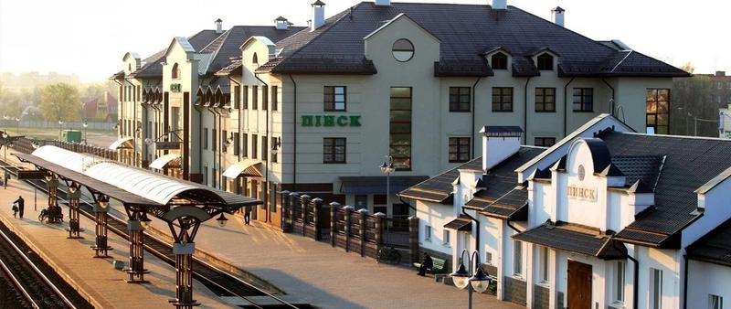
« ВОКЗАЛ Ж/Д СТАНЦИИ ПИНСК»
Пинск - древний город на Западе Белорусского Полесья. Город возник на месте древнего поселения на левом берегу Пины в месте впадения в нее реки Струменя. Впервые о Пинске упоминается в 1097 году в Ипатьевской летописи. Пинск на про- тяжении своей истории являлся частью таких государств, как Великое Княжество Литовское, Речь Посполитая, Российская империя и Польская Республика. История Пинска - это история постоянного культурного и политического влияния разных держав, сменяющих друг друга в разные эпохи. Конечно, я хотела иметь побольше информации об этом городе. У меня был уже накопленный опыт об истории этого замечательного города с прошлой поездки сюда в 2019 году, но хотелось вспомнить те впечатления и получить новые… Мне интересно было познакомиться с элементами Герба города – фигуры, цвета, которые могут рассказать об историче- ских событиях, культурных особенностях и традициях города. Красный цвет символизирует мужество и отвагу, а синий - терпение и честность. Герб Пинска - серебряный лук со стрелой на красном поле. В нижней части Герба на синем фоне расположены символы: теплоход и вода /судостроение и портовый город/, шестерня /промышленность/, Бабича пряжи / легкая промышленность/ и дренажная труба /мелиорация/. Герб является ви- зитной карточкой, отражающий сущность и уникальность города. В прошлом Пинск называли Белорусской Венецией из-за обилия рек и каналов, которые служили основными транспортными путями - люди использовали их для передвижения и тор- говли. В то время рек было больше, чем дорог. Читала легенду, что каменные кресты плыли по реке Пине под стенами города и не тонули. Это божественное явление и вдохновило людей на принятие новой веры. Живая легенда, существующая на протяжении столетий. Город Пинск - это город-музей под открытым небом и еще его называют так из-за хорошо сохранившейся застройки прошлых веков, множества исторических и архитектурных памят- ников - таких, как иезуитский коллегиум, построенный в 17 веке. Он представлял собой одно из первых высших учебных заведений на территории Полесья. В настоящее время не действующий. Монастырь францисканцев включает в себя костел Успения Девы Марии и сам Монастырь. Важная католическая святыня Белоруссии, памятник архитектуры начала 18 века, известен своими уникальными фресками, такими как Поклонение Волхвов и Пинская Мадонна. Последняя является одним из художественных произведений храма, обладающая чудотворными свойствами. Здесь, в сердце Пинска, где время за- медляет ход, а кирпичные стены костелов хранят шепот веков, оживает величественный голос короля инструментов - органа. Он установлен в Соборе Вознесения Пресвятой Девы Марии. Сейчас это самый старый орган в Белоруссии. Пинск сохранил значительную часть своей исторической уличной застройки. Сохранилось много домов, построенных в различные исторические периоды, включая здания, которые можно отнести к нашему времени, а также современные жилые комплексы и здания, построенные в последние десятиле- тия, в нынешнем веке в дополнение к сохранившимся историческим памятникам. С Тамарой у меня было много прогулок по улице Ленина, главной и старейшей улице, знаменитой расположенными на ней множеством магазинов, кафе, ресторанов. Интересно, что эта улица сохранила свой исторический облик как самая древняя, изначально известная под множеством названий. Она яв- ляется одним из самых посещаемых мест традиционных прогулок еще с 19 века. И мы гуляли здесь с Тамарой спустя два века. Ее легко найти, в самом начале улицы стоит бронзовый памятник Пинчуку. Эта фигура - собирательный образ коренных жителей. Интересно, что Пинск называют Полесский Иерусалим из-за рели- гиозных сооружений, особенно католических, которыебыли построены в средние века. Полесский указывает на географическое расположение города на полесье, и на регион с уни- кальной природой, болотами и реками, где Пинск является его столицей. Мне повезло, я приехала в Пинск в сезон черешни. Мы с Тамарой навещали ее подругу Людмилу, у нее большой сад, ветки деревьев полны были спелой черешни. Это было большим удовольствием наслаждаться вкусными, свежими фруктами. Её подруга Людмила с семьей приехали в Пинск из России, с Севера, и мне интересно было общение с этой семьей, так как я тоже долго жила на севере. Рядом с домом Тамары находится набережная Пины, по которой растут липы. Липы в Белоруси цветут в конце июня - начале июля, поэтому второй летний месяц в Белоруси липень назван в честь этого явления. Каждое утро и вечер мы гуляли по Набережной, наслаждались сладковато-медовым ароматом лип, который раз- носился вокруг. Я слышала, что этот аромат способствует расслаблению и снятию стресса. Наши прогулки с Тамарой были удивительными. А еще по утрам я, находясь в гостях у Тамары, просыпалась ранним утром от вкусного запаха еды и была всегда удивлена изобилием еды белорусской трапезы. Прогуливаясь по знаменитой Главной улице Ленина, мы как-то зашли в кафе с грузинским названием «Хинкальная», где мы кушали вкусное грузинское блюдо хинкали. В один из дней мы посетили Первомайский рынок, где я купила лилии для дачи в Москву. Мне захотелось, чтобы белорус-
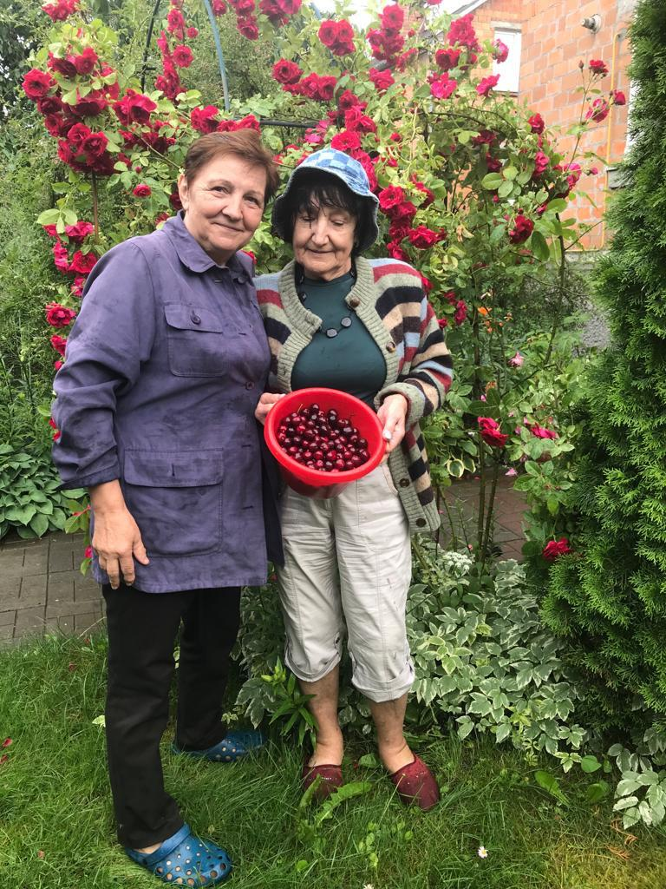
« В ГОСТЯХ У ТАМАРЫ»
ские цветы зацвели в Подмосковье на даче ребят в Степаньково. Меня также интересовали ткани Белоруссии. Тамара, в про- шлом технолог, рассказывала о льне, который растет в сельской местности, и тканях из него, которые служат долгие годы, отлично впитывают влагу и быстро высыхают, создавая ощущение прохлады и комфорта. По совету Тамары я купила несколь- ко льняных вещей, сувениры. Находясь в этом городе, я открыла многое для себя и каждый день находясь у нее в гостях, я ощущала тепло, открытость и ее гостеприимство, внутреннее спокойствие, гармонию, которое дарит человек и еще.. ощущение дома. Я уезжала из Белоруссии поздно вечером 22 июня 2023 в исторический день памяти и скорби. В этот день 82 года тому на- зад Германия напала на СССР, частью которого была БССР . Беларусь стала одной из первых территорий Советского Союза, на которую обрушился удар агрессора. Потери были колоссальными. Установлено, что каждый третий житель Беларуси погиб в годы войны, более 380 тысяч человек были вывезены в Германию на принудительные работы. Были разрушены 209 городов и районных центров, а также 9200 деревень. Беларусь утратила более половины своего национального богатства. Здесь много героических мест. К основным относятся Брестская крепость – герой, важный исторический объект который принял на себя первый удар в ВОВ. Защитники проявили выдающуюся доблесть, стойкость и мужество , оказав ожесточенное сопротивле- ние. Государственный мемориальный комплекс Хатынь, где в марте 1943 года в деревне Хатынь немецко-фашистскими карателями заживо сожгли 149 жителей – стариков, женщин, де- тей. В 1969 году на месте деревни был открыт мемориальный комплекс Хатынь, в память о массовом уничтожении нацистами и их приспешниками мирного населения. В период войны в Пинске погибло более 17000 евреев. В городе велись партизанские действия и в 1943 году советские войска провели Пинский десант для освобождения города. Пинск был освобожден 14 июля 1944 года, а полное освобождение от немецко - фашист-
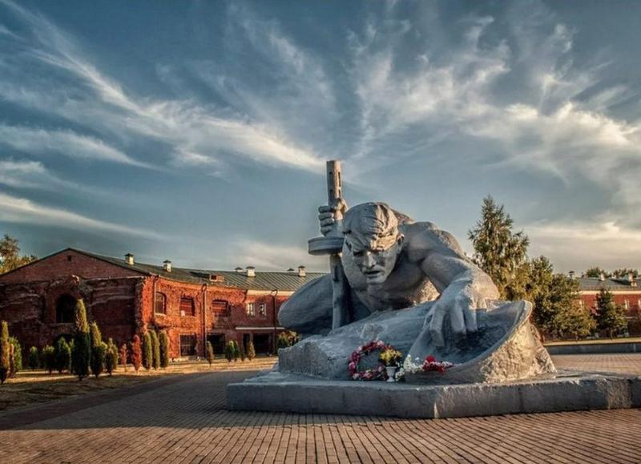
« МЕМОРИАЛ ВОВ - БЕЛОРУССИЯ»
ских захватчиков произошло в 1944 году в ходе масштабной операции Багратион, когда были освобождены последние белорусские города, такие как Брест, что ознаменовало заверше- ние немецкой оккупации на территории БССР. Память о ВОВ является данью уважения к погибшим и выжившим и подчеркивает как далась свобода и благополучие и почему их нужно ценить и беречь... «Молодость моя Белоруссия …. Песня партизан. Сосны и туман Песня партизан … Алая заря...». Музыка А. Пахмутовой, слова Н.Добронравова в исполнении знаменитого певца ансамбля «Песняры» Владимира Мулявина. Мягкие, тихие звуки этой песни передают грусть, в них чувствуешь мысли и переживания того времени. Эта песня является своеобразным патрио- тическим гимном, рассказывающим о мирных жителях, погибших в Хатыни. Страна, практически уничтоженная войной, смогла быстро восстановить свой народ и хозяйство, показав невероятную способность к выживанию. Я прожила в Белоруссии в городе Пинске всего неделю, но я получила яркие эмоции и новые впечатления. Мне, конечно, хотелось побывать здесь еще, съездить в Беловежскую пущу, о которой я читала, что она является одним из крупнейших туристических центров Беларуси, а также полюбоваться древними дубами, возраст кото- рых превышает 500 лет и зубрами. Я читала, что они являются символом Беловежской пущи. Это самое массивное животное Европы, достигающее тонны весом и высоту до двух метров в холке. Зубр, дикий лесной бык, самый крупный представитель копытных, и именно Беларусь спасла и сохранила его для будущих поколений. Мое путешествие в Белоруссии закончилось. Я в Смоленске на границе Белоруссии с Россией, но в душе я еще долго была на белорусской земле. Есть фраза, что дорога домой всегда короче. Да, действительно, поезд тихо подошел к Белорусскому вокзалу и Москва встретила меня тишиной. Раньше, в давние годы, прибытие поездов в Москву казалось масштабнее, когда из репродуктора поезда торжественно неслось: «Дорогая моя столица, золотая моя Москва». Эта песня, написанная в суровом 1941 году, в 1995 году стала гимном Москвы . Мелодия этого гимна всегда создавала ощущение праздника, которого мне так не хватало в этот раз. Единственным, что нарушило эту тишину, была светлая улыбка моего сына, Андрюши... Мы ехали с ним на такси по ночной Москве. Ночная Москва - удивительное прекрасное зрелище, которое стоит увидеть, и не один раз. После поездки в Белоруссию я провела неделю в Москве.
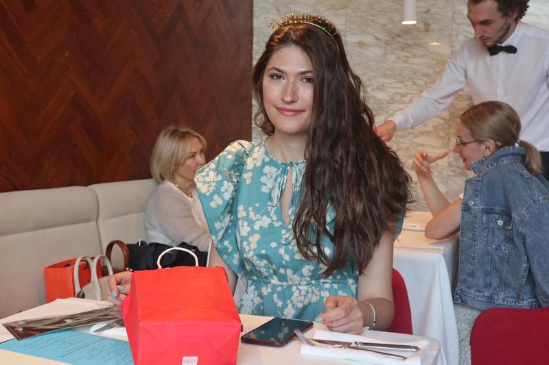
« ДЕНЬ РОЖДЕНИЯ МОЕЙ ВНУЧКИ ВИКТОРИИ»
25 июня мы отмечали день рождения моей внучки Виктории. Ей исполнилось 28 лет. Для меня это было большим собы- тием и я мысленно вспоминала трогательные моменты ее детства, когда мы много времени проводили вместе. Для меня это был счастливый момент в моей жизни, ведь последние годы я очень редко была рядом с нею, а здесь, в этот день ее рождения, она была рядом. Я могла купить ей торт, который ей понравится, огромный букет цветов и сказать ей , что она прекрасная, добрая, сильная, и пусть счастливые совпадения и удача всегда сопровождают ее на пути к счастью... Так все и было, день был счастливый и для меня, потому что она была рядом. Мы отметили это событие в ресторане Паста-Баста в старинном итальянском ресторане с уютной атмосферой. Основ- ное блюдо там - различные виды пасты с разными соусами и добавками, а также другие итальянские блюда, включая закуски и десерт. Все подавалось на больших тарелках с небольшими порциями по заказу. Мне понравилось, вкусно. Вика задувала свечи на торте, эта традиция символизирует исполнение желаний в этот особенный момент. Дружным хором мы спели для нее песню с Днем рождения. Это событие в моей памяти сих пор. После дня рождения Вики я оставалась еще на три дня в семье Андрея. В этот период времени в моей жизни был особен-

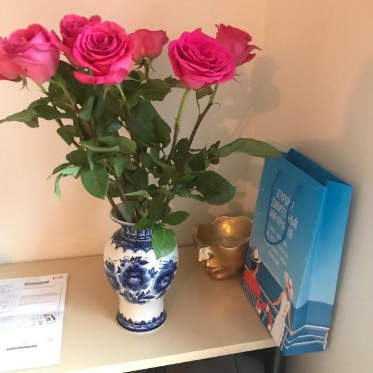
« ЮРИЙ СТЕПАНОВИЧ ПАЗЫНИЧ-МОЙ МУЖ»
ный день - 26 июня - день свадьбы с Юрием Степановичем Пазынич, отцом моих сыновей, Андрея и Олега. Он ушел из жизни в 52 года, прожили вместе 29 лет. Когда я рядом с Андрюшей, в этот день он всегда дарит мне красные розы. Я всегда мысленно вспоминаю этот день, хотя с тех пор прошли целые десятилетия... Остались только воспоминания.... 26 июня 1960 года …
Следующая моя поездка была в Кисловодск. Я собирала чемодан и рюкзак, смотрела в интернете погоду в Кисловодске на ближайшие 21 день. Планировала поездки в горы, подбирала теплую одежду и удобную обувь. 29 июня вечером я уехала в Кисловодск с Павелецкого вокзала. Знакомый до боли вокзал... Много лет тому назад я часто приезжала в Москву к моему родному дяде Слета Семену Петровичу. Вокзал изменился за эти годы, стал значительно удобнее и комфортнее, но несмотря на масштабную реконструкцию, вокзал сохранил для меня ту самую атмосферу близости, которую я помню с тех моих первых поездок в Москву из моего родного Луганска много лет тому назад. Воспоминания мои воспоминания... По расписанию поезд Москва - Кисловодск ушел с Павелецкого вокзала вечером, оставляя Валю и Андрея, моих постоян- ных провожающих, на перроне, а я отправилась в свое новое

« ПАВЕЛЕЦКИЙ ВОКЗАЛ»
путешествие. Поезд 143, вагон третий, купе третье, место нижнее. Соседи - молодой папа с двумя детьми - едут покорять Домбай и уже не в первый раз на трассах разного уровня сложности. У меня тоже мечта увидеть Домбай, когда приеду в Кис- ловодск. Возьму экскурсию. Поезд остановился в Туле. Знаменитый город-герой, старше Москвы на год, известный как оружейная столица России, родина самоваров, печатных пряников и легендарного Левши, который стал идеальным воплощением тульского умельца. О Туле говорят, что это место, где история вкусная /пряник/ и звонкая /гармонь. Выражение «Тула -звонкая гармонь» закрепилось, потому что в этом городе началось первое в России массовое производство этого инструмента в 1830 году, а первое официальное упоминание о тульском прянике датируется 1685 годом. Золотой век тульского пряника - 19 век, когда в
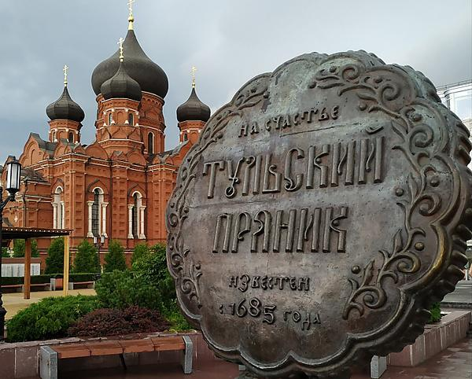
« ТУЛА, ГОРОД-ГЕРОЙ»
Туле насчитывалось более 30 сортов этого лакомства. Сейчас в Туле сотни видов пряников. Впечатляет еще тот факт, что в Туле был испечен пряник весом 117кг и длиной 1.8 метров. Конечно, Тула - это не только сталь и пряники. Главное открытие - Центральный парк. Трудно поверить, что сто лет на- зад здесь была свалка. Санитарный врач Петр Белорусов совершил тихий подвиг, он буквально вылечил землю - посадил там лес. Сам он рано сгорел от чахотки в 39 лет, но подарил городу легкие, которые дышат до сих пор. Удивительно, как один человек может оставить после себя не памятник из камня, а живую вечность. В Тулу я часто приезжала, когда находилась проездом в Москве из Нерюнгри по пути в Луганск. В этом городе живет моя подруга Ольга, она переехала сюда из города Нерюнгри, где прожила много лет и где нас связывала большая дружба, не забытая нами, которая продолжалась здесь, в Туле. Прошло много лет после нашей последней встречи, но воспоминания всегда согревают и напоминают о наших встречах на ее даче, музеи, экскурсии в величественную усадьбу Толстого, гуляние в парках, а также наши прожитые в Нерюнгри трудные девяностые годы. Нет , такое не забывается, я счастлива, что в моей жизни была Ольга и наши встречи здесь, в Туле. Этот город также известен тем, что здесь жили и творили многие писатели: Лев Толстой, Глеб Успенский, Василий Жуковский, Иван Тургенев. Также с городом связаны имена Ви- кентия Вересаева, Ивана Бунина. Михаил Салтыков-Щедрин также бывал в Туле. А Сергею Есенину нравился местный парк. Интересно, что в этом парке установлены памятники поэту С.А. Есенину и санитарному врачу П.П. Белоусову, чьим именем назван парк . Как хорошо, когда есть воспоминания. Наверное, это тот случай, когда прошлое согревает настоящее. К станции Кавказская я приехала на следующий день в полдень. Об этой станции известно, что первое здание было по- строено в 1876-1888 годах. Оно сохранилось до сих пор и используется как багажное отделение. Новое здание вокзала воз- вели в 1903 году из красного кирпича, сочетая стили русской средневековой архитектуры и ампира. Интересно, что и сегодня вокзал на станции Кавказская остается украшением города Кропоткина и прекрасным образцом ж/дорожной архитектуры. В этом здании сочетались современные формы и классические элементы. Да, действительно, это классика, и я сделала первое фото себя на фоне этого прекрасного здания на Кавказе. После станции Кавказская в течении 6 часов я проехала города Армавир, Невинномысск, Минеральные Воды, Пятигорск, Ессентуки. Остановки были короткими. Только в Минеральных водах поезд стоял около часа. Возможно потому, что этот город называют главными воротами Кавказа, здесь он выполняет роль транспортного ж/д узла, отсюда туристы отправляются на курорты в Пятигорск, Железноводск, Ессентуки и Кисловодск, куда и я прибыла по расписанию поезда Москва в 19:14. Пассажиры медленно выходили из поезда. Я покинула вагон с некоторой неуверенностью, так как была на станции в Кисловодске впервые. Мне помог водитель такси, он стоял в ожи- дании пассажиров на перроне и я, пользуюсь его услугами, заплатила 200 рублей и через 10 минут была уже у крыльца сана- тория «Дворец Нарзанов». Престижный, пятизвездочный санаторий в пяти этажах со ступенчатой лестницей находился в тихом и спокойном месте у входа в верхний парк и на одной из самых красивых улиц Кисловодска в 6 минутах от Каскадной лестницы и 10 минутах до канатной дороги и долины роз. Это было очень удобно для меня. В этом престижном санатории, где мой отдых был оплачен моим сыном Андреем я провела три недели. Это были дни незабываемого отдыха. Мой отдых здесь Андрей заранее заплани- ровал, когда я была в Новой Зеландии. Спасибо, Андрюша. Туры для предстоящих экскурсий по Кавказу я купила в туристической фирме «Ариана». В санатории есть санаторно-ку- рортная программа, но я не пользовалась их услугами: у меня не было медицинской карты, лекарства от давления я взяла с собой, аппарат для измерения давления Андрюша мне купил перед отъездом в мои путешествия. Но за весь период моего пребывания в санатории я даже не вспомнила о давлении горный воздух, ранние прогулки, минеральная вода давали мне силу, энергию для путешествий по Кавказу. Я жила в однокомнатном, двухместном номере на втором этаже с балконом на центральную улицу. В номере - мебель, создающая уют, ванна, душ, телевизор, рядом ресторан. На первом этаже плавательный бассейн, где я плавала в свободное от экскурсий время. Ко- гда я уезжала на экскурсию на целый день, после ужина в ресторане получала пакет с продуктами на следующий день моего путешествия, но на ужин обычно я успевала. В ресторане мне нравилось разнообразие еды, шведский стол, прекрасная выпечка, вкусные супы, обилие фруктов, овощей и ежедневно на завтрак была красная икра лососевых рыб. Конечно, я наслаждалась ею, это вкусно и полезно для здоровья, она богата не- заменимыми аминокислотами и насыщенными жирными кислотами омега 3, которые полезны для сердца, мозга, сосудов. Но особенностью ресторана была, конечно, домашняя атмосфера, изысканный сервис и безупречный вкус.

« ЗАВТРАК - БЕЗ КОММЕНТАРИЕВ :0) »
На территории санатория находится бювет-павильон, куда я ходила каждое утро пить минеральную воду нарзан. Я слышала, что нарзан начинается у подножия Эльбруса, где тающие ледники стекают ручейками с гор и впитываются в землю. Там вода проходит через несколько фильтров и насыщается минеральными солями, различными элементами, а также углекисло- той. Нарзан означает «напиток богатырей», который бодрит дух и тело, название произошло из кабардино-черкесского языка, где нарт - богатырь. Визитной карточкой города считается Долина роз в национальном парке Кисловодска. Она является Жемчужиной города. Более 30 сортов роз растут на территории. Считается, что долина роз выглядит особенно эффектной в конце лета, когда цветут практически все растения на клумбах. Но и в начале июля она была для меня незабываемой прогулкой, ярким живописным уголком, где я могла любоваться уди- вительной красотой чудесно пахнущих роз. На выходе из парка

« КАК СЛАДКУЮ ПЕСНЮ ОТЧИЗНЫ СВОЕЙ, ЛЮБЛЮ Я КАВКАЗ…»
находится канатная дорога, а выше Павильон Храм воздуха. Это павильон-полуротонда, смотровая площадка с крышей, опирающейся на колонны, построенная в 1914 году в курортном парке, чтобы люди могли отдыхать и дышать целебным воздухом. Это не религиозный храм, а памятник уникальному климату и воздуху национального парка, который признается ценным природным ресурсом наравне с нарзаном. Изначально он служил укрытием от непогоды и местом для отдыха посетителей дальних троп парка. В настоящее время его часто назы- вают символом лечебного воздуха Кисловодска, считающегося одним их самых ценных ресурсов курорта.
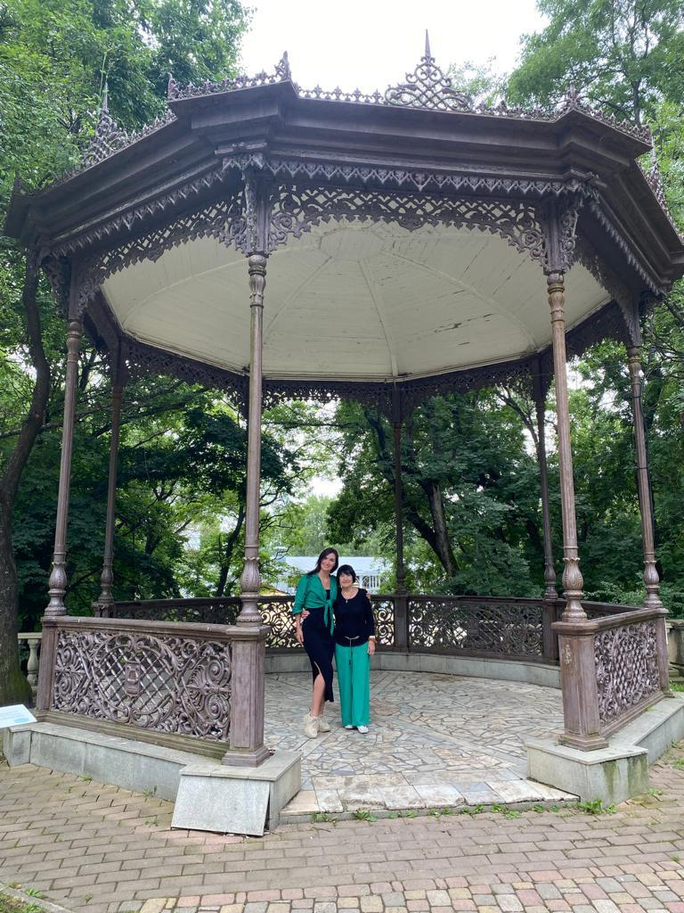
« СИМВОЛОМ ЛЕЧЕБНОГО ВОЗДУХА КИСЛОВОДСКА»
Я счастлива, что могла там просто посидеть и подышать. Я думаю, каждый, кто приезжает на отдых в Кисловодск, если конечно не омрачает его болезнь или преклонный возраст, счита- ет своим долгом посетить Большое и Малое седло. Это две вершины Джинальского хребта, расположенные близко к Кисло- водску и получившие название из-за формы, напоминающей седло. Более доступное для пеших прогулок Малое седло. Я поднялась на высоту 1325 метров. Была ясная погода, я смотре-


« Н.А..ЯРОШЕНКО - РУССКИЙ ХУДОЖНИК- ПЕРЕДВИЖНИК»
ла с высоты на Кисловодск и двуглавый Эльбрус и дышала чистейшим воздухом. Большое седло выше, 1409 метров, является самой высокой точкой Кавказских минеральных вод. Но я не смогла найти его, хотя потратила на поиски долгое время. Я не нашла указателей направления к нему, но в санаторий я пришла в хорошем настроении, уставшая, но счастливая. Это было началом моего знакомства с горами Кавказа. Здесь, в парке недалеко от Храма воздуха я поднималась на горную вершину Красное солнышко (высота 1065 метров). Оно знаменито своим расположением, красивыми рассветами, которые дают ей название и видами на Эльбрус. Гора и ее окрест- ности покрыты сосновыми и лиственными деревьями, создавая живописный ландшафт. На вершине установлен памятник М.Ю. Лермонтову работы скульптора Николая Ходока. Бронзовая фигура молодого поэта в мундире и фуражке с кокардой устремлена вперед, он задумчиво смотрит в даль в сторону двуглавого Эльбруса. Он расположен так, чтобы посетители могли любоваться Эльбрусом, который Лермонтов так часто воспевал в своих стихах. «Как сладкую песню Отчизны своей, люблю я Кавказ...» В этом своем произведении он пишет не только о войнах и ссылках, он пишет о красоте и величии Кавказа. В санатории я познакомилась с Ириной из Петербурга, ценителем творчества художника Н. Ярошенко, музей которому расположен в самом центре Кисловодска по улице Ярошенко. Музей охватывает всю территорию усадьбы Н. Ярошенко, сад, парк и расположенные здесь мемориальные постройки. Тут мы увидели работы Ярошенко, его личные вещи, а также посетили живописный парк со старинными деревьями, где бывали известные гости, такие как Репин, Менделеев, Шаляпин и другие знаменитости. Музей интересен не только как художественная галерея, но и как место с богатой историей и атмосферой, сохранившей дух конца 18 века. Усадьба является популярной до- стопримечательностью Кисловодска. Н.А..Ярошенко - русский художник- передвижник, известный своими социальными и психологическими портретами. Кисловодск был для него любимым местом в жизни. В своих картинах он показывал не- справедливость и жизнь простых людей, его знаменитая картина «Всюду жизнь» - изображение арестантского вагона, в окне которого люди кормят голубей, что символизирует способность человечности и жизни сохраняться в нечеловеческих условиях. Художник хочет показать, что даже среди заключенных есть место доброте, любви и состраданию, и многие из них не закоре- нелые злодеи, а несчастные жертвы обстоятельств, достойные сочувствия. Я благодарна Ирине за экскурсию и, конечно, моя большая благодарность смотрителям этого удивительного места за то, что они сохраняют наследие для нашего поколения ,за то что берегут эту красоту… И я посмотрела много картин, но эта особенная. Каждое утро, когда я выходила из отеля на прогулку, у стойки отеля я часто встречала двух сотрудников, с которыми я по- дружилась за время пребывания в санатории. Седочка, менеджер, молодая красивая девушка-чеченка, приехала из Грозно- го, и работник отеля Ивица, он приехал из Сербии в 1992 году. Он был строителем санатория «Целебный нарзан». В Сербию он не вернулся. Здесь у него семья - 4 детей, из них одну девочку он взял из детского дома. Он очень добрый человек и я всегда чувствовала его поддержку и советы в отношении экскурсий и жизни в санатории. Здесь, в вестибюле санатория я познакомилась с менеджером туристической фирмы «Ариадна», Еленой Юрьевной Куликовской, уроженкой Кисловодска. Очень милая женщина с бога- тым опытом в туризме (39 лет) и участница открытия многих маршрутов на Кавказе. Она помогла организовать мои экскурсии в нормальном для меня режиме. Я очень благодарна этим замечательным людям. В начале проспекта Дзержинского находится памятник Феликсу Эдмундовичу Дзержинскому. Это место знаковое для ту- ристов. Каждое утро он провожал меня своим твердым взглядом в новое путешествие по Кавказу и я мысленно благодарила его за этот надежный взгляд. В автобусе я всегда чувствовала себя комфортно, так как сидела близко к водителю. Елена Юрьевна бронировала это ме- сто на каждую мою поездку и я могла видеть весь обзор местности, по которой мы проезжали и чувствовать себя комфортно. Мои экскурсии начались с Обзорной по Кисловодску, но к этому времени у меня уже было несколько маленьких экскурсий с моей юной подружкой из Петербурга. Имя у нее такое же, как у моей внучки – Виктория. В древнем мире это имя ассоциировалось с богиней Победы, а сегодня оно означает силу, целе- устремленность, хотя также может указывать на доброту и ранимость. Интересно, имя одно, а столько может быть разных прекрасных черт в характере. Она старше моей внучки, живет в Петербурге, есть семья, взрослый сын Тимур. Вика отдыхала в соседнем санатории. Я познакомилась с ней во время нашей экскурсии в Кабардино-Балкарию, куда мы ездили смотреть Замок Шато-Эркен и Голубое озеро. Шато-Эркен построен по мотивам европейских средневековых замков между 2008 и 2012 годами на искусственном озере и славится своей романтической архитектурой в средневековом стиле. Шато - это винодельческое хозяйство, которое включает в себя замок или поместье, виноградники, производственные мощности для создания вина. У владельца этой винодельни, Тамбулата Эркенова, идея создать замок появилась после его путешествия по Франции, где он был впечатлен местным Шато. Об этом нам рассказала наша экскурсовод. Замок красивый, сказочный, напоминает крепость. Им можно любоваться бесконечно. Его архитектура с узкими окнами, остроконечны-

« ЗАМОК ШАТО-ЭРКЕН»
ми бастионами, смотровыми площадками с видом на Эльбрус и мостом делает его очень живописным. Мы не смогли побывать внутри этого здания, для этого нужна была дополнительная экскурсия. Зато я была в замечательном месте Северного Кавказа у Голубого озера Церик-Кель. Это голубое озеро в Кабардино-Балкарии знаменито своей глубиной, чистотой воды и легендами. Оно является одним из са- мых глубоких карстовых озер в мире, вода в нем кристальнопрозрачная, имеет ярко голубой оттенок из за сероводорода, глубина озера до 258 метров и просматривается на глубину более 20 метров. Озеро не имеет впадающих рек, а питается мощными подземными источниками. Вытекающий из него ручей ежесуточно уносит около 70 миллионов литров воды, при этом уровень воды в озере является неизменным, что является еще одной загадкой для ученых. Из-за высокого содержания сероводорода оно не замерзает зимой даже при низких температурах. Легенд много. Например, что на дне озера находится то ли клад Тамерлана, то ли конница Александра Македонского, то ли грузовик с портвейном. Легенда образования озера гласит, что Бесстрашный воин Батраз сразил дракона, который приносил много бед. Дракон упал на землю, создав глубокий провал, который и стал озером. Считается, что оно наполняется слезами чудовища, этим и объясняется его сероводородный запах. Легенда - это жанр несказанной прозы, представляющий собой повествование о событиях которые, как считается, имели место в истории. В ряде случаев прообразами героев легенд являются реальные личности. Да, это так, поэтому и рождаются легенды, которые передаются из поколения в поколение. Наша экскурсия нашла продолжение в селе Верхняя Балкария, где находится башня Абай Кала - достопримечательность с древней историей, построенная в 17 веке князем Алимурзы Абаевым в неспокойное время завоеваний и войн. Башня выполняла сторожевые функции и использовалась для осмотра окрестности, в ней постоянно проживали князь и его семья. Вплоть до конца 19 века строение использовалось как жилое

« ГОЛУБОЕ ОЗЕРО ЦЕРИК-КЕЛЬ »
помещение. На нижних этажах башни проживали представители рода Абаевых. Башня хорошо сохранилась до наших дней – очевидно, что жилое здание гораздо позже приходит в ветхое состояние. Любой дом жив до тех пор, пока в нем проживают люди. Аул Кюннюм, где находится башня давно покинутый и обжитый только горными ветрами. Дорога к башне была доступна, но я не поднималась, а Виктория побывала там и сдела- ла прекрасные снимки. После запланированных экскурсий у нас было свободное время, чтобы посетить сувенирные лавки, места местной продукции, где Вика купила себе шаль. С экскурсии мы приехали вечером. Я думала о том, что день был чудесным: знакомство с Кабардино-Балкарской республикой, ее природой, традициями и знакомство с Викой, внимательной, с добрым сердцем – все настраивало на позитивный лад. Замок «Коварство и любовь» - природная скала возле Кисловодска, обрывистый мыс из известняка в живописном ущелье реки Аликоновки, который издалека напоминает древнюю крепость с башнями. Если хорошо присмотреться, то можно раз- глядеть профили человеческих лиц. Существует легенды о дочери князя и пастухе, чья несчастная любовь дала название ме- сту. Оттуда мы доехали до Медовых водопадов автобусом. Медовые водопады - это группа из пяти живописных водопадов на реке Аликоновка недалеко от Кисловодска, район Ка- рачаево-Черкессии, в 14-16 км от Кисловодска. По легенде, дикие пчелы в скалах смывали мед в потоки, делая воду сладкой и медового цвета. Согласно научным данным цвет может быть вызван минеральными отложениями. Большой медовый - самый высокий - 18 метров. Жемчужный - самый мощный, но ниже Большого. Малый медовый - самый тихий, его еще называют Змейкой. Шумный также известен ,как Чертова мельница. Медовые водопады - это место, где время останавливается, а сердце наполняется радостью, когда потоки воды, падающие с отвесных скал, покрытые зеленью создают эффектную панораму и облака водной пыли. Как-то прогуливаясь по Кисловодску с Викторией недалеко от ж/д вокзала среди вековых елей и сосен, мы увидели оригинальный особняк в стиле модерн, известный тем, что в нем в 1914 году проживал Федор Шаляпин. Пожалуй, нет человека в России, который бы не знал имени великого русского оперного певца с мировым именем Ф.И. Шаляпина. Голос, ниспосланный богом, царь-бас. Спустя десятилетия после его жизни потомки хранят память о выдающемся певце в коллекция, музеях, документах. Вот одним их таких памятных мест, связанных с именем артиста является дом-музей Ф.И. Шаляпина в Кисловодске, который местные жители называют просто дача Шаляпина. Это особняк в стиле модерн 1903 года постройки, известен тем, что здесь жил и работал великий оперный певец Федор Шаляпин. Он арендовал этот дом на непродолжительное время и дача превращалась в музыкальный театральный салон.

« ФЕДОР ШАЛЯПИН »
Ценным экспонатом дачи Шаляпина является рояль, который певец выиграл на музыкальном фестивале в 12 лет. Он находится в концертной гостиной, по словам экскурсовода, на нем до сих пор звучит музыка. Здесь мы увидели его костюмы, фотографии, книги, грампластинки, услышали его голос. На терри- тории дачи есть памятник, на котором он изображен со своей любимой собачкой Булькой. Рядом скамейка, на которой можно сфотографироваться рядом с великим артистом и написать: я здесь была. Ф.И. Шаляпин очень любил Кавказ. В своей автобиографии он писал, что он родился дважды: для жизни - в Казани, а для музыки - в Тифлисе, в городе, где он сделал первые шаги в музыке. Есть известная фраза, которую говорили современники певца Федора Шаляпина. Полная цитата звучит так: «В Москве есть три чуда: Царь-Колокол, Царь-пушка и Царь-бас - Федор Шаляпин». Это прозвище, отражающее величие и мощь его голоса. Я узнала столько нового здесь... После посещения дачи наша прогулка с Викой продолжалась по национальному парку, где расположен источник нарза- на - Нарзан галерея. Источник Нарзана - это архитектурный памятник и бальнеологическое сооружение, под стеклянным куполом которого находятся источники целебной минеральной воды нарзан. Она была построена для того, чтобы люди могли пить лечебную воду прямо из источника, наслаждаться ее оздоровительным эффектом, а также использовать ее для ванн и других процедур, которые улучшают кровообращение и благотворно влияют на работу сердца. Мы с Викой с удовольствием пили эту целебную водичку из бумажных стаканчиков. Конечно, настроение было отличное, мы даже героически преодолели каскадную лестницу из 170 ступенек, высотой около 20 метров, украшенную фонтанами, клумбами и колоннадой. Очень красиво, когда она под- свечивается разноцветными огнями. Интересно, что название город Кисловодск получил благодаря изобилию целебных источников углекислой воды, извест- ной, как нарзан. Это самый солнечный курорт России, здесь около 300 солнечных дней в году, поэтому дожди идут в среднем около 65 -75 дней в году. Следующая моя экскурсия была в Минеральные воды и Ессентуки с экскурсоводом. В Минеральных Водах есть несколь- ко значимых храмов. Мы посетили Храм Николая Чудотворца там хранятся почитаемые чудотворные иконы. Этот храм яв- ляется для города местом духовного и культурного значения. Я купила там несколько иконок с изображением Николая Угодника. Следующая экскурсия – Ессентуки - город, расположенный в предгорьях северного Кавказа, входит в регион Кавказских гор, славится в первую очередь своими уникальными источниками. Эти воды считаются одними из лучших для лечения заболеваний, особенно желудочно-кишечного тракта. Храмовый комплекс Петра и Павла в Ессентуках. В комплекс входят два храма, четыре часовни. Основная особен- ность комплекса – 22-метровая статуя Христа Воскресшего. Она является самой высокой статуей Иисуса Христа в России. Храмовый комплекс Петра и Павла - это место, где традиции и современность встречаются, создавая уникальную атмосферу для всех, кто ее посещает. Немного о Железноводске - это город называют Швейцарией из-за мягкого климата и живописных горных пейзажей. Город окружен горами, которые защищают его от сильных ветров. Он славится уникальными горячими, железистыми водами и ста-

« А .С. ПУШКИН БЫЛ В ЖЕЛЕЗНОВОДСКЕ В 1820 ГОДУ»
ринными достопримечательностями – такими, как Пушкинская галерея. Галерея является символом и визитной карточкой Железноводска. А .С. Пушкин был в Железноводске однажды в 1820 году. Кавказ восхищал и вдохновлял поэта. На территории курортного парка есть памятник - его бюст, установленный на постаменте. Пушкин был пленен красотой кавказской природы, которая находит отражение в его творчестве. Он был первым, который описывал Кавказ по собственным наблюдениям, а его визиты сюда сыграли большую роль в развитии курортного региона... Моя следующая экскурсия - в город Пятигорск. Это минеральные источники, чистый горный воздух, головокружитель- ные панорамы, природные ландшафты, самобытный кавказский колорит, обилие культурно - исторических достопримеча- тельностей и Лермонтовские места. Город расположен у подножия горы Машук. Это вулканический останец высотой 993 мет- ра, являющийся символом города и важной природной достопримечательностью Кавказских минеральных вод. Именно на склоне этой горы произошла дуэль, смертельно ранившая М.Ю. Лермонтова. Пятигорск вообще тесно связан с судьбой поэта. Он приезжал сюда еще ребенком, что повлияло на его мировоззрение. Местные жители уважали Лермонтова за его смелость. Он был отчаянно храбр, удивлял своей удалью даже старых кавказских джигитов. Лермонтов часто повторял: «Люблю Кавказ», называл этот край «мой Кавказ» и вдохновенно восклицал, что горы Кавказа для него священны. Знаменитый роман «Герой нашего времени» и особенно повесть «Княжна Мери» очень точно описывают жизнь Кавказских Минеральных вод того времени. Кав- казу он посвяти многие стихотворения и поэмы: «Мцыри», «Демон», «Герой нашего времени» и другие. Пишу и появляется желание, как в школьные годы перечитывать стихи, поэмы, произведения Лермонтова, Пушкина. По- эма «Мцыри» - о судьбе маленького горца, захваченного в плен, где он вырастает и не смиряется с заточением, тоскует по родине и семье... Памятник Лермонтову, установленный в 1889 году в Пятигорске, стал первым в России памятником поэту, и расположен на месте его первоначального захоронения. Он представляет собой бронзовую скульптуру поэта, сидящего у раскрытой книги. У его ног лежат символы его творчества - венок, лира и перо. На пьедестале выбита надпись «М.Ю. Лермонтов» и дата установки 16 августа 1889 года. Мы были в доме музее, где М.Ю. Лермонтов провел два последних месяца своей жизни, написав несколько стихотворе- ний, в том числе: «Выхожу один я на дорогу», «Пророк», «Листок» и такие произведения, как «Сон», «Тамара» и «Морская царевна», а также самое популярное стихотворение Лермонтова – «Белеет парус одинокий». Кавказ для Пушкина и Лермонтова был источником вдохновения, местом служб и неотделимой частью их биографии и творчества. Пятигорск можно охарактеризовать, как город с богатой историей, живописной природой и лечебными источниками, ко- торый привлекал великих писателей благодаря уникальному сочетанию курортной жизни, кавказского колорита и вдохновляющих пейзажей. Сегодня Пятигорск - самый крупный город Минеральных вод, здесь живут 210 тысяч человек. Это деловой и административный центр, столица Северо- Кавказского федерального округа. Следующая моя экскурсия - Домбай. Домбай переводится как «зубр» с карачаево-балкарского и кабардино-черкесского языков, поскольку когда-то в этих местах было много этих животных. Легенды связывают название с тем, что здесь был убит последний зубр, поэтому название высочайшей вершины района - Домбай-Ульген (4046 м) означает «убитый зубр». Также Домбай называют Домбайской поляной или сердцем гор. Домбай является популярным горнолыжным курортом с трассами общей протяженностью около 30 километров на горе Мусса-Ачитара. Горнолыжный сезон длится с декабря по апрель. Домбай славится своими живописными горными пейзажам и чистым воздухом, многочисленными ущельями, водопадами , ледниками. Работают канатные дороги, например, первая очередь, поднимающая до высоты 2260 метров. Моя мечта осуществилась -я поднималась в закрытой кабине. Первый подъем - самый зрелищный. Домбай можно было видеть только со склона горы Мусса - Ачитара. Эмоции зашкливали - горы, виды, поляны цветов .На второй уровень я под- нималась в кресельной открытой кабине. Погода резко изменилась - дождь со снегом в лицо, ветер. Можно было взять одежду потеплее, но я решила, что у меня одежда теплая и, конечно, очень замерзла в открытой кабине. На втором уровне я отогревалась в маленьком уютном кафе, где пила прекрасный обле- пиховый чай и слушала песню «Домбайский вальс» Визбора… «Гаснет закат за горой, горное солнце прощай. Мы навсегда сохраним в сердце своем этот край... Снежные флаги разлук выве- сил старый Домбай....» Когда спускались в поселок, дождя уже не было. Я купила сувениры и местное лекарство от простуды из еловых шишек, привезла в Москву.
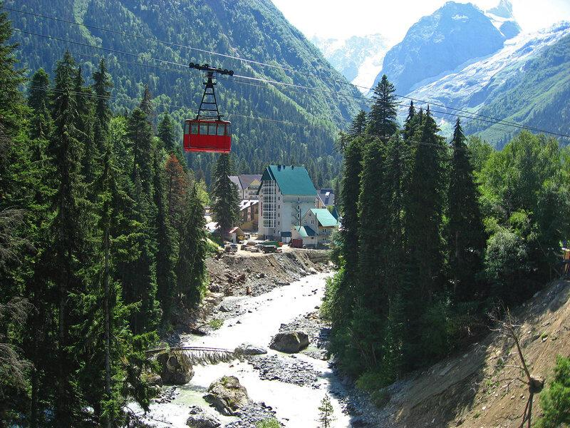
« ДОМБАЙ»
В санаторий вернулась поздно вечером. Все было замечательно, даже несмотря на то, что немножко не повезло с пого- дой. Интересный тур, классный гид и столько свежего горного воздуха. Следующей моей экскурсией был Суворовский термальный источник. Это оздоровительный комплекс с четырьмя открытыми бассейнами, который особенно живописен вечером благодаря не- оновой подсветке и музыке. Он известен своей сероводороднощелочной минеральной водой, которая помогает при кожных, сердечно - сосудистых, опорно-двигательных и других заболеваниях. Вечернее посещение предполагает расслабляющую атмосферу с приятной подсветкой и музыкой, а вода обладает лечебными и косметическими свойствами, например делает кожу гладкой и помогает снять стресс. Надеялась, что так и будет. Конечно, вечером комплекс преображался благодаря нео- новой подсветке и музыке. Суворовские термальные ванны - это место, где история встречается с целебной силой природы... Но находиться в горячем источнике можно не более 20 минут. Термальные ис- точники называются Суворовскими по месту их расположения в станице Суворовской, которая находится в Ставропольском крае в районе Кавказских минеральный вод. Это название указывает на географическое происхождение, оно не связано с именем русского полководца Суворова. После купания в Суворовских водах уснула, едва коснувшись подушки. Чудес на свете не бывает, оказывается есть. Следующий день – монастыри: Второ-Афонский мужской монастырь на горе Бештау вблизи Пятигорска и Свято-Георгиевский женский монастырь, расположенный недалеко от Ессен- туков. По дороге к Второ-Афонскому мужскому монастырю мы поднялись на гору Бештау - главную достопримечательность территории Кавказских Минеральных Вод. Дорога к монастырю была асфальтированной, поэтому восхождение на гору Бештау было для меня не сложным. По пути мы видели высеченные на скалах горы Бештау библейские цитаты, крест и, конечно, наслаждались свежим воздухом, пили воду из источников с целебной минеральной водой. Особенностью мужского монастыря стал летний храм под открытым небом. На территории мужского монастыря есть трехэтажные кельи в форме цилиндра, поклонный крест, возведенный Пятигорсками казаками в честь возрождения Храма, редкие иконы и мощи преподобных Киево-Печерской лавры. Свято-Георгиевский женский монастырь находится в Ессентуках, в урочище Дубровка, расположен на высоте более 700 метров над уровнем моря. На территории находятся две часовни оригинальной формы и купальня, а с горы видны велико- лепные пейзажи. Особенно впечатлила смотровая площадка Свято-Георгиевского женского монастыря, с которой открывается панорам- ный вид на горы и леса Кавказа. Сам монастырь снаружи выглядит очень представительно и роскошно, внутри удивляет домашний уют, созданный сестрами и прихожанами. На территории находится лавка, где я смогла купить сувениры и обе- реги для моих близких. В святых местах строго соблюдается внешний вид: платок у меня был, а вот длинную юбку я брала у входа в церковь. Благодать этих мест. дала мне мощный заряд энергии. Конечно, мои мечты исполнялись - экскурсии почти через день, климат отличный, утром - ходьба, упражнения, завтрак в ресторане, бутерброды с красной икрой. Мне повезло - следующая экскурсия на Эльбрус была с Викой в одном автобусе. Мы сидели с нею на переднем сидении. Дзержинский, как всегда, проводил нас в путь добрым внимательным взглядом. Сначала был Чегет. Это знаменитая гора в Приэльбрусье, популярное место для активного отдыха и экстремального горнолыжного спорта с потрясающим видом и живописным пешеходным маршрутом. Ее высота достигает 3769 метров, а склоны славятся крутизной, что и привлекает опытных лыжников . Чегет расположен в самом сердце Кабардино-Балкарии. С горы открывается знаменитый вид на Эльбрус и другие горные вершины Кавказа. Мы поднимались на Чегет по канатной дороге, было тепло, солнечно. Открытые кабинки - свежий вете- рок обдувал нас со всех сторон. Гора Чегет - это уникальное место, где сливаются воедино величественные пейзажи и богатое биологическое разнообразие. Здесь, среди Кавказских вершин, собирают лечебные травы чабрец и мяту, яркие ягоды облепихи, а туристы-спортсмены поднимаются пешком до самой верхней точки горы Чегет. У нашей экскурсии здесь была остановка в уютном кафе, где мы с Викой выпили по чашечке облепихового чая с очень вкусным кусочком медового пирога. А на Чегенском базарчике у подножия горы мы купили сувениры с символикой Эльбруса, вяза- ные шапочки, а Вика взяла себе толстовку для дождливой погоды в Петербурге. Замешкавшись на рынке, мы чуть-чуть опоздали к назначенному времени к автобусу, где нас ждала группа для подъема на Эльбрус, с которого мы все дружно поехали покорять Эльбрус...
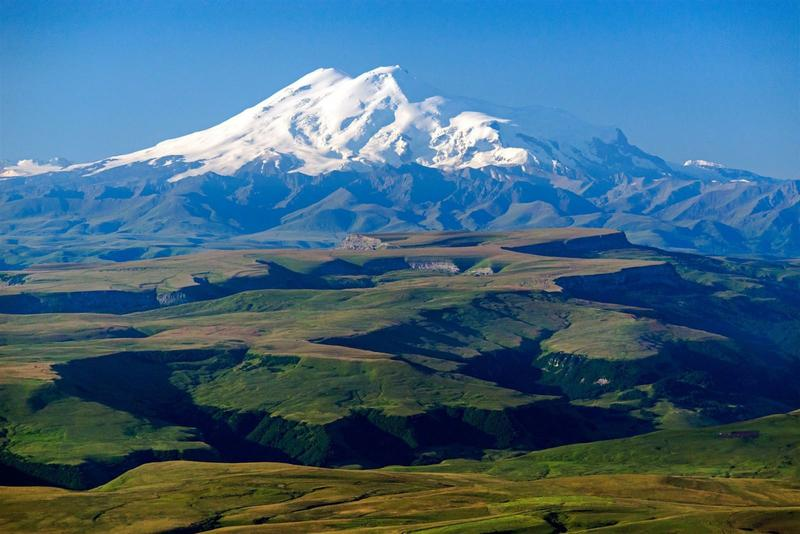
« КАВКАЗСКИЕ ВЕРШИНЫ -ГОРА ЧЕГЕТ»
Эльбрус расположен на границе Кабардино-Балкарии и Карачаево-Черкессии. Это спящий вулкан, который образовался более 2,5 миллионов лет назад. Его высота составляет 5642 метра (западная вершина) и 5621 метров (восточная). Характерные двуглавые вершины, горы, покрытые снегами - это визитная карточка Северного Кавказа. Его последнее извержение было около 2000 лет, его относят к угасающим, но не полностью потухшим вулканам, о чем свидетельствуют подземные источники и минеральные воды. По мнению ученых новый крупный выброс в ближайшие 200, 300 лет маловероятен. Более 80 ледников покрывают склоны горы, давая начало рекам Кубань, Малка и Баксан. Он является популярным центром альпинизма горнолыжного туризма и местом для отдыха благодаря своей природной красоте и развитой инфраструктуре. Эльбрус причисляют к одним из семи высочайших вершин планеты. Это гора богов, героев, сотни раз воспетая в поэмах, сказаниях, изображенная на полотнах художников, выступающая объектом покорения мужественных альпинистов. С вер- шины Эльбруса открывается вид на Кавказский хребет, а в ясную погоду можно увидеть Черное Море. Мы поднимались по канатной дороге к Эльбрусу, которая включала три подъема. Первая очередь - на гондольной канатной дороге Рома 1 (в кабине 8 человек, время подъема 5 минут) поднялись на высоту 3000 метров над уровнем моря на станцию Кругозор. Вторая очередь подъема - гондольная канатная дорога Рома 2 - станция Мир (в кабине 8 человек, 3500 метров, 5 минут). Самочув- ствие мое было нормальное. Третий взлет - станция Гара-Баши (высота 3847, в кабине 8 человек). Здесь самый высокогорный почтовый ящик России. Дальше мы не ехали. Любуюсь снегом - это было так необычно - внизу лето, а здесь снег, зима. Конечно, мы чувствовали себя победителями, но до тех высот, куда уходили снегоходы и лыжники, было далеко. У меня было приятное ощущение от того, что высоту 3847 над уровнем моря я смогла преодолеть, хотя моя гид предлагала мне остаться на втором уровне. Но у меня получи-
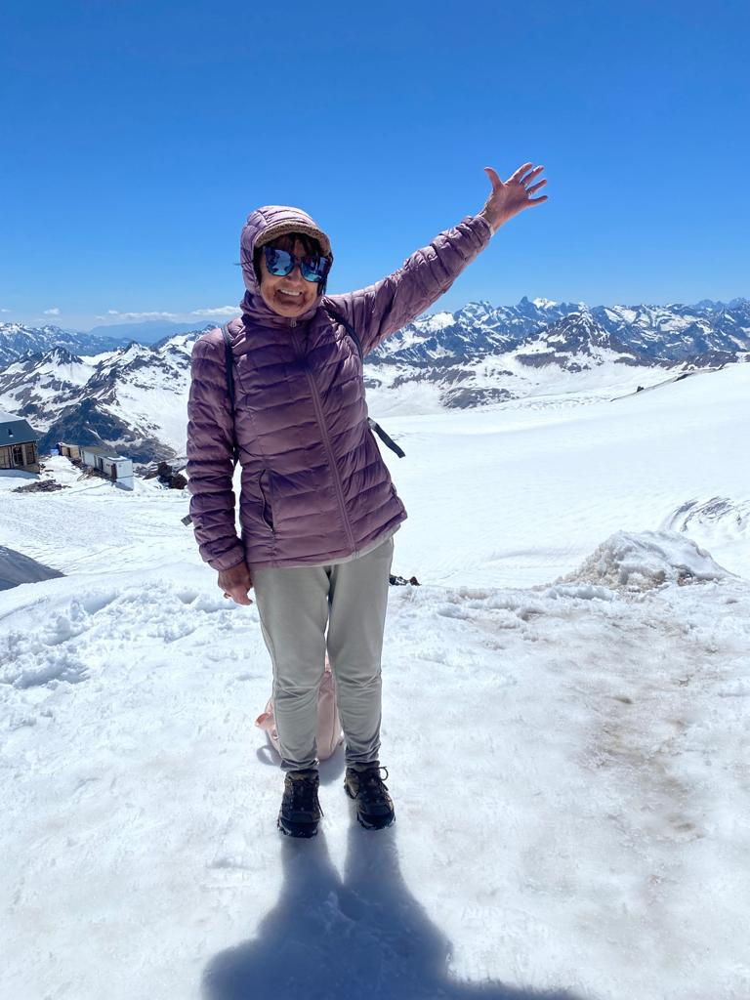

« САМЫЙ ВЫСОКОГОРНЫЙ ПОЧТОВЫЙ ЯЩИК РОССИИ»
лось, сбылась моя мечта! С Викой мы играли в снежки, наслаждаясь белым снегом. Температура была минус 8. На этой высоте 3847 метров на Эльбрусе всегда лежит снег и зима независимо от времени года. Даже летом необходимо тепло одеваться, брать солнечные очки и крем от загара. На высоте может возникнуть кислородное голодание или другие проблемы с сердечно-сосудистой си- стемой. При ухудшении самочувствия - немедленно спускаться по канатной дороге.. Со мной было все в порядке. Насладившись свежим ветерком, холодным снегом в ладонях, мы с Ви- кой опустились на станцию Мир, где за обыкновенным столиком устроили маленький пикник с вкусной едой и коньяком (чуть-чуть), чувствуя себя покорителями, ощущая чувство глубокого удовлетворения и радости. Из истории: для того чтобы продолжать подниматься на вершины Эльбруса нужен хороший уровень физической подготовки и опыт восхождения в горы. Ежегодно на Эльбрус под- нимаются от 15 до 30 тысяч любителей. В сезон на южном маршруте в день восходят 400-500 человек. Также восхождение доступно и для не очень подготовленных людей благодаря развитой инфраструктуре, канатным дорогам, но не стоит забы- вать, что гора все равно остается опасной и требует серьезной подготовки, акклиматизации и, как правило, сопровождения гида даже на самом простом маршруте. В санаторий вернулась уставшей, но с чувством: я покорила Эльбрус! Ну, почти... И пусть техническую часть работы взяла на себя кабинная канатная дорога, мои эмоции были самыми что ни есть чемпионскими. Это была победа над собой. Это был миг. Но он принадлежал только мне... Вика улетала через два дня. У меня были еще две экскурсии: в Грозный и Джилы-Су, а у Вики катание на лошадях. 16 июля она улетела, а накануне мы встретились с нею в кофейне, пили напитки на террасе, обдуваемой вечерней свежей прохладой и гуляли по прогулочным улочкам, стояли у скульптурной композиции «Подписание рескрипта», посвященной историческому моменту основания города и призна- нию Кавказских минеральных вод курортом государственного значения от 24 апреля 1803 года. Центральная фигура этой композиции - император Александр Первый, в группе изображенных - его подчиненные. На столе перед Императором лежит лист, символизирующий тот исторический документ. Бронзовые фигуры выполнены в натуральную величину, что позволило нам буквально стать участниками исторического события, сделать несколько кадров на память. Позже, когда наши встречи с Викой в Кисловодске стали воспоминаниями и мы находились с нею в разных странах, мы писали письма друг другу по электронной почте и вспоминали наши короткие прогулки, каскадную лестницу, визитную карточку Кисловодска, украшенную водопадами, Местный Арбат, сердце город с историческими зданиями, Долиной роз и символом Кавказа - орлом на скале. Интересно, что Символ орла олицетворяет победу здоровья над недугами и силу Кавказских Минеральных вод. Согласно местной легенде орел, ужаленный змеей, исцеляется в целебном нарзане, который также символизирует мощь, свободу и гордость Кавказа. Скульптура орла находится почти во всех городах Кисловодска. На следующий день у меня была экскурсия в Грозный. Очень рано в 6 утра я была у памятника Дзержинскому. Елена договорилась о моем переднем сидении - идеальное место, чтобы охватить взглядом весь мир за окном, будто в кабине пилота, только с видом на природу. Вспомнился полет к моему младшему сыну Олегу в Черский, когда я летела в кабине маленького самолета в далекие девяностые годы, куда он был направлен как молодой специалист по- сле окончания Выборгского летного училища. Я летела туда маленьким самолетом из Якутска на Черский. Черский был закрытым городом - сейчас не знаю, а тогда нужен был пропуск, но мне как-то удалось приземлиться и вылететь оттуда без пропуска. Черский называют Воротами в Арктику. Поселок расположен
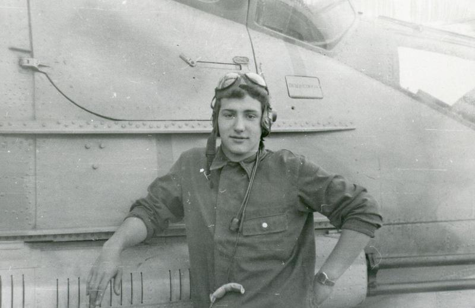
« ОЛЕГ, НА ПЕРЕПОДГОТОВКЕ»
в нижнем течении реки Колымы. Свое название поселок получил в честь выдающегося геолога и географа И.Д. Черского в 1892. Северное сияние, бесконечная тундра, горы. Красиво. Почему я вспомнила этот полет к сыну в Черский? Наверное, потому что поездка по Кавказу - это постоянное ощущение, что горы давят сверху, как будто находишься в иллюминаторе маленького самолета. И еще потому, что Верхоянский хребет, Хребет Черского, Омский хребет и другие горы, которые хорошо видны были в иллюминаторах самолета, оставались белыми, они были покрыты снегом, как и горы Кавказа. И хотя здесь, на Кавказе, я не летела над облаками я была на земле, но ощущение полета не покидало меня. Отдых у меня на Кавказе был насыщенный, дни пролетали быстро. Поездка в Грозный стала для меня одной из ярких точек моих маршрутов по Кавказу. Грозный, столица Чеченской республики - город с драматической историей, основанный как русская военная крепость в 1818 году генералом Ермоловым. В настоящее время современный благоустроенный мегаполис с небоскребами, мечетя- ми и развитой инфраструктурой, известный высоким уровнем безопасности и гостеприимством. Визитные карточки - небоскребы комплекса Грозный-Сити, величественная мечеть Серд- це Чечни. Грозный поразил меня своей чистотой, радушием, помощью показать лучшие мест, свои традиции. Прежде чем зайти в Мечеть Сердце Чечни, здесь мы переоделись в длинные платья, платок на голове, носки на ногах. Мечеть Сердце Чечни имени Ахмата Кадырова, Первого Президента Чеченской Республики, - одна из крупнейших в России и Европе, открыта в 2008 году. Она поражает роскошью и размерами, вмещает тысячи верующих, имеет высокие минареты, украшена золотом, мрамором, кристаллами. Мы также поднимались на современный комплекс Грозный-сити из семи башен в центре города на берегу реки Сунжа. В 15 км от Грозного наша экскурсия продолжалась в городе Аргун, где мы были в Мечети Сердце мате- ри имени Аймани Кадыровой. Это ультрасовременное религиозное сооружение, открытое в 2014 году, уникальное для России, названо в честь матери Рамзана Кадырова. Оно поражает динамичным освещением: стены меняют цвет в зависимости от погоды, ночью сияет разноцветными огнями, подчеркивая уникальность мраморных стен, огромного купола и 31-метровой люстры-полумесяца. Здесь, в Аргуне, есть замечательный цветочный парк - популярное место для прогулок, украшенное цветами, фонтана- ми и зеленью. Мы всей группой прогулялись по ней. Обедали мы в огромном спортивном кафе, еда была вкусной и цена в пределах разумного. В современном Грозном уважают древние традиции и я почувствовала, что местные жители предлагают гостям республи- ки самое лучшее. Позже, когда меня поезд увозил из Кисловодска в Москву в моем купе я познакомилась с двумя женщинами- чеченками из Грозного, их имена - Белла и Фатима. Я делилась с ними впечатлениями о Грозном и узнавала от них некоторые подробности из жизни чеченского народа. Интересно, в этой стране имеются прекрасные традиции: помощь бедным - один раз в неделю богатые люди приходят в магазины и закупают еду, одежду для бедных, алкоголь не продается местным жителям, в городах проводятся субботники, в стране нет детских до- мов, нет беспризорных детей. Интересно, что время приветствия у чеченцев зависит от времени суток и все они означают: «Да будет хорошим твой день, утро, вечер». Об уважительном отношении к женщине свидетельствует, например, такой обы-

« ДЖИЛЫ-СУ - УНИКАЛЬНЫЕ ИСТОЧНИКИ, ГОРЯЧИЕ НАРЗАНЫ»
чай, как приветствовать женщину стоя. За один день на автобусе я преодолела почти 700 км туда и обратно, интересно, что сам путь был в Чеченскую Республику через Республики: Кабардино-Балкарская, Северная Осетия, Алания и Республику Ингушетия. Вокруг было столько красоты. В дороге я была более 10 часов и вернулась немного уставшей, но с теплыми воспоминаниями о традициях и гостепри- имстве этой маленькой республики.
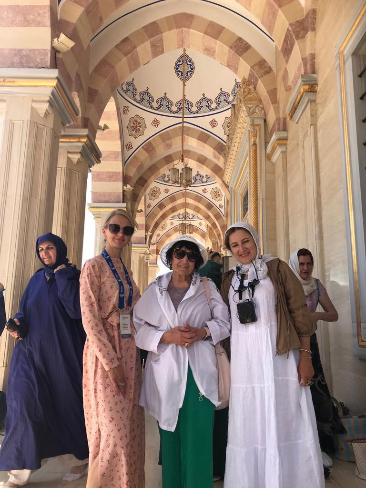
« МЕЧЕТЬ, ГРОЗНЫЙ»
Через день я уезжала в новую поездку не на автобусе, а на джипе, вместимостью 6 человек с водителем-гидом в Джылы- Су. Это Кабардино - Балкария. Из Кисловодска до Джылы-Су мы доехали примерно за 3 часа, преодолев расстояние около 85 км. Дорога - в основном асфальтированная трасса с живописными серпантинами, спусками и подъемами. Мое место было впереди и я чувствовала себя превосходно. Как рассказал нам гид, Джилы-Су переводится с карачаево-балкарского как «теплая вода». Это не только долина с холмами, но и вся трасса от Кисловодска. Вокруг нее лежат цветочные поляны, бархатные зеленые холмы, а впереди смотрит Синий Эльбрус, загляденье. Урочище находится в Северном Приэльбрусье. Под словом урочище скрывается горная местность, где высота над уровнем моря достигает 2550 метров, а законы погоды здесь те же, что и в дру- гих горах на Кавказе. Здесь часто идут дожди, может случиться даже снег, и погода в Джилы-Су меняется по несколько раз на день. Нам повезло - дождя не было, но было свежо и курточка мне тоже пригодилась. Популярная достопримечательность Джилы-Су - уникальные источники, горячие нарзаны, которые бьют из-под земли, подогреваемые недрами Эльбруса. Вода считается лечебной, помогает при проблемах с печенью, ЖКТ, суставами, нервной системой, выводит шлаки, укрепляет иммунитет. Я подумала о своих близких, друзьях, зная их недуги - им бы хорошо приезжать сюда для лечения, так как источники бесплатные и до- ступны круглый год. Здесь 4 знаменитых водопада, самый высокий и шумный из которых – Султан. Его громогласный рокот доносится издали, а окружающие его скалы напоминают разноцветный цветной торт. Все они знамениты своей мощью, красотой, необычным цветом воды и скал, а также расположением в живописной долине у подножия Эльбруса. Особенно популярным и известным местом является Долина сусликов. Местные суслики очень ручные - привыкли к людям и активно выходят на контакт, что делает их кормежку развлечением. По дороге в Джилы-Су мы встретили небольшое ущелье Кала-Кулак, которое экскурсоводы романтично называют Долина замков. Акульи или драконьи зубы - в балке Кала-Кулак необычная достопримечательность. Огромные заостренные валуны действительно расположены так, что напоминают че- люсть древнего огнедышащего монстра. На самом деле, как выяснили ученые, возраст останков - два миллиона лет. Оказалось, это вовсе не костные окаменелости, а остатки застывшей магмы, которую выбрасывал из кратера свирепствующий кавказский исполин. Но не все гости и местные жители считают, что это зубы дракона. Многие хотят видеть в каменных валунах высотой от 15 до 25 метров остатки старинного замка. Гид рассказывала, что здесь любой местный житель всегда охотно под- скажет дорогу - им хорошо известно и про драконьи зубы, и про долину замков. К камням с солидным летоисчислением горцы относятся уважительно, ведь они хранят историю древних родов. Здесь я также видела бассейны природной минеральной водой прямо под открытым небом. Сюда ехали и шли пешком, чтобы излечиться от недугов. Термальные источники бьют изпод земли в любое время года, сохраняя температуру 22-24 гра- дуса. В нашу программу экскурсии купание не входило. Мои путешествия по Кавказу закончились, завтра я уеду в Москву. Поездка на Кавказ была для меня не просто отдыхом, а возможностью насладиться природной красотой Кавказа. Сча-

стье не за горами, счастье - в горах. Да , действительно счастье в горах, когда испытываешь уважение к себе за способность быть здесь.
« МОИ ПУТЕШЕСТВИЯ ПО КАВКАЗУ ЗАКОНЧИЛИСЬ»
После Кисловодска я пробыла в семье Андрюши несколько дней и отправилась в новое путешествие по Волге в круиз, который мне заранее купил Андрюша. Стоимость 130 тысяч руб- лей - это почти три мои месячные пенсии в России. Сынуля, спасибо за этот подарок! На теплоходе со сказочным названием «Маленький принц» наш маршрут лежал по Волге по городам Золотого кольца. Волга - самая большая и полноводная река Европы, длина водного объекта составляет 3690 км2. На своем пути река собирает в себе силу более 200 больших и малых притоков, самые крупные и известные из которых - Кама и Ока. Волгу не зря называют матушкой. Она всегда была богата рыбой и кормила поселения. На Северный речной вокзал мы приехали с Андрюшей на такси. «Маленький принц» - это современный четырехпалубный теплоход для семейного и комфортного отдыха, предлагающий насыщенную программу и уютные условия вместимостью около 232-262 пассажиров. Каюты на палубе - с балконами, со всеми удобствами. У меня каюта на нижней палубе, двухместная . Я была одна. Хотелось бы поплавать с кем-то из родствен- ников или друзей, но у всех свои планы. На борту шведский стол на завтрак, заказное меню - на обед и ужин. На теплоходе много развлечений на любой вкус и возраст - здесь есть все: от увлекательных шоу и вечеринок до активного отдыха, включая насыщенную спортивную программу, йогу, пилатес. Пилатес это методика упражнений, которые помогают улучшить осанку, координацию, силу и гибкость и часто используются для реабилитации после травм, названа по имени изобретателя Иосифа Пилатеса. Я предпочитаю не классическую йогу, а комплекс из пяти тибетских ритуалов. В них основой являются правильная техника и дыхание – глубокое, ритмичное. Кроме этого для меня это самодисциплина, которая формирует привычку к регулярной активности и укрепляет силу воли. Здесь на протяжении 7 дней я занималась, а также работала ногами на

« МАЛЕНЬКИЙ ПРИНЦ»
велотренажере. Мне очень нравилось это делать на верхней палубе, где я часто встречала восход солнца. И, конечно, ходьба по утрам - в течении 45 минут я обходила четырехпалубный теплоход несколько раз. Я также кратко познакомилась с историей названия теплохода «Маленький принц» по одноименной знаменитой повести Антуана де Сент-Экзюпери. Книгу я не чита- ла.Но его крылатые выражения иногда встречала: «Зорко одно лишь сердце» или «Ты навсегда в ответе за тех, кого приручил». Название теплохода призвано создать на борту особую атмосферу - не просто круиз, а путешествие с глубоким смыслом для каждого пассажира любого возраста. Экзюпери писал: «Все взрослые сначала были детьми, только мало кто из них об этом помнит». Выбор названия теплохода от философской притче о маленьком принце, странствующем по Вселенной, символизи-

« НАСЫЩЕННАЯ СПОРТИВНАЯ ПРОГРАММА»
рует любопытство, чистоту и мудрость… Первый мой день начался знакомством с каютой под номером 212 и получения вестника. Это информационный бюлле- тень, который выпускается компанией «Созвездие» и содержит расписание дня, информацию о мероприятиях, экскурсиях, меню ресторана, создавая атмосферу домашнего уюта в плавании. Ежедневно вечером я получала такой вестник, прикреп- ленный к двери моей каюты... Семидневный круиз на теплоходе «Маленький принц» был первым в моей жизни по длитель- ности плавания. В моей жизни были только небольшие экскурсии по несколько часов на маленьких речных пароходах по Москве реке с Андрюшей и его семьей, откуда я могла видеть Кремль, Храм Христа Спасителя, Парк Горького, Памятник Петру Первому, Зарядье, Сталинские высотки. Когда я была в гостях у Олега в Австралии, мы выезжали в маленькое путешествие по реке Брисбен с питанием, развлечениями, живой музыкой и панорамными видами на город, включая Ботанический сад и Южный берег, являющийся символом отдыха и австралийского образа жизни. В 2021 году я ездила к приятельнице в Веллингтон на большом курсирующем пароме между Пиктоном и Веллингтоном. Там было 7 палуб (в том числе грузовые) с каютами, ресторанами и открытыми зонами отдыха. По высоте его можно срав- нить с 12-этажным зданием. Пиктон - Веллингтон в Новой Зеландии - это не паром, а морское судно, которое соединяет два острова - Северный и Южный, предлагая удобный способ пересечения пролива Кука, который занимает по времени около 3- 3.5 часов. В самом проливе Кука море было неспокойным. Многие пассажиры страдали морской болезнью, но я перенесла этот период спокойно. На обратном пути моего возвращения из Веллингтона море было мирным и все пассажиры были в прекрас- ном настроении - пили кофе, читали газеты, наслаждались волнами моря, его голубым цветом. Круиз по Волге напомнил мне мои поездки по реке Алдан на речном быстроходном катере «Заря», когда я жила несколько лет в маленьком шахтерском поселке Джебарики-Хая и по работе часто выезжала на этом катере в районный поселок Хандыга. Река Алдан - крупнейший правый приток Лены, длинная и полноводная река 2273 км, протекающая через Якутию. Катер «Заря» - это быстроходный речной пассажирский катер, отличавшийся скользящим корпусом по воде со скоростью 40-45 км, что позволяло ему ходить по рекам и достав- лять пассажиров в отдаленные районы. Я с ностальгией вспоминаю те времена, мои речные прогулки по реке Алдан, когда катер летел по волнам реки со скоростью птицы, а я смотрела с воды на берег и создавалось ощущение, что тайга живет своей водной жизнью, невидимой с суши, а берег с воды казался картиной, написанной другими красками. У меня была гармония в душе с живыми картинами природы сурового Севера, но это было тогда очень давно .… Во второй день моего путешествия на «Маленьком принце» мы прибыли в Углич. Углич - один из старейших городов России на Волге, основанный по преданию в 937 году. Он входит в состав Золотого кольца и знаменит прежде всего своими историческими событиями и развитым производством продуктов питания. Он является колыбелью российского промышленного сыроварения. Сыры Угличский и Пошехонский известны по всей стране. Сыры очень вкусные, в конце экскурсии я имела возможность купить их. В Угличе множество церквей, главными церквями и соборами являются: Церковь Димитрия царевича “ на крови “, Спасо-Преображенский Собор, расположенный на территории Кремля. Эта церковь была построена в конце 17 века 1692 год на месте трагической гибели последнего сына Ивана четвертого Грозного, царевича Димитрия. Здание имеет ярко-крас- ные стены, символизирующие пролитую кровь царевича, белые декоративные купола и пять синих куполов с золотыми

« ЗАРЯ, БЫСТРОХОДНЫЙ КАТЕР»
звездами. Сейчас здесь можно увидеть реликвии, связанные с царевичем и сосланный в Сибирь колокол. С этим колоколом связана целая история. В 1591году 15 мая колокол своим звоном известил жителей Углича о смерти царевича Дмитрия, тем самым спровоцировав народное восстание и самосуд над предполагаемыми убийцами. По приказу Бориса Годунова колокол был казнен как неодушевленный соучастник бунта. Ему отсекли язык, отрубили ухо и принародно наказали 12 ударами плетей на площади. После казни колокол был сослан в сибирский город Тобольск, где он пробыл около 300 лет. В 1892 году колокол был помилован Императором Александром Третьим и возвращен. Это уникальный случай наказания неодушевленного предмета. Сегодня на эту историю можно реагировать, как на символ примирения и долгого пути к справедливости. Это предание – история, передающаяся из поколения в поколение Наша экскурсия продолжалась в Спасо-Преображенском соборе - это кафедральный храм и главная архитектурная доминанта Кремля в Угличе. Это огромное здание было возведено в 1706-1713 годах на месте более ранних храмов деревянного 13 века и каменного 15 века. Собор является частью государственного музея - заповедника в городе Углич и открыт для посеще- ния. В нем также проводятся богослужения. Иконостас собора это выдающийся памятник русского церковного искусства се- редины 19 века, выполненный в стиле барокко. Он имеет около 60 древних икон. Большинство из них являются старинными и датируются 17 и18 веками. Побывать в этом соборе - редкая удача и уникальный момент в моей биографии. Город Мышкин был следующим городом, в котором мы сошли на берег. Это очаровательный и очень маленький городок в Ярославской области на берегу Волги, население по данным 2021 года - 5621 человек. Жителей называют Мышкиными. Название города Мышкин происходит согласно легенде от ма- ленькой полевой мыши, которая спасла князя Ф И. Мстиславского от укуса змеи, пока он спал. Князь, благодарный за чудо, построил на этом месте часовню, вокруг которой возник город, получивший имя от этого события. В 1927 году Мышкин утратил статус города и стал селом Мышкино, но уже в 1991 году историческое название и городской статус были возвращены, а в городе открылся уникальный Музей мыши и Музей валенок. Музей Мыши стал визитной карточкой города благодаря

« ГОРОД УГЛИЧ»
легенде о князе и мышке. Наша экскурсия началась с него. Это единственный в мире музей, посвященный мышам. Здесь создана огромная коллекция игрушечных сувенирных и художе- ственных мышей со всего мира. Коллекция музея постоянно пополняется благодаря подаркам посетителей. Жаль, я не знала ничего об этой традиции, я бы могла тоже привезти сувенир с изображением мышки. В Мышкиных палатах нас встретили стражники. Там мы встретили Мышиного царя с царицей, а также зверинец с живыми грызунами. Это не научная коллекция, а скорее мышиное царство с домашними мышами. Живые мышки живут в красивых домиках, создавая волшебную атмосферу для детей, да и для взрослых тоже. Это не типичный музей, а уникальное пространство, создающее неповторимое настроение. Да, я думаю, это место для отдыха душой, где можно отвлечься от повседневности. Наша экскурсия продолжилась в Музее Русских валенок и льна. Мы ознакомились с коллекцией старинной и современной обуви. Здесь можно было приобрести валенки ручной работы, наверное, на севере они бы мне пригодились. В музее представлена экспозиция, посвященная традиционному процессу пре- вращения льняного семечка в готовое полотно, старинные инструменты, прялка и ткацкий станок (некоторые из них в дей- ствии),много готовой одежды из льна. Этот небольшой музей занимает 10-15 минут по времени, но экскурсия делает посещение очень интересным, на память я купила льняные салфет- ки. Мышкин оставил после себя позитивное, светлое и очень русское впечатление, наполненное теплом и очарованием маленького чуда. После городов Углич и Мышкин наш теплоход «Маленький принц» прибыл в город Кострома. Наша экскурсия была в Свято-Троицком Ипатьевском мужском монастыре, одной из глав- ных святынь России и колыбель дома Романовых, где юный Михаил Романов был призван на царство в 1613 году, положив. начало династии Романовых, правивших Россией 300 лет. Сегодня это музей-заповедник и действующий мужской монастырь, входящий в Золотое кольцо России, известный своей богатой историей, архитектурой, Троицким собором, пала- тами Романовых , звонницей, музеями, усыпальницей Годуновых. Здесь хранятся чудотворные иконы и реликвии. Дей- ствующий мужской монастырь является важным объектом культурного наследия с чтимыми святынями, включая Тихвинскую чудотворную икону Божьей матери. Потрясающая архитектура, золотые купола на фоне голубого неба, тишина и благодать, несмотря на обилие туристов. Очень величественное красивое место. Конечно, это не просто храм, а исторический памятник с мощной энергетикой, хранящий память о Годуновых, Романовых и важных событиях России, оставляющий ощущение прикосновения к русской истории и духовности. Наша экскурсия продолжалась в музее деревянного зодчества. Здесь его называют Костромская слобода или музеем под открытым небом, где мы посмотрели старинные церкви, жилые постройки, перевезенные из разных районов Костромской области. Экскурсовод рассказала о жизни и традициях русского народа и о том, как строились дома без единого гвоздя. Из- вестна уникальная Петровская глиняная игрушка-свистулька ее я купила, привезла в Москву для Егора. Я была в церкви Воскресения Христова на Дебри в Костроме. Это выдающийся памятник Русской архитектуры 17 века и единственный сохранившийся посадский храм того времени. Внутри свод поддерживают два массивных четырехугольных столба. Отличительной чертой являются медальоны с загадочными сюжетами и обилием света, идущего сверху из восьми окон. Интересно, что сам город Кострома иногда называют забытым в переносном смысле, как место, где время словно оста- новилось, сохранив провинциальный уют и архитектуру 17- 19 веков, контрастирующую с современным мегополисом. Современная Кострома - это крупный промышленный центр на Волге с населением более 250 тысяч человек. Кострома покорила меня, но времени было мало, может, еще приеду, а может, мои близкие будут здесь и посмотрят то, что я не успела. Наш пароход уходил из Костромы вечером. Ниже Костромы Волга постепенно расширяется - проплывали мимо горо- дов Плес (самый живописный город на Волге), Кинешма (старинный купеческий город с сохранившейся застройкой 19 века). Этот отрезок пути считается одним из самых культурно насыщенных участков Верхней Волги, объединяющий историю Древней Руси и купеческое наследие Поволжья. Мне повезло проехать здесь на «Маленьком Принце», так как именно компания «Созвездие» использует этот маршрут в летнее время. Утром 26 июля мы прибыли в город Городец, порт Галанин в 10 часов утра. Стоянка теплохода 26.5 часов. Наша экскурсия трансфер Городец - Нижний Новгород – Городец. Сойдя с теп- лохода, мы уехали на автобусе в город Городец. Это древнейший город Нижегородской области, основанный в 1152 году князем Юрием Долгоруким, суздальским князем. Почти ровесник Москве (1147год). Расположен на высоком левом берегу реки Волга напротив города Заволжье. Известный как город музеев, славится своей уникальной Городецкой росписью, резьбой по дереву, а главное знаменитыми городецкими пряниками и теремами с купеческой атмосферой 19 века. Знаме- нит старейшими укреплениями в Нижегородской области.
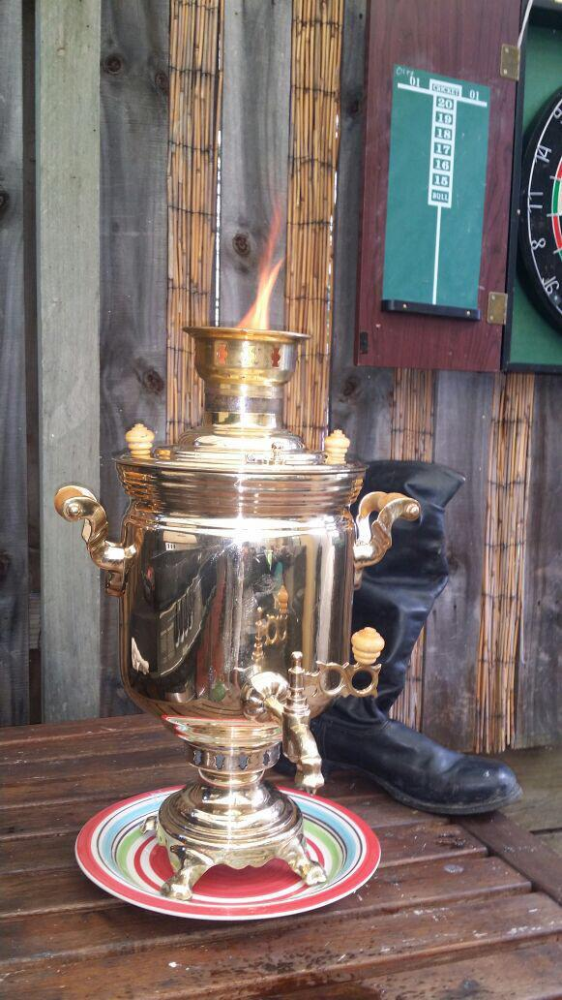
« НАШ САМОВАР »
Очень интересные достопримечательности: Музейный квартал, Музей самоваров, музей Городецкого пряника, Федоров- ский монастырь, памятник Александру Невскому, старинные ,деревянные дома. Музей Русского самовара называют теремом русского самовара - такое обилие самоваров я видела впервые. Это символ русского гостеприимства, уюта и традиционного чаепития. Я помню самовар в нашей семье Никитиных, когда мы жили в Луганске на Артема. Потом, спустя много лет, моим младшим сыном был привезен самовар из России. Когда я бываю у них, он угощает меня чаем из самовара. Может, чай не такой, как в воспоминаниях о моем детстве с мамой, сестрами и самоваром, но с ним на душе становится тепло и уютно. Самовар - символ дома, достатка, общения и часть русской культуры. А теперь о Городском прянике. Традиция выпекать здесь пряники уходит корнями в далекое прошлое, когда в местных лесах было много пчел, а первые пряники называли медовым хлебом. Здесь в лавке я купила городские пряники и сейчас жалею, что не купила там уникальные пряничные формы. Пряники вкусные, очень. Наша экскурсия посетила Городской Феодоровский мужской монастырь, один из древнейших православных обителей России. По преданию монастырь был основани в 1152 году Юрием Долгоруким, на месте явления Феодоровской иконы Божьей матери. В стенах этой обители Великий князь Александр Невский перед смертью принял монашеский постриг. Он умер здесь 14 ноября 1263 года. Его слова: «Не в силе Бог, а в правде». История монастыря богата событиями прошлых лет, он разорялся неоднократно войсками Батыя и Едигея, а в 15 - 17 веках временно прекратил свое существование. В 1927 году он был закрыт и почти полностью разрушен. В 2009 году главный храм был отстроен заново по старым чертежам. В монастыре почитается Феодоровская икона Божьей Матери, покровительница семьи и дома Романовых . На ней изображена Богородица, держащая на руках младенца Христа. Образ символизирует защиту, семейное благополучие. Икона уберегла наш край от нашествия татар, уцелела во время гонения на церковь и до сих пор продолжает удивлять и радовать своими чудесами. Иконе более 800 лет, а одна из версий говорит о ее написании в 1164 году. Вот такое чудо я увидела и приобрела маленькие иконки Божьей Матери для себя и моих близких. В этом городе есть памятник Александру Невскому (установлен в 1993), на нем изображение князя с щитом и хоругвью на высоком пьедестале. Памятник знаменует связь с историей города, где он умер. События прошлого всегда влияют на наш мир сегодня, мои эмоции переплетались с прошлым, которое казалось реальным, а настоящее - чудесным подарком. Но главным для меня чудом было посетить родник Никола – ключ, освещенный в честь святителя Николая чудотворца, расположенный в лесу в 80 метрах восточнее деревни Белоглазово Городецкого района Нижегородской области. Святой источник хорошо обустроен - дивная часовня, закрытые раздельные купальни с купелями. Считается, что в 16 веке здесь было явление Николая Чудотворца, потому и ключ назван Николой. Родниковые воды стекают здесь крестообразно, святость в этом месте особая. Вода целебная, со- держит большое количество ионов серебра. Ключ не замерзает даже зимой. Я, конечно, вошла смело в эту купальню, вода была почти ледяная, но я окунулась три раза с головой. Я набрала святой воды в бутылку, привезла в Москву. Покидая это святое место, я чувствовала как бы внутреннее обновление, сброс старого напряжения, душа и тело вроде как очистились, а может и возродились. Я так думала. Мне было хорошо в тот момент. Через час езды на автобусе наша экскурсия продолжалась в близлежащем городе Нижний Новгород. Нижний Новгород - крупный город в России, столица Приволжского федерального округа, расположенный на слиянии Оки и Волги, где сильные ветра, дующие с вод, создают уникальный микроклимат и из-за этого постоянного ощущения ветра, город получил название города на семи ветрах. Его называют также городом закатов, так как слияние рек Волги и Оки великолепно отражают закатные краски, создавая незабываемый вид. Я не видела этой красоты, это нам рассказывала наша экскурсовод. Так как время было летнее, закат солнца я уже встречала у борта нашего теплохода, куда я вернулась с нашей экскурсии. Интересно, что основателем города Нижний Новгород в 1221 году был князь Юрий Всеволодович, внук Юрия Дол- горукого и правнук Владимира Мономаха. В 1612 году Кузьма Минин и князь Дмитрий Пожарский сформировали здесь народное ополчение, которое освободило Москву от польских интервентов. Здесь есть памятник посвященный этому событию. Памятник Минину и Пожарскому установлен в Москве в 1818 году, а в 2005 году в Нижнем Новгороде появилась его копия, созданная Зурабом Церетели, непосредственно внутри территории Кремля недалеко от Михайло-Архангельского собора, где покоится прах Кузьмы Минина. А у Кремля мы оста- новились у отдельного памятника Кузьме Минину. Установлен в 1943 году для поднятия патриотического духа во время великой отечественной войны, но спустя годы в 1989 году взамен обветшалого бетонного оригинала был установлен бронзовый. Интересно, что Кузьма Минин был нижегородским земским старостой и зажиточным торговцем. Осенью 1611 года выступил с призывом к жителям Нижнего Новгорода собрать сред- ства и силы для борьбы за независимость России и предложил отдавать часть имущества добровольно на военные нужды. Он отвечал за финансы, снабжение и набор воинов, в то время как военное руководство осуществлял князь Дмитрий Пожарский. В ноябре 1612 годам войска под руководством Минина и Пожарского взяли штурмом Китай-город и изгнали польский гарнизон из Кремля. Их имена связаны с государственным праздником Днем народного единства 4 ноября, посвященного подвигу ополчения под предводительством Минина и Пожарского. Столько эмоций и гордости осталось у меня в душе. Скульптура вызывает почтение к мужеству и бескорыстию героев, которые смогли собрать ополчение и освободить страну от интервентов. Это достойный пример нашим потомкам. Наша экскурсия продолжалась в Нижегородском кремле. Эта уникальная каменная крепость начала 16 века включает 13 башен и около двух километров стен, не имеет аналогов в России по значительному перепаду высот до 12 метров между верхней и нижней частями. За всю историю существования Кремль ни разу не был захвачен врагом. Внутри Кремля - Михайло- Архангельский собор, древнейший Храм, где покоится прах Кузьмы Минина. Храм посвящен архангелу Михаилу, небесному покровителю князей. Великие князья приходили сюда молиться перед отправлением на войну. Достопримечательностей в Нижнем Новгороде много, но времени оставалось мало, наша экскурсия продолжилась по большой Покровской улице, главной пешеходной улице города, часто называемой нижегородским Арбатом. Мы гуляли по Рождественской - старейшей улице города с купеческими особняками, храмами. Историей города Нижний Новгород является событие, когда
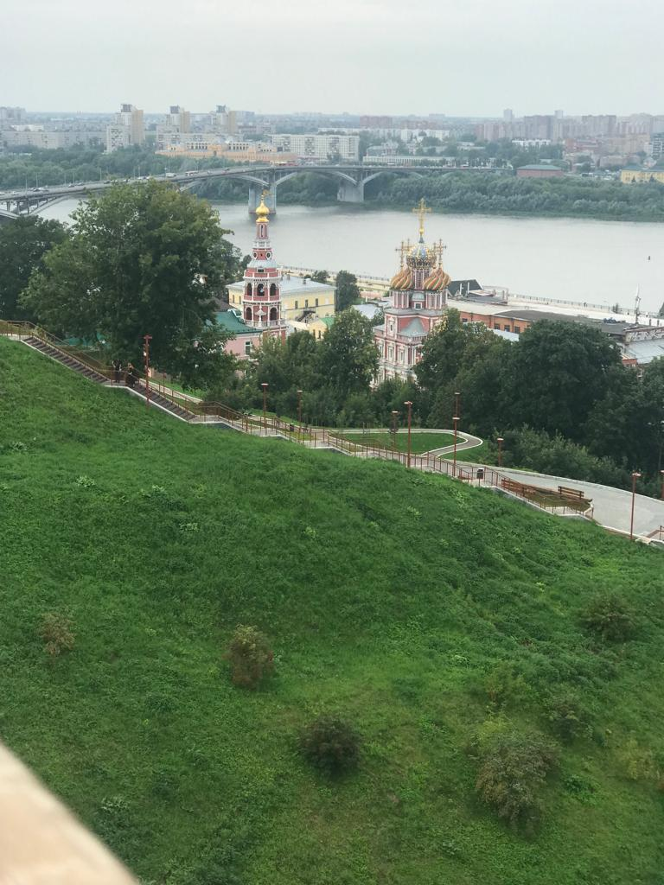
« НИЖНИЙ НОВГОРОД »
7 октября 1932 года город был назван в честь знаменитого писателя Максима Горького (настоящее имя Алексей Пешков), ко- торый жил в Нижнем Новгороде. Переименование было приурочено к 40-летию литературной и общественной деятельно- сти писателя. Еще при жизни писатель высказывался против такого решения. В 1990 году название Нижний Новгород было возвращено. Но в городе есть объекты Площадь Горького и Горьковской автомобильный завод. Горьковский завод является одним из ведущих предприятий российского автомоби- лестроения, известный в России. Нижний Новгород - это город, в котором гармонично соединились купеческое прошлое и современный созидатель- ный дух. Очень интересный город. Из Нижнего Новгорода мы проехали через город Городец, в котором мы уже не останавливались, но впечатления о живой старине, чайных традициях и вкусе истории остались как воспоминания о домашнем, теплом, уютном. Это надолго. На палубу нашего теплохода мы вернулись вовремя - доброжелательная команда теплохода встречала нас на ужин, добрые повара приготовили вкусную еду. День был длинный, но столько приятных впечатлений... По вечерам я слушала в своей каюте радиопередачу «Маленький принц». Я полюбила эти передачи - иногда музыкаль- ные, иногда рассказы из известных произведений или истории городов и природных объектов, мимо которых проходит судно. Я люблю радио, мое детство и более взрослая жизнь связана с радио, для меня оно было частью моей жизни. Радиовещание не было отменено, оно существует, но тот радиоприемник, который у меня висел на кухне, не работает - произошел процесс старых отключений. Компьютер, телефон - все по-новому, но тогда с 6 утра до 12 ночи можно было слушать новости, делать упражнения под музыку, которая звучала по утрам. Да, ностальгия ….. хорошее было время и воспоминания тоже. На теплоходе Маленький принц есть гудок, причем он считается одной из отличительных черт судна. Когда мы прихо- дим в города, он напоминает пассажирам об этом. Его звучание такое трогательное, напоминающее мне другие гудки, в прошлом столетии, как главные звуковые сигналы города Луган- ска - моего города, где я родилась, где прошло мое детство, юность, родились мои сыновья, - но те гудки были заводскими. Они обозначали ритм жизни , рассвет, начало работы крупных заводов. Гудки были слышны далеко, объединяя город и его жителей. История заводских гудков - это история самого города, его становления как крупного индустриального центра, где заводской гудок был голосом заводов, голосом эпохи и гордости за свой труд. На одном их этих заводов работал мой отец, Никитин Федор Иванович, до начала ВОВ, куда он ушел и погиб в боях под Сталинградом. На другом - мой муж, Пазынич Юрий Степанович, делал жалюзи для тепловозов. Он ушел из жизни в 52 года... Для меня это эхо в полный голос, когда отзвуки прошлого звучат так же громко, как и звуки настоящего. В Нижегородской области наш теплоход причалил к пристани города Чкаловск, расположенным на самом берегу Вол- ги. Он назван так в честь Валерия Павловича Чкалова, прославленного летчика-испытателя, Героя Советского Союза, родив- шегося в селе Васильева Слобода - так до 1937 года назывался Чкаловск. Город имеет богатую историю, связанную с судоходством, бурлачеством и гончарным промыслом. Бурлаки - это рабочие в России, которые тянули суда против течения рек с помощью толстого каната , бечевки надетой на плечи, что было тяжелым физическим трудом. Это была артельная работа, выполняющаяся на Волге и других реках, где не было тягловой силы или попутного ветра. Великий художник Илья Репин во время учебы в Академии художеств впервые увидел грязных оборванных бурлаков, которые выделялись на фоне нарядной публики. Это поразило Репина и он написал картину «Бурлаки на Волге». Бурлачество как массовое явление в России постепенно исчезло к началу 20 века благодаря развитию пароход- ства и технического прогресса. Современный Чкаловск - небольшой город с уникальными музеями с акцентом на авиационную и судоходную тематику. В Чкаловске сохранился дом, где родился Валерий Чкалов. Это типичный волжский деревянный дом, построенный отцом летчика Павлом Чкаловым в 1896 году. В музее хранятся личные семейные вещи, документы, макеты самолетов, которые он испытывал, включая И-16, на котором летал. Фотогра- фии и материалы, посвященные его знаменитым беспосадочным перелетам, включая перелет через Северный полюс в США. Музей не просто хранит, а воссоздает атмосферу жизни легендарного летчика, как бы позволяет нам ощутить его дух и вклад в историю авиации. В музее-ангар я видела самолеты, на которых летал Чкалов. Отправляясь дальше в мое путешествие по Волге на теплоходе, делюсь впечатлениями о Чкаловске, потрясающем месте для любителей авиации. Маленький город с большой душой и красивой природой, чистый и спокойный. В Чкаловске было развито бурлачество, но нет музея об этом в городе, хотя это исторически важный пласт жизни города. Спасибо Илье Репину за его картину «Бурлаки на Волге», он увековечил тяжеленный труд этих людей.
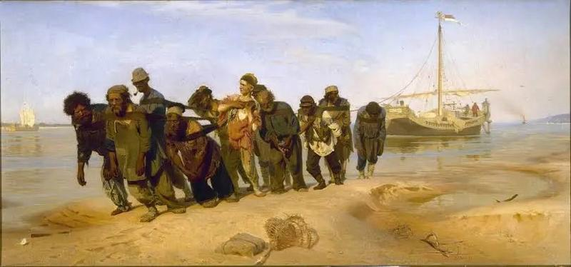
« БУРЛАКИ НА ВОЛГЕ »
Наш «Маленький принц» отправился из Чкаловска 27 июля в 18 часов в следующий порт - Ярославль. Мы прибыли туда 28 июля в 11 часов утра, стоянка в этом порту - 9 часов, мы могли гулять по Ярославлю до 20 часов вечера. Краткая история о Ярославле. Это один из наиболее древних российских городов и самый старый из существующих поселений на Волге. Он был основан князем Ярославом Мудрым в 1010 году. Символ Ярославля - это медведь с секирой, изображенный на гербе города, что связано с легендой о князе Ярославле Мудром, победившим медведя. Ярославль считается культурной столицей золотого кольца. Расположен на слиянии рек Волги и Которосль. В 1612 году Ярославль получил статус временной столицы, около трех месяцев он был местом сбора Первого ополчения под предводительством Кузьмы Минина и Дмитрия Пожарского, которое освободило страну от польской интервенции. Это был важный этап в истории России , когда Ярославль исполнял функции столичного центра в условиях кризиса и борьбы за власть. Это было смутное время начала 17 века. Москва была оккупирована поляками, крестьянская война, хаос, самозванцы. Ярославль спас государство от распада ,став собирательным центром русской земли . Освобождение Москвы от поляков стало символом массового геро- изма, когда простой народ встал на защиту Веры и отечества. ВОВ стала войной всего народа, где каждый вносил вклад в победу. Фашисты не дошли до Ярославля, но город снабжал фронт, перейдя на военные рельсы, когда каждый советский человек, подобно ополченцам 17 века встал на защиту своей страны. Наша экскурсия по Ярославлю была продолжительной - мы посетили Кремль, Рубленый город. Он расположен в самом центре города и известен тем, что там был найден величайший памятник древнерусской литературы - единственный сохранившийся экземпляр произведения «Слова о полку Игореве» (автор неизвестен). Он был найден в Спасо-Преображенском монастыре графом Мусиным-Пушкиным в конце 18 века. Сама рукопись сгорела при пожаре 1812 года, но сохранилась копия и первое издание,сегодня уникальная рукопись «Слова», хранится в государственном Историческом музее в Москве. Это памятник литературы Древней Руси, рассказывающий о неудачном походе русских князей во главе с Игорем Святославичем Новгород-Северским на половцев в 1185 году. Книга на- писана на древнерусском языке, но есть перевод многими писателями на современный русский язык. Это произведение включено в школьную программу. я помню. А ведь оно было найдено здесь, в Ярославле. И я побывала здесь спустя тысячелетия. Конечно впечатляет. В Спасо-Преображенском монастыре главной святыней традиционно считаются раки с мощами ярославских чудотворцев - святых благоверных князей Феодора, Давида, Константи- на. Спасо-Преображенский храм, Святые ворота и Трапезная палата являются одними из древнейших и наиболее значимых архитектурных построек в Ярославле. В стенах монастыря находится музей- заповедник, где представлены старинные иконы и ювелирные изделия. Мы также поднимались на звонницу - это обязательный пункт визита, где можно полюбоваться панорамным видом города с высоты 32 метра. По преданию здесь похоронен основатель города князь Ярослав Мудрый и многие другие исторические личности. В этом городе много знаменитых храмов, церквей, соборов, но посетить их за один день невозможно. Я выбрала для себя дополнительную экскурсию в Толково в Ярославле, где находится церковь Иоанна Предтечи - выдающийся памятник русской архитектуры, жемчужина Ярославско- го зодчества 17 века, единственный в России 15-главый храм. Храм широко известен тем, что его архитектурный ансамбль вместе с колокольней изображен на оборотной стороне банкноты достоинством 1000 русских рублей. Фасады церкви укра- шены искусной кирпичной кладкой и многоцветными изразцами, за что ее называют узорчатой шкатулкой. Внутри храма сохранился уникальный цикл фресок, созданный в 1694-1695 годы. Это самый большой по площади и количеству сюжетов ансамбль росписей в христианском мире. Моя экскурсия достопримечательностей в Ярославле закончилась посещением Толгского женского монастыря, он знаме- нит своим чудотворным образом Толгской иконы Божьей матери - чудотворной святыни, покровительницы семьи. Мона- стырь имеет богатую историю и славится своей ухоженной территорией с кедровой рощей и цветами. Ярославль - один из главных центров знаменитого туристического маршрута, что делает его центром притяжения для туристов всего мира, один из крупнейших городов Центральной России с населением 500 тысяч человек. Ярославль - сто- лица Золотого кольца, город -музей под открытым небом. Уезжая, думала о том, что я уносила с собой не только фотогра- фии, но и ощущение вечности, исходящее от древних стен и куполов. Ярославль - то место, где прошлое дышит настоящим, а Волга шепчет истории о веках. Интересно, что существует множество стихов, посвященных Ярославлю. Тут, на набережной Волги недалеко от Преображенского Монастыря установ- лена Стелла - монумент в честь 1000 юбилея города в сентябре 2010 года, символизирующая богатую историю и значимость города как одного из старейших центров России, включая его роль временной столицы. Когда наш пароход уходил от города Ярославля, я мысленно возвращалась к истории города, который покорил меня величием и удивительным спокойствием. Огромное спасибо тем, кто по крупицам восстанавливает и бережет эту память для поколений, потомков. Благодаря обилию достопримечательностей, музеев и событий он по праву носит звание культурного лидера маршрута Золотого кольца. Оставив позади города Золотого кольца, наш «Маленький принц» взял курс на Москву, но впереди нас приветствовала гостеприимная Дубна. Дубна - зеленое и уютное место. Поселение существует давно, расположена на канале имени Москвы, ранее Москва-Вол- га, который соединяет Волгу и Москву реку, обеспечивая судоходство и водоснабжение. Город Дубна получил название именно благодаря реке Дубна, впадающей в канал, который строился с 1932 по 1937 год. Это был настоящий подвиг, не имеющий аналогов в мире, подвиг человека и народа... Наш путь на теплоходе шел именно по величественному каналу имени Москва, грандиозному творению, в каждый километр которого вложен титанический труд строителей прошлого года. Мне было грустно представлять, какой непомерной ценой и какими сверхчеловеческими усилиями проложен был этот путь... Экскурсия по городу была недолгой. Мы проехали на автобусе в места, где расположены памятники и таблица Менделеева. Почтили память Высоцкому, где он изображен как бард с гитарой в честь 70 лет - символ связи с городом, где он неоднократно выступал в 1960-70 годах. Полюбовались памятником Ленину, памятником самолету ИЛ2. Нам показали место, где находится гигантский 9 метровый стул-гигант, выполненный из березы - он был внесен в книгу рекордов России. Конечно, Дубна, это уникальный город, как наукоград где сосредоточены научные организации, где гармонично сочетаются высшая наука, живописная природа и уют пригорода. Теплоход «Маленький принц» совершил свой последний переход и наше плавание от Дубны до Москвы подошло к финишу. 30 июля - последний день на теплоходе, на душе грустно, хотя все шло своим чередом - привычная зарядка и завтрак. Впереди самое сложное - прощание с людьми, которые сделали мой отдых незабываемым. Домашний уют, вкусная еда и теплая атмосфера, шоу и и праздники, знакомство с теплоходом, организованное капитаном теплохода, и организация прекрасных экскурсий в городах Углич, Мышкин, Кострома, Городец, Нижний Новгород, Ярославль и Дубна, стоимость автобуса, просмотр достопримечательностей - все было включено в стои- мость путевки, знакомство с замечательными людьми от которых я всегда имела помощь на экскурсиях и с которыми я под- держиваю связь и сейчас. Спасибо моему сыну, Андрею Юрьевичу, который организовал мою экскурсию. Наш «Маленький принц» прибыл утром 30 июля. Встречал меня Андрюша. Матросы вежливо выставили наши чемоданы у борта теплохода. У меня твердая земля под ногами - это не палуба, по кото- рой я гуляла сегодня утром и снова грусть, мое приключение на теплоходе «Маленький Принц» закончилось. Я уносила с собой море воспоминаний и это надолго, я знаю. Настоящая русская сказка, ощущение, будто я побывала в городах Золотого кольца пару столетий назад, и это было очень интересно, ведь история оживает, когда мы по ней ходим. В Москву я вернулась в праздник ДВМФ, который всегда

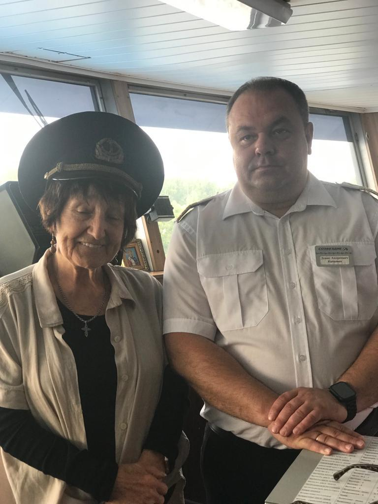
« МОИ ДРУЗЬЯ»
отмечается здесь в последнее воскресенье июля. Погода жаркая. Вика встретила меня дома, Валя была на даче. В Москве я была недолго - 3 августа я уезжала в город Таганрог, где меня ждала племянница, дочь моей старшей сестры. По моей просьбе Андрюша заранее купил мне билет. Но в Москве у меня образовался ряд незавершенных задач, требующих срочного решения и я приступила к их выполнению. На почте я отправила бандероль в Петербург, перевела деньги Детскому дому, ходила на встречу к метро Ленинский проспект на встречу с женщиной из Донецка, мамой моей знакомой Ольги из Новом Зеландии, она привезла для нее важный документ. В этот период времени чаще видела Вику - она успешно сдала зачет - она постоянно повышает уровень своей специ-

« КАПИТАН АЛЛА»
альности. Ходили с нею в кафе, магазин, купили вкусные манго и лотерейный билет ей на удачу. Почему-то вспомнила спортлото, конечно, понимаешь, что выигрыш - это редко, но в нем есть что-то беспроигрышное - ты платишь небольшую сумму, а с гарантией получаешь положительные эмоции, а может быть даже что-то выигрываешь. С мужем часто покупали, выигрышей не было, но всегда ждали розыгрыш и надеялись и сильно не расстраивались, когда выигрыш проходил мимо нас. Вспомнила, что иногда люди прислушиваются к чужим советам - вроде как неправильным, но я слушаю всегда разные точ- ки зрения, чтобы составить свое собственно мнение -это всегда помогало мне видеть ситуацию шире. Но окончательное решение я всегда принимала сама. Опыт моей жизни свидетельству- ет об этом, пусть иногда и были ошибки, но это были мои ошибки, как и моя жизнь.
Я уезжала с Казанского вокзала. Андрюша с работы приехал к поезду, передал 300 рублей на памятник для Светланы в Луганске. Я собиралась с Тамарой из Таганрога проехать в Лу- ганск - это уже традиция. Мой визит туда очень короткий, так как военные действия в Луганске начались весной 2014 года и переросли в войну, известную как война на Донбассе. Но это моя родина, я не могу не поехать туда. В Ростов я приехала 4 августа - встречала Тамара. Я приболела, добирались из Ростова до Таганрога на электричке, по- том на автобусе. По пути зашли в аптеку, купили лекарства для скорейшего моего выздоровления. В гостях нельзя болеть. Погода была жаркая, но по утрам я выходила в парк, наслаждаясь свежим ранним утром и это был хороший стимул для моего выздоровления. В семью Тамары я приезжаю не первый раз - здесь мне всегда уютно, квартиру в Таганроге они купили по сертификату, который им дали по программе пере-

« ПЛЕМЯННИЦА ТАМАРА»
селения инвалидов в сентябре 2012 года. В декабре 2013 года они переехали сюда из поселка Джебарики-Хая, Саха Якутия, где она жила с июня 1983 года, приехав из Луганска по моему приглашению и по окончанию ею учебного заведения в июне 1983 года. 22 сентября 1984 года она вышла замуж. На свадьбу прилетали ее родители, Светлана Федоровна и Николай Иванович, там родился Миша, их сын. На шахте ее муж, Александр Михайлович, получил травму ног 5 декабря 1984 года и остался на всю жизнь инвалидом. Они были молодыми. Ее любовь казалась сильнее обстоятельств, она научила его жить заново в но- вой реальности и они прожили вместе 40 лет. В этот мой приезд он был очень слаб, часто находился в больнице, но несмотря на его тяжелую болезнь в семье сохранялась атмосфера поддержки и тепла. Я понимала, это главное было в их жизни всегда. У нас с Тамарой были небольшие прогулки по достопримечательностям Таганрога, но многое о городе я узнала еще раньше в прежние годы, когда я приезжала в Таганрог. Город Таганрог носит звание города Воинской славы за подвиг в годы ВОВ. Защитники города проявили невероятное му- жество во время оккупации 1941-1943 гг. В 2015 году в городе открыли памятную стелу в честь этого события. Петр первый в 1698 году создал этот город как крепость для защиты южных границ. В 1825 году 200 лет назад в Таганроге прервался жизненный путь Александра первого. Российский император скончался здесь после тяжелой болезни 19 ноября 1825 года, ему было 47 лет. Он любил этот город на Азовском море, он находил здесь тепло, морской воздух, что было важно для его здо- ровья и отдыха от Петербурга. Таганрог - это город великих имен. А. С. Пушкин часто бывал в Таганроге, им написаны стихи: «Всю жизнь свою провел в дороге, простыл и умер в Та- ганроге». Таганрог - родина Антона Чехова, который писал что для него лучше жить в Таганроге, так как «дым отечества сладок и приятен». Здесь бывал Петр Чайковский, именно здесь родилась и провела свои юные годы неповторимая Фаина Раневская. В прошлые мои приезды я посещала достопримечательности этого уютного города, была в музеях, в театре, ходила по знаменитой Каменной лестнице Депальдовской (дата постройки 1823 год), построенной на средства греческого купца Депальдо. Рядом с лестницей города находятся солнечные
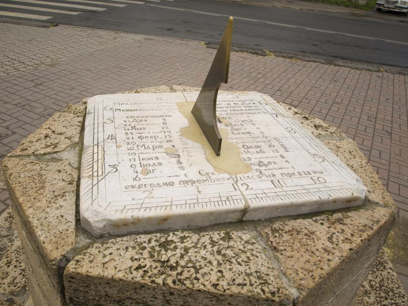
« ТАГАНРОГ - ЭТО ГОРОД ВЕЛИКИХ ИМЕН»
часы, это исторический памятник и достопримечательность. Установлены в 1833 году, служили для сверки городских часов показывая истинное местное солнечное время, отличающееся от московского, а сейчас являются объектом культурного наследия. Интересно, что истинное местное время, основанное на положении солнца в Таганроге, на 25 минут раньше московского времени по долготе. Чувствуется, что в этом городе бережно хранят историческое наследие города, поддерживая порядок и уют на старинных улицах . В свободное время от домашних дел мы с Тамарой делали шопинг по магазинам, на рынке. Однажды шопинг прошел настолько успешно, что кошелек решил уйти в свободное плава- ние прямо на рынке. Видимо произвел такое впечатление, что местные ценители решили взять плату за вход в размере всего

« СЕМЬЯ ВАЛЕЕВЫХ»
содержимого моего портмоне. Ну что ж, зато налегке во всех смыслах, а может мои деньги были нужнее в данный момент кому-то. Удивительно, но сработал закон равновесия - как только у меня не стало этой суммы, банк наконец выплатил мне старый долг, почти на ту же величину, правда это было позднее в городе Нерюнгри .. Вышло то на то. Нет худа без добра. В отношении банковской карты я сообщила в банк и получила новую карту по приезду в Москву, но у меня была запас- ная банковская карта, которой я пользовалась в Таганроге. Кошелек я купила новый, со старым я рассталась без сожаления. Этот эпизод произошел 6 августа в день рождения моего мужа, который ушел много лет тому назад, это всегда стрессовый день, когда становишься рассеянно , эмоционально уязвимой, что и случилось со мной. После трех дней в Таганроге начался новый этап моего пути в Луганск… 7 августа ранним утром мы с Тамарой доехали на такси до вокзала, сели на электричку до Ростова. Жара стояла невыносимая с самого утра. На Ростовском вокзале мы недолго пе- реждали пекло в прохладном кафе, а затем на такси уехали в продолжение нашего путешествия. В такси, к моему удивлению, было не жарко - проветривание и вентиляция обеспечили приятную температуру в салоне, что позволило избежать нам дис- комфорт в жару. Выехав из Ростова, мы проехали города Новочеркасск, Каменск, Шахтерский. Остановка была у русской таможни Каменец-Шахтинская, проверка была только паспортов, затем была таможня ЛНР без проверки, от здания которой мы шли пешком км два с багажом и по жаре, что было конечно утомительно. В конце этой прогулки нас ждал микроавтобус на нем мы продолжали наш путь в Луганск. За окном развора- чивалась география моей памяти. Знакомые названия - Свердловск, Краснодон, Молодогвардейск - города сменяли друг друга, напоминая о временах моих частых командировках в далекие годы, словно главы из старой книги... Привет из прошлого... В Луганск мы приехали прямо не на автовокзал, а на квартал Заречный по договоренности с водителем к дому, в котором жили моя сестра Светлана Федоровна и ее муж Николай Иванович. В настоящее время там живет их внук Миша, сын Тамары и Саши, со своей женой в гражданском браке Мариной и дочерью Ангелиной, рожденной в июне 2019 года. В Луганске я бываю всегда, когда приезжаю в Россию из Новой Зеландии, куда я уехала жить в 2009 году. Сначала думала - временно, быть поближе к семье младшего сына, где в 2005 году родился внук Антон, которого я хотела видеть, хотя они жили на Северном острове Новой Зеландии, а я на Южном. Хоть ред-
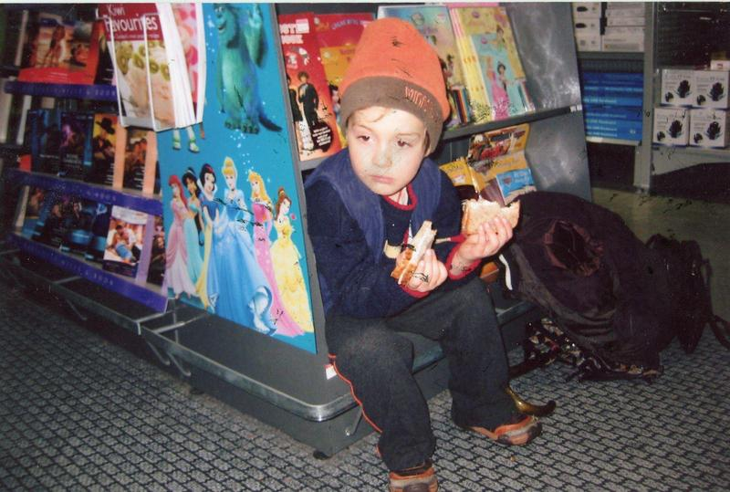
« ВНУК АНТОША 2009ГОД»
ко, но я летала к ним и была счастлива. Позже, в 2010 году они переехали жить в Австралию, в город Брисбен. Я часто гостила там, где рос мой маленький внук - я дарила ему свою заботу и внимание, разучивала с ним стихи на буквы русского алфавита для развития речи. Нашими любимыми развлечениями были прогулки и катание на детских поездах. Это мои воспоминания, а может и его…… Луганск навсегда останется частью моей души, это мой родной город, куда я буду возвращаться всегда. Хотя сегодня он больше всего превращается для мен в город-память, где каждый уголок хранит тепло и голоса близких, которых больше нет рядом. В Луганске я была 5 дней. Программа моего приезда была следующая - заказать памятник на могилу Светлане, навестить могилы родственников на кладбище, Острая могила, церковь, Камброд, Садовая, встречи с Соболевыми, Леной Борисовой и родственницей по линии моего папы, Валей Никулиной. Я всегда ее навещаю когда приезжаю в Луганск. Она одинокая, я под- держиваю ее финансово, когда бываю там. Ее дом находится рядом с одним из наших сохранившихся домов, где сейчас живут чужие люди, но когда-то это был наш дом и мне всегда хо- чется быть там, просто постоять около него, несмотря на перемены, это место все еще отзывается в моем сердце. Камброд - для меня родина моего детства, юности. Наш дом с пристройками находился на улице Артема в Каменобродском районе. Рядом с домом стоял металлический столб, с которого в детстве мы подавали позывные, когда играли в детские игры и этим звуком беспокоили соседей. Напротив дома было здание райисполкома, пришедшее в нерабочее состояние во время войны, а потом восстановленное. Здесь моя мама работала уборщицей, а я и моя сестра помогали ей. Напротив нашего дома через дорогу, по которой ходили трамваи с таким звуком, от которого содрогался наш дом, подальше от здания Райисполкома находилось здание Райкома партии. Напротив него - детская поликлиника и чуть подальше магазин под названием «Девяносто». Не знаю, почему он так назывался -раньше никогда не задумывалась. А вот рядом с нашим домом был яр, кото- рый в дождливую погоду наполнялся водой, с грохотом сте-
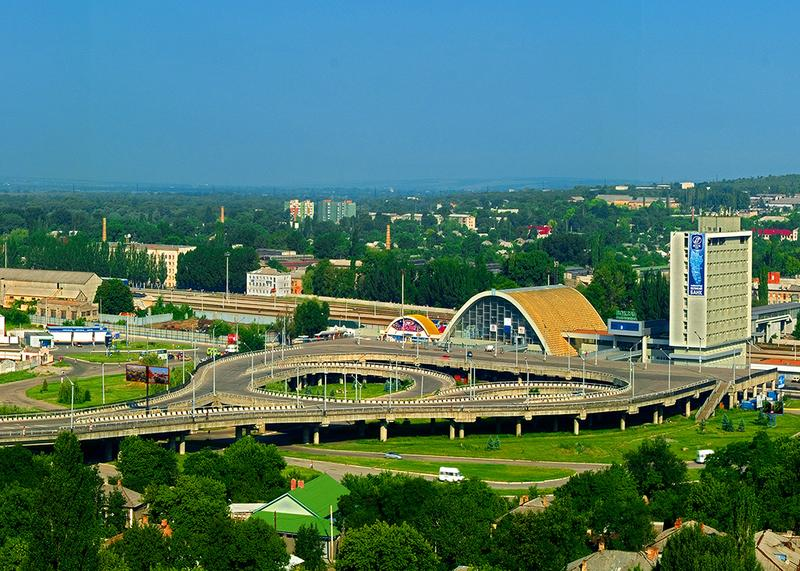
« ЛУГАНСК- 2023ГОД»
кавшей в нашу речку Луганка, которая в годы моего детства, юности была широкой, глубокой. В ней я училась плавать и там проходило мое детство с моими друзьями, братьями. Помню, чтобы спуститься в некоторых местах к речке, где берега были крутыми, нужно было преодолеть кустарники, высокую траву, дикие кручи , где иногда мы прятались, когда играли в игры вроде казаки-разбойники. Говорят, в детстве деревья и трава зеленее. Мои Луганские кручи не стали исключением - спустя годы они оказались лишь скромными холмами, но в моей памяти навсегда остались великанами. Через яр от нашего дома находилась усадьба, хозяева которой сдавали дом под аптеку. Часто в яру я находила пузырьки, лекарства и делала свою детскую аптеку, мысленно кого-то лечила, спасала от мнимых бо- лезней. Здесь, недалеко на нашей улице Артема была парикмахерская. Это было очень удобно и потом, когда родился мой старший сын Андрюша в апреле 1960 года, я приводила его стричься сюда. Тогда была модная прическа – канадка, всегда мой маленький сынуля имел модную стрижку. Чуть подальше от моего дома был мост, по которому ходили машины, но не трамваи. Этот большой мост был разрушен в годы ВОВ, восстановлен после войны. С него начинались другие объекты - моя школа под номером 3 - женская гимназия, где училась я и моя старшая сестра Светлана, напротив - стадион имени Ленина, где в зимний сезон я каталась на коньках и принимала участие в соревнованиях по конькам, дальше был Ботанический сад. А после начиналась улица Садовая, где я прожила многие годы, когда вышла замуж за Пазынич Юрия Степановича. Его я знала с детства, потом мы потеряли друг друга - у него была служба в Армии три года, а я по окончанию техникума и по распределению министерства строительных материалов уехала работать в город Черемхово Иркутской области на три года. Встреча была неожиданной, мы поженились в июне 1960 года. Настоящее название улица Садовой - Карла Либкнехта, но старое название этой улицы все еще живет, может это связано с личными воспоминаниями, когда старшее поколение передает молодежи старое название. Дом 37 Карла Либкнехта – Садовая, где мы жили семьей с моей свекровью, Сафроновой Галиной Никитичной, несколько лет. Воспоминания... В этот приезд я была здесь, на нашей Садовой... Пешком с Тамарой мы прошли этот путь воспоминаний ко двору по улице Карла Либкнехта, 37 с одним почтовым адресом для всех жильцов в то время, с одним туалетом на всех жильцов и колонкой для воды во дворе. И с абрикосовым деревом - сейчас его нет, но вкус этих абрикос я часто вспоминаю. Здесь по-прежнему стоят те же дома, некоторые пустые, а в некоторых живут незнакомые люди. Квартира, в которой мы жили, тоже пустая, сквозь старые окна можно видеть высокие потолки, внутри окон покосившие ставни - напоминание о других ставнях, когда можно было закрыв их, спасаться от жары, темноты, а иногда от громких разговоров внутри двора. Вспомнила учительницу, немку Екатерину Ивановну, нашу соседку - я многому у нее училась, а рыбу я жарю всегда так, как она меня учила когда то. Тима, ее сын, был любителем рыбалки и она часто делилась его уловом. Вспомнила наводнение в 1961 году. Это было стихийное бедствие, мы сидели на кровати, не двигаясь, так как квартира была залита водой до уровня сетки кровати, а лодка подъезжала к нашим большим окнам и забирала нас, перевозя в без- опасное от воды место. Яр около дома мамы тоже разливался, но дом мамы не был затоплен и мы переехали в ее дом с маленьким Андрюшей и жили там до окончания ремонта кварти- ры на Садовой. Помню, что когда мы жили у мамы, моя младшая сестра Люба выходила замуж за Сандлер Эдуарда Львовича в 1961 году. Приятное событие. И тоже воспоминания... Наше маленькое путешествие по знакомым местам продолжалось. С Тамарой мы вышли к Саду имени 1 мая, где мы часто бывали с Юрой и маленьким Андрюшей, смотрели фильмы в открытом кинотеатре по вечерам, ходили кушать вкусные чебуреки, а когда-то в юности он и я ходили на танцевальную пло- щадку. Нет уже танцевальной площадки да и открытого кинотеатра тоже нет, все другое, новое, современное . На углу Садо- вой недалеко от ж/д путей стоит большое здание - я забыла название этой организации, но помню, что здесь работала моя тетя Легенченко Анна Константиновна , дочка моей двоюродной бабушки. Знаю, что это был трест, связанный со строитель- ством, а сейчас это другая организация. Здесь работала моя мама вахтером, я часто к ней приходила с Андрюшей Это была недалеко от дома, где я жила и возможность чаще видеть маму. Вспомнила случай. Мы с Юрой ушли на какое-то мероприятие. Андрюша маленький оставался с бабушкой Галей, ему не понравился наш уход и он убежал от бабушки, которая, запыхавшись, не успевала его догнать, чтоб его повернуть назад. Он со скоростью бежал к ж/д путям, но бабушка Вера, моя мама увидела его в окно вахты и перехватила, пока он не добежал до опасной ж/д дороги. Он оказался в плену двух бабушек и, расстроенный, вернулся с бабушкой Галей домой. В садик он по- шел после трех лет - я и Юра работали, бабушка Галя заботилась о нем, она была уже пенсионного возраста. Иногда бабушка Вера в свободное от работы время забирала его к себе. Столько воспоминаний. В этот приезд я была в церкви. Я знаю эту церковь с раннего детства, она находится на моей улице Артема недалеко от моего дома рядом со зданием бывшего райкома партии. Я помню времена гонения на церковь, когда нам, школьникам, не разрешали ходить туда. Учителя следили за нашим посещением церкви, а мы ходили. Мне знакома была там каждая икона. Я помню, когда ждали архиерея, ему стелили красные дорожки во дворе церкви, по которым мы догадывались о его приезде. В церкви часто проходили обручение и венчание молодых, а также крещение младенцев... Эта церковь упоминается как церковь Петропавловская, с 1882 года храм является памятником архитектуры, а официально начала именоваться Петро- павловским кафедральным собором с 1991 года с возвращением городу исторического названия. Я родилась в 1937 году, а храм Петропавловский был закрыт с 1929 года и открыт для ве-

« ЛУГАНСК, ЦЕРКОВЬ ПЕТРОПАВЛОВСКАЯ »
рующих в 1942 году. Я не знаю, в какой церкви меня крестили, в те времена в 1937 году многих детей крестили тайно на дому приглашенные священники, так как открытых действующих храмов в городе практически не оставалось. У меня были крестные родители - тетя Нина, сестра моей мамы, а крестный дядя Сеня, брат моей мамы. Они всегда заботились обо мне, сейчас их уже нет. Мама моего мужа была членом партии и не принимала веру, ее дети и внуки, мои дети, покрестились в более взрослом возрасте... Последние дни в Луганске я встречалась с родственниками: племянницей Леночкой, дочкой моей младшей сестры, он живет в той же квартире, где жила моя мама. Конечно, все здесь изменилось. Ее нет уже много лет, но всегда, когда я подхожу к балкону маминой квартиры, мне кажется что там стоит моя мамочка и машет мне рукой, а когда поднимаюсь по лестнице к квартире, я мысленно представляю, что дверь квартиры уже открыта, а она стоит и со своей доброй светлой улыбкой пригла- шает меня зайти домой, где всегда для меня было что-то вкусненькое. А когда я уходила - это было обычно в утреннее время - я бежала к ней перед работой, и она мне давала билет на автобус, заранее купленный для меня. Теперь здесь живет ее внучка уже много лет. У нее очень уютно. О маме напоминает только альбом с нашими семейными фото. Альбом, как мост между прошлым и настоящим. Там мы, наша семья все еще вместе. Фотографии хранят то, что память стирает. Здесь, в альбоме, я увидела фото моей бабушки по папе. Этот снимок как бы оживил близкого мне человека, которого я знала только по рассказам мамы и моих родственников…

« МОЯ БАБУШКА ПО ПАПЕ, КАПИТАЛИНА »
Леночка живет одна, ее муж Володя в длительных командировках, дети живут самостоятельно со своими семьями. Она, несмотря на пенсионный возраст, продолжает работать в детском садике воспитателем уже много лет. Выходные она обыч- но проводит со своей внучкой Викторией. Эхо ушедших шагов растворилось в смехе маленькой девочки. В Луганске я прожила 5 дней. За это время я была в гостях у родственников моего мужа Соболевых. Нина, его двоюродная сестра, уже очень взрослая женщина со множеством болезней, но ее энергия дает ей силы. Она живет вдвоем с дочерью Ириной, единственный внук в другом городе, но общение посто- янное. Встреча была короткой, но очень душевной. Хотя мы и не родные по крови, но в этой короткой встрече было искреннее тепло, которое бывает между близкими людьми. В кафе у нас с Тамарой была встреча с ее родной сестрой Ириной, мужем Леней и внучкой Дианой. Пили пиво и кушали

« НАШИ РОДСТВЕННИКИ, ЛУГАНСК »
вкусные чебуреки, сделали фотки и разъехались. Маленькое событие, а оставило много приятных воспоминаний. Я была с родственниками в родном городе Луганске. Важным и значимым событием здесь было посещение мною мемориального комплекса Острая могила. Это место с глубокой историей, которое хранит память о героях разных поко- лений. Недалеко в этом районе находится кладбище Острая могила, где похоронены близкие мне люди: мама, Никитина Вера Петровна, две сестры: Любовь и Светлана, муж, Юрий Степанович Пазынич, свекровь, Галина Никитична Сафонова, два зятя: Николай Иванович Земсков и Юрий Александрович Холопский, семья Слесарчук - все ушли в разное время.

« МЕМОРИАЛ - ОСТРАЯ МОГИЛА »
Посещение могил близких это не только дань памяти, но и возможность почувствовать духовную связь с ними. Большинство родственников нашей большой семьи Слета похоронены на другом кладбище – Каменнобродском, там я не была. Я ездила на квартал Южный, ожидала встречу с другом всей моей жизни, Понеделовой-Пидгерец Жанной Ивановной, но опоздала - она ушла, нет и ее мужа. С детьми ее у меня не было
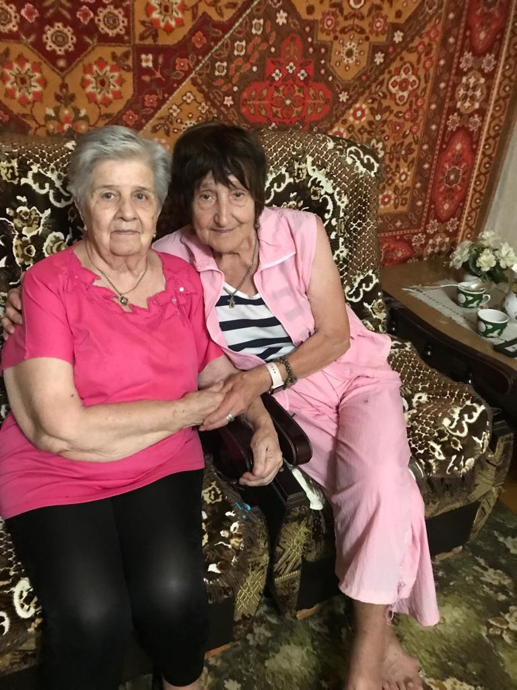
« СОБОЛЕВА. НИНА »
связи. Друзья уходят, но дружба остается в сердце навсегда. На Заречном квартале есть Свято-Николаевский храм в честь Николая Чудотворца. Когда я бываю в Луганске, я посещаю этот храм, вот и на этот раз я ушла туда одна перед моим отъездом. Мои короткие путешествия по знакомым местам моего родного города закончились, сборы назад в Таганрог были недолгими. Купила конфеты «Курочка Ряба», Шахтерский торт и водку местного производства «Горилка». Я помню вкус конфет и Шахтерского торта, когда я покупала их на семейные торжества в прошлые годы. Вот и сейчас захотелось. Поездка назад была более короткой. Выехали с Тамарой 12 августа ранним утром на такси. Через час были в Гуково – таможня, от которой была прекрасная дорога до Ростова всего 1.5 часа. На электричку опоздали, ждали следующую. От электрички ехали на такси прямо к дому. Саша был дома, его выписали из больницы после медицинских процедур, выглядел хорошо, но конечно скучал без Тамары. Мой день рождения я праздновала здесь, в Таганроге. Это был по-настоящему теплый и душевный день рожде- ния, проведенный в кругу близких мне людей. Тамара с Сашей превратили мой праздник в настоящую сказку, поздравив меня огромным невероятной красоты букетом цветов и накрыли потрясающий стол, полный вкусностей. Но самое удиви- тельное - география праздника. Мой день буквально превратился в карту мира. Поздравления были от сыновей, род- ственников, друзей, от знакомых, с которыми жизнь нас не сводила долгие годы, это было до слез приятно. Это состояние, когда понимаешь, что истинные связи не зависят от частоты встреч, а их внимание - это подарок, который хранится в сердце. Я получила букет цветов по почте от моих друзей Любы и Сони из города Нерюнгри. Это было для меня трогательным сюрпризом, подчеркивающим, что дружба не знает расстояний. Мой день рождения напомнил мне, как много вокруг тепла и потрясающих людей. Я ушла в новый личный год с полным сердцем и широкой улыбкой и благодарностью каждому, кто стал частью моего праздника. На следующий день я уезжала из Таганрога. Путь был тот же такси, электричка, Ростов-на-Дону, ж/д вокзал. Поезд ушел по расписанию. Прощание - это не встреча, грустновато я смотрела в окно вагона на Тамару, стоявшую с другой стороны окна на
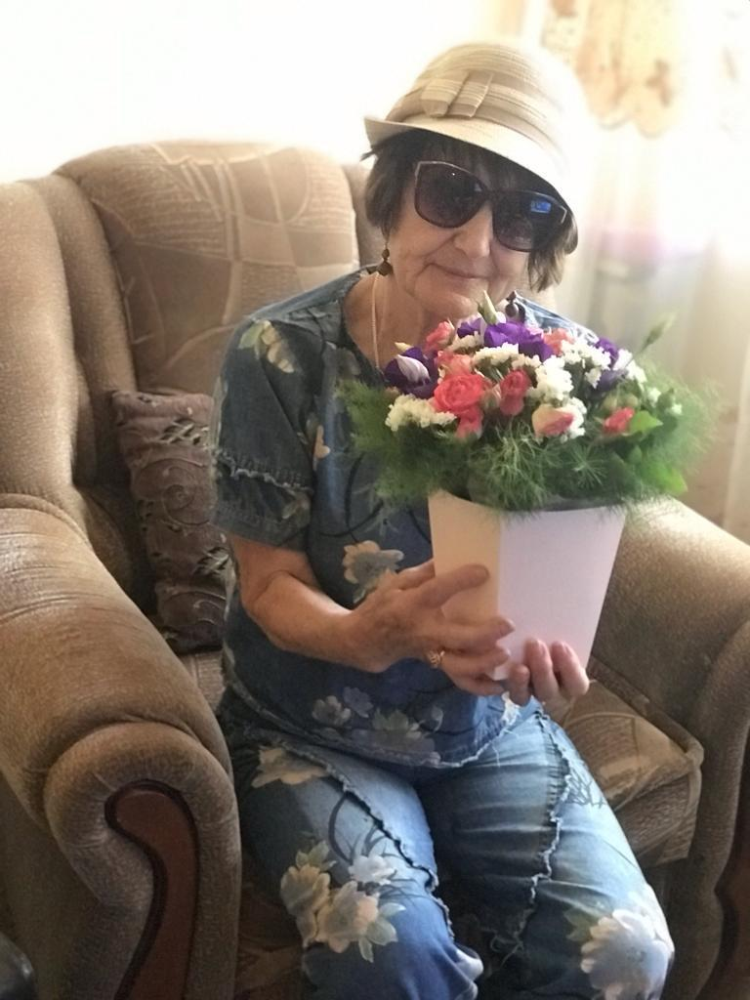
перроне, с благодарностью к ней - ее отъезд со мной в Луганск во время болезни Саши - это редкое сочетание благородства и глубокого уважения ко мне. Она сумела расставить приоритеты там , где другие бы сдались. Она поняла, что в этой поездке я не должна быть одна, Спасибо, Томик, за понимание. Поезд с Таганрогского перрона уходил медленно. У меня было прекрасное купе с верхней полкой. Верхняя полка меня совершенно не трогала. Я уже знала, что нижняя полка - это миф, поэтому залезла наверх с достоинством. Это было слишком мелким поводом для расстройства, так как верхняя полка - лучший тренажер. Спорт в любом возрасте. Это отличная метафора того, что движение и гибкость важны всегда . Поезд, кото- рым я ехала, известен как фирменный «Тихий Дон». Время в пути составило около 16 часов 2 минут, но главное, что в этом поезде можно было принять душ. Еду приносили в купе. Проводница - профессионал своего дела – в вагоне идеальный по- рядок, в общении исключительная вежливость. И все-таки мне верхняя полка понравилась, она была ближе к вентиляции, я могла дышать свежим воздухом и потом я могла спать и читать по своему желанию. В Москву поезд прибыл утром на Казанский вокал, встречала Валя, на такси мы приехали к дому. А вечером настоящий семейный пир: сочный арбуз от Андрюши, стол, накрытый Валей и мои гостинцы из Таганрога и Луганска и подарки для меня, подготовленные к моему дню рождения. Все это создало самую неповторимую атмосферу дома. Самые лучшие праздники - это не шумные рестораны, а вот такое искреннее общение в кругу своих. Приятные воспоминания. В Москве я снова оставалась недолго. Мое заключительное путешествие по России было в Нерюнгри.
Я была очень счастлива этому подарку моего сына. Я летела в город, в котором я прожила большую часть своей жизни. Оттуда я уезжала в 2009 году в Новую Зеландию, но туда я и всегда приезжала, когда была в России. Москва оставалась снова позади, но она меня так просто не отпускала. Нужно было успеть сделать много дел. Спасибо Вике, несмотря на ее занятость, вдвоем с нею я быстро решила вопрос по заказу и получению новой карты в Сбербанке. В метро она направила меня по более короткому пути к Фатиме, моей знакомой, к которой я приехала вовремя. Вика давала мне совет в отношении выбора подарка ко дню рождения Евы, внучки Вали. Мы нашли время вместе покушать в кафе, я как всегда заказала суп-харчо, а она - рыбное блюдо. Вечером смотрели какой-то фильм по домашнему ТВ и обменивались впечатлениями. Я помню, один интересный день в этот период времени, который начался эстетично с Фатимой: обед в кафе, душевные разговоры и десерт, который был взят на дорожку, не поместился в нас. Но по пути домой я не могла пройти мимо киос- ка при виде горы огромных арбузов. Выбрав 9-килограммового красавца, я строго предупредила продавца: если будет зеленый, верну. Но я явно переоценила свои физические возможно- сти: нести одновременно хрупкое лакомство в коробочке и тяжеленный арбуз казалось задачей из разряда невыполнимых. Но слава Богу, есть связь и Валя, как настоящий спаситель, оказалась дома и пришла на помощь. В итоге, вечером, когда при- шел Андрюша, мы всей семьей праздновали победу - арбуз оказался невероятно сладким и десерт от Фатимы очень понра- вился Вале. А утром я с чистой совестью поблагодарила продавца арбузов за его честность. 18 августа - день ухода Юрия Степановича. Прошло 34 года с тех пор, Андрюша принес розы - это традиция, добрые воспоминания в семейном кругу. Последние выходные перед полетом я провела в Степаньково. Мы были там втроем: Андрюша, Валя и я, и кот Оливер – четвертый. Я спала в уютной спальне на первом этаже с огромным окном и чистейшим подмосковным воздухом. Андрюша провел конференцию, так как Олежа был в полете Джакарта -Тимики . В воскресенье ребята трудились. Андрюша косил траву специальной машиной, Валя собирала в мешки, а я бездельничала, что для меня было непривычно - просто не хватило смелости сказать: давайте я вам помогу. Я не знала, требовалась ли им моя помощь. Уехали с дачи, когда работа была закончена. Перед поездкой на дачу с Валей ездили в огромный магазин «Твой дом», где я заказала стулья для дачи - это был мой подарок в дополнение к столу, который я подарила им в прошлый мой визит - теперь будет полный комплект. В день шахтера я была в Нерюнгри, и поэтому перед отъездом туда я подготовила подарки для всей семьи индивидуаль- но каждому, так как День Шахтера - это наш большой семейный праздник. Юрий Степанович, мой муж, работал последние годы на шахте в Джебарики-Хая. О моем сыне, Андрее Юрьевиче, нужно писать целую книгу - я думаю, моя внучка, Виктория Андреевна, напишет. Мой сын после окончания института прошел путь от горного мастера до директора разреза Нерюн- гринский АО ХХ Якутуголь. Кавалер знака Шахтерская слава 1,2,3 степени, кандидат технических наук, Заслуженный горняк Республики Саха Якутии. Награжден Почетной грамотой Министерства науки и профессионального образования РСЯ за большой личный вклад в развитие науки и заслуги в области научных исследований. С 2010-2016 технический директор АО ХХ Якутуголь, с 2016- 2019 заместитель технического директора АО Сибирский Антрацит с 2019 -2021 директор Управле- ния по операционной деятельности ООО Мечел Майнинг. 30 августа 2021 года назначен директором ООО УК Мечел Майнинг . Мой сын - большой специалист с огромным стажем работы, с большим добрым сердце, в ущерб своему здоровью, а

« АНДРЮША - СТРОЙОТРЯД »
может и комфорту в своей семье - он не соблюдает баланс работы и жизни. Большая заслуга Вали - она делает семейный ба- ланс стойким. Слава Богу, что у них есть дача, где он может физически поработать и отвлечься от работы, хоть на какое-то время. Валя и здесь ему крепкая опора. Я уехала из Москвы 20 августа . Викуля провожала меня во Внуково. Спасибо, внучечка. По традиции - такси, регистрация багажа и кафе перед вылетом. Обожаю наши ритуалы. Ну вот, снова только я и небо. Впрочем ошиблась, на этот раз мой чемоданчик учтиво поднял наверх незнакомец, назвал номер моего места в самолете – догадываюсь, что это Андрей Юрьевич, мой сынуля, позаботился о дополнительном моем комфорте в самолете, чтобы я чув- ствовала себя под защитой и не одинокой. Спасибо, сынуля за твою заботу. Разница во времени между Москвой и Нерюнгри составляет плюс 6 часов (в Нерюнгри больше). Расстояние между городами - 5000 км. В связи с разницей во времени я прилетела в аэропорт Чульман - Нерюнгри 21 Августа. В Москве жара, а здесь я почувствовала бодрящую прохладу и особый запах хвои и влажной земли, который буквально обрушился на меня при выходе из самолета. Вокруг аэропорта тайга начала окрашиваться в желтые тона, но утро было ясным и я видела знамени- тые сопки. Аэропорт находится на возвышенности около 850 метров над уровнем моря, наверное поэтому я почувствовала легкую заложенность в ушах и небольшую сонливость сразу после посадки. Под рукой у меня была легкая куртка и чемоданчик. В Нерюнгри у меня друзья. Годы дружбы с ними незаметно переросли в то самое чувство, которое теперь определяет мою жизнь. То, что начиналось, как крепкая дружба, с годами превратилось в самое важное, что у меня есть здесь, в этом городе. Люба встретила меня. Ехали на такси по знакомой мне дороге мимо скульптурной композиции Нерюнгри «Олонхоуст» и стеллы «Нерюнгри», расположенной при въезде в город со стороны Чульмана. Также на въезде находится символический первый дом города - дом из бруса, который считается памятным местом провожающих и встречающих горожан. О Нерюнгри можно писать много, но если коротко - он второй по величине город Якутии, промышленный и культурный центр а юге республики, основанный на месторождениях коксующегося угля. Южные ворота Якутии с резко континенталь- ным климатом, расположенные на северных отрогах Станового хребта. Угольная промышленность, добыча коксующего угля - основа города. Климат резко континентальный. Город известен театром, музеем истории освоения Южной Якутии и считается теплым по ощущениям жителей северным городом. В Нерюнгри я прожила две недели рядом с моими друзьями. В этом городе я чувствовала себя собой - каждая улица, парк в центре отзывался воспоминаниями. Это мой личный берег... Воспоминания о Вике, маленькой девочке. Эти воспоминания - те самые моменты, которые не тускнеют со време- нем. Солнечные зайчики на ее личике, взлетающие выше деревьев, качели и ее чистый, заливистый смех, от которого на душе сразу тепло-тепло. Август приносит воспоминания - я в тайге с Андрюшей. Это же особенная магия, запах хвои, прогретой солнцем, мох под ногами и этот азарт, когда среди зелени видишь россыпь алой брусники, грибы, наши любимые маслята. Маслята - грибы плодовитые, и в хорошие сезоны можно собрать их много. Эти грибы растут удивительно быстро, молодежь появляется уже через 6-24 часов после дождя, так что одно и то же место мож-

« ВИКА С СОЛНЕЧНЫМИ ЗАЙЧИКАМИ НА ЕЕ ЛИЧИКЕ»
но проверять почти ежедневно. Наши прогулки с Андрюшей приходились на те самые золотые недели, когда из леса просто невозможно было уйти с пустой корзиной. В этот мой приезд Люба и Сережа устроили мне побег от многих дел, запланированных здесь мною, настоящие молодцы. Поездка в тайгу. Какая благодать. Нерюнгринская тайга, это же совершенно особенный мир. Пусть ягод было и немного, зато этот густой смолистый воздух ничем не заменить. Настоящая перегрузка для легких и души. Как говорят в тайге, глав- ное - не улов, а то спокойствие, которое забираешь с собой. Это звучит, как начало отличной истории. Лес, верные друзья, бесконечные разговоры и приятная усталость.

« НЕРЮНГРИНСКАЯ ТАЙГА»
В этот мой приезд дел было действительно много. Вопрос с моей квартирой был на контроле у моих друзей, пока я временно там не жила. В Нерюнгри суровые зимы, поэтому в квар- тире нужно было поменять батареи - старые на новые, и окна. Конечно, работа была большая. Люба, мой друг помогала мне во всех делах. Она был моим персональным навигатором, которая не давала мне свернуть не туда. Я прошла здесь диспансеризацию - это медицинский осмотр для людей в возрасте, когда предусмотрена проверка здоровья ежегодно и бесплатно. Конечно, много времени я проводила со своими друзьями. В кафе «Бууза Хаус» мы ели тот вкусный суп с бараниной, наваристый бухлер, в Нерюнгри его традиционно хвалят за до- машний вкус. Мы приходили в кафе, чтобы поесть этот суп именно с бараниной, он был в меню только по определенным дням. В бывшем здании «Товары для дома», недалеко от моего дома есть прекрасное кафе «Айгуль», там пекут свежие чебуреки. Часто я одна, а иногда с подругами приходила сюда поку- шать чебуреки и выпить стакан ароматного чая с лимоном. Это было то самое чувство, когда хочется просто посидеть и ощутить уют, тепло и спокойствие, возможность отвлечься от суе- ты и вдохнуть аромат лимона. В эти дни мне нужно было разобраться с банковскими делами, социальными льготами, которые не оформлялись мною несколько лет. Для решения этих вопросов нужно было время, поддержка, но всегда были рядом мои друзья Люба, Нина, Галя. День рождения Гали мы отмечали вместе - приятное событие, когда звучит вероятность того, что мой визит редкий и этот день действительно превращается для меня в историческое событие. Раньше лишь онлайн поздравления, а в этот день я была в атмосфере настоящего праздника, пропитанного теплотой именинницы, ее чудесным голосом и вкусным столом. Она душевно пела, а мы ей подпевали. И торт был очень вкусный. Диета официально признала поражение перед этим шедевром. Он был съеден весь. Фото всех подруг праздник день шахтера

« ЛЮДИ С МНОГОЛЕТНЕЙ ДРУЖБОЙ,»
«ЗАКАЛЕННОЙ МОРОЗАМИ, С ТЕПЛОЙ»
«ДУШОЙ И ДОБРЫМ СЕРДЦЕМ»
Время неумолимо и осень уже тихонько крадется по улицам города. Но прошлое воскресенье, 25 августа, выдалось яр- ким и я отпраздновала со всеми праздник День шахтера. На Центральной площади я слушала поздравление Айсена Николаева, президента Якутии, потом был концерт с приглашенной звездой вечера Александром Маршалом, также выступали музыкальные коллективы города Нерюнгри и приглашенные группы. Погода менялась быстро в этот вечер. Несмотря на теплую куртку, которую мне подарила Нинуля, мы ушли с Любой домой раньше, не дождавшись окончания праздника на площади. Перед уходом на площади совершенно неожиданно я встретила Светлану С. Встречу с нею я планировала на ближайшие дни и, конечно, здесь наша встреча была такой неожиданной - в толпе мы нашли друг друга. Светлану и ее мужа Толика я знаю много лет, прошлое меня с ними объединило , а настоящее не разлучило - я постоянно на связи с ними по онлайн. При расставании договорились о встрече. В Нерюнгри действует Храм в честь Казанской иконы Божией Матери. Это православный храм города, я посетила его в день рождения моей младшей сестры, Любви Федоровны, она ушла из жизни здесь, в этом городе Нерюнгри, много лет тому назад при трагических обстоятельствах, вместе со своим мужем. Это была катастрофа в нашей семье, я жила в Джебари- ках-Хая, Андрюша работал в Нерюнгри на разрезе Нерюгринский после окончания института в Москве. Вся тяжесть этого события легла на его плечи. Это печальное событие в нашей семье… В городе холодало - это же север, по ночам начинались морозы, но встречи с моими друзьями не прекращались. Я часто заглядывала на чай к Нине, Люба после работы подходила тоже. Нина всегда поражала нас кулинарными шедеврами и принимала нас по-королевски, накрывая стол для нас двоих, как для банкета. Вот такие здесь люди с многолетней дружбой, закаленной морозами, с теплой душой и добрым сердцем. Я была в гостях у Светланы, Толика - они живут там же, в пятиэтажном доме на пятом этаже. У них всегда уютно, наши беседы такие же, как и раньше, когда я бывала у них в гостях здесь, в маленькой , уютной кухне, где мы пили прекрасный гречневый чай и приготовленные Светланой грудки по ее особому рецепту. Я записала ее рецепт, грудки действительно были вкусные. Эти люди с открытым сердцем, чья рука всегда протянута мне навстречу. И в этом мы абсолютно взаимны. У нас не забытое прошлое и настоящее тоже. Дома в карманах куртки я обнаружила сладости - это Толик, тайный кондитер, проявил заботу инкогнито, сделав сюрприз - подкидыш. 1 сентября у Олежи, моего младшего сына, день рождения. В этот день в его взрослые годы мы почти всегда на расстоя-

нии, а тогда мы прилетели всей семьей строить город Не-
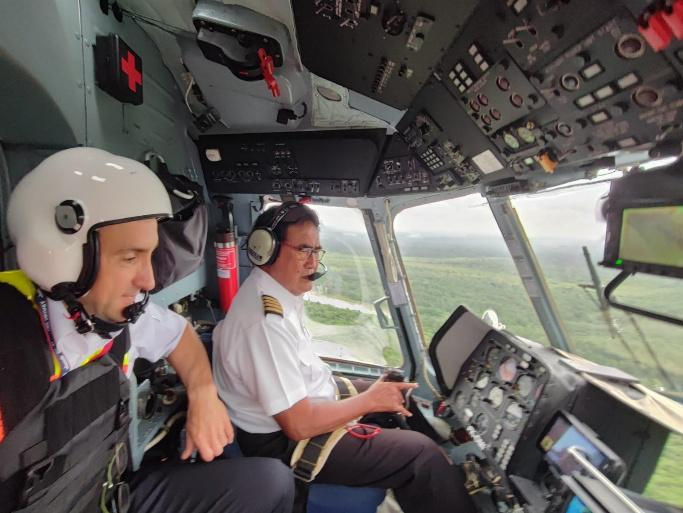
« РАБОЧИЕ БУДНИ МОЕГО МЛАДШЕГО СЫНА»
рюнгри. Это было почти это же время августа, только 1975 год. Олегу было 5 лет. Сейчас он взрослый мужчина, но его внутренняя крепость и характер ковались именно здесь, в Нерюн- гри, в краю вечной мерзлоты, где люди согревали друг друг душевным теплом. Это история о том, как среди бараков и пер- вых просек вырос мой сын, которым я сегодня горжусь. Он прекрасный специалист, его профессия - бортинженер на вертоле- те. Это человек, который чувствует вертолет кончиками пальцев. Если пилоты управляют движением машины, то бортин- женер управляет ее жизнью. Гордость вызывает знание сложнейших механизмов. Вертолет технически сложнее самолета из-за вибраций и нагрузок на винты и именно инженер знает, как заставить эту махину работать идеально. Пока все смотрят в небо, мой сын делает так, чтобы полеты были безопасными. Горжусь тем, какую важную и ответственную профессию выбрал мой сын. Быть бортинженером верто- лета - это работа настоящего мужчины! А ведь эти полеты он начинал здесь, в Нерюнгри, ребенком, затем в Джебариках, где мы прожили несколько лет, залазил на верхнюю полку в квартире и образно летал в синем пиджачке с настоящими погонами летчиков. Детская мечта стала реальностью. Улетаю из Нерюнгри 4 сентября, но чем ближе к вылету из Чульмана, тем быстрее вращаются стрелки часов и тем больше дел всплывает из ниоткуда, но время еще было - три дня - это хороший срок для душевных встреч. Визит к Татьяне, знакомство с ее повзрослевшей Полиной - это отличный способ заря- диться теплом перед дорогой. В такой приятной атмосфере время летит быстро. О этот шопинг с подругами, это святое! С Любой и Ниной любое «надо» или «не надо» превращается в «конечно, берем»! С обувью тоже - это база и комфорт, на ней экономить нельзя. Если она удобная, она себя сто раз окупит, - это я так думала, покупая сразу две пары и не думая о том, войдут ли эти новые покупки в мой небольшой чемодан, ручную кладь. Надеялась, купила и платья тоже, одно из них – длинное, в мыслях - укорочу в каком-то ателье. Две недели пролетели в гостях у Любаши. Других вариантов жить в другом месте и не предполагалось, хотя я чувствовала неловкость. Максим благородно уступил мне свою комнату, поселившись в прихожей. Удивительная семья! Любаша, не прерывая работы, окружила меня заботой, завтраками, обедами, как на убой. Сережа приносил дары природы, грибы, свежий улов речной рыбы, арбузы, фрукты. Рыба. Плотное, сладковатое мясо с тонким ароматом северной реки. Как вкусно. Сразу воспоминания о вкусе строганин в прошлые годы. Когда блюдо подают порциями, пока рыба не растаяла, кусочками макают в макалово - это смесь соли и молотого черного перца в пропорции 1к1, иногда добавляют лук. Как это вкусно и полезно - в сырой рыбе сохраняются все витамины, которые помогают выживать в суровом климате. В Нерюнгри климат с очень длинной суровой зимой и коротким, но теплым летом. Зима: ноябрь – март, очень морозно и снежно, средняя температура -25-30 градусов. Январь -34, иногда ниже -43 градуса. Весна: апрель – май, короткая и контрастная, днем - 5 градусов, ночью до -13. К концу мая начинается потепление и сред- ний дневной максимум поднимается выше +12 градусов. Лето: июнь -август. Довольно комфортное но влажное. Средняя температура днем + 18 +.20. Июль- самый теплый месяц, когда воздух может прогреваться до +22 … + 28. Осень: сентябрь -октябрь Похолодание наступает стремительно. В сентябре еще держится плюсовая температура , но уже к октябрю она падает до -5 -10 с и устанавливается снежный покров. Годовая амплитуда температур огромная от -43С зимой + 18 С летом. Самый комфортный период для посещения - с конца июня по начало августа. Север, Нерюнгри - это не про температуру, это про состояние души. Если зацепит, то уже не отпустит. Уезжать не хотелось, внутри жила твердая уверенность: я не прощаюсь. В аэропорт я ехала с Сережей, по пути заехали за Любой, она попросила на работе замену на это время. Сережа подарил мне иван-чай, растет летом в этом суровом краю, подарок семье Андрюши с Севера. Грустно уезжать от друзей, но радостно знать, что меня здесь ждут... Мой отъезд совпал с приездом моего старшего сына по работе в город Нерюнгри. В Нерюнгри аэропорт Чульман не такой большой, что делает ситуацию еще более обидной. Его рейс приземлился как раз в тот момент, когда я уже была в стерильной зоне ожидания перед посадкой, остается только семейная история о том, как мы передали друг другу эстафету прямо в небе. Хорошо, что есть онлайн, где можно общаться в удобное время из любой точки.

Я вылетела в Москву 4 сентября в понедельник авиакомпанией «Якутия» прямым рейсом на Москву в 10-55 по местно- му времени Нерюнгри, прилетела в аэропорт Внуково в 12-10 по московскому времени. Время полета и дикая завораживающая красота северной тайги постепенно растаяла в иллюминаторе самолета, уступая место московским небоскребам и ритму цивилизованной столицы.
Встреча во Внуково стала завершением моей поездки. Внуково гудело своей обычной суетой. Когда я увидела внучку, на душе стало удивительно тепло. Она была немного приболевшая, но выглядела чудесно - ее рост, хрупкий силуэт, копна каштановых волос, эти родные карие глаза. Сердце всегда екает, когда видишь родной силуэт в толпе. Она встречала меня. В Москву мы приехали на такси и этот день мы были с нею вдвоем. Валя по делам, Андрюша в командировке, только котик Оливер. Полет в Нерюнгри был последним большим моим путешествием за пределы Москвы. Оставшийся сентябрь и начало ок- тября я жила в Москве, но иногда с Валей и Андрюшей выезжала на их дачу в Степаньково. С погодой в Москве в сентябре мне повезло. Среднемесячная температура в Москве составила + 15.5 С , что на 3 градуса выше нормы . Днем воздух часто прогревался до +20 +25 С, удерживая фактически летнюю погоду. Месяц был сухим, дожди практически отсутствовали. В первой декаде октября летнее тепло сменилось настоящей осенью. Наступал тот период времени, когда требовалась теплая одежда и, конечно, зонт, который я купила в Москве в переходе, там, где целый лабиринт таких лавочек. Он прошел проверку первым дождем в Москве, и в Новой Зеландии он стал для меня незаменимым помощником в дождливых ситуациях. Время, проведенное в Москве пролетало быстро. Хотелось, чтобы дни наполнились простыми радостями в кругу близких. В это время я собрала все московские бонусы сразу: кашель, таблетки и модный аксессуар в виде холтера на сутки. Проверка давления работала в режиме тест - драйв, так как через месяц меня ждала другая страна с другим климатом. И нужно было быть подготовленной. Вопреки не самому лучшему состоянию моего здоровья,
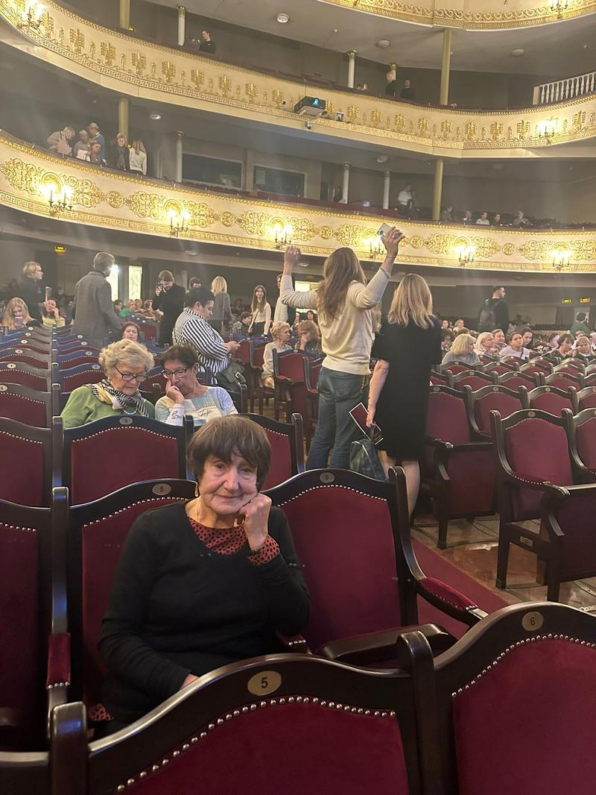
« ТЕАТР ИМЕНИ МОССОВЕТА»
Викуля, моя внучка, помогла мне организовать культурный досуг и взяла на себя бронирование билетов в театры. Первое наше с нею было посещение театра имени Моссовета. Это один из старейших театров Москвы, в 2023 году он отметил свое столетие. Спектакль «Супружеская жизнь», оригинальное произведение Бергмана называется «Сцена из супружеской жизни», 1973. Кончаловский адаптировал этот сюжет, перенеся действие из Швеции в Россию эпохи 90 годов. Неплохой сюжет. По- становка заставила задуматься. «Все счастливые семьи похожи друг на друга, каждая семья несчастливая по своему». Эту фразу Л.Н. Толстого можно вполне отнести к взаимоотношениям героев пьесы Ингмара Бергмана, по мотивам которого создан этот спектакль. Обсуждение спектакля продолжалось у нас дома в кругу семьи. Интересный спектакль, в котором играли только двое артистов. Когда бываю в Москве, всегда хочу посмотреть русский балет. Повезло нам с Викой забронировать билеты на Лебединое озеро в театр имени.К.С.Станиславского и В.И.Немировича - Данченко. Туда мы ехали самым скоростным видом транспорта - метро. В Москве я гостья и в метро не всегда чувствую себя уве- ренной в выборе правильного направления моих поездок. Но с Викой мне легко, она имеет статус местного жителя, для нее метро - не музей, как для меня, а часть повседневного передвижения, поэтому и мне спокойно.. К Московскому академическому музыкальному театру, расположенному в самом центре Москвы по улице Большая Дмитровка мы приехали вовремя. От метро 4-7 минут пешком. Несмотря на то, что «Лебединое озеро» для меня история знакомая и смотрела я ее и в Большом театре, и в другой стране, в театре Станиславского спектакль очень понравился. Я как бы прожила историю, сопереживая героям как в кино и увидела четкую логику событий. И финал - жизнеутверждающий - добро побеждает зло - Одетта стала лебедем, чего обычно нет в других постановках, там трагический финал. Благодаря светлому финалу испытываешь душевный подъем. В прекрасном состоянии возвращалась с Викулей. Где-то читала, что искусство - это не просто развлечение, а мощный ресурс для вдохновения и перемены, а также оно помогает почувствовать себя живым. Да, я согласна. Поход в театр - это целое событие, которое дарит ощущение праздника, недоступное в повседневной жизни. Как хорошо, что здесь, в Москве, есть родственники нашего семейного дерева по маминой линии, мои двоюродные сестры и дети моих двоюродных сестер. Когда бываю в Москве, встречаюсь с ними - редкие встречи, но теплые ,душевные... Такая встреча у меня была с Галиной Груздевой, моей двоюродной племянницей, дочерью сестры Александры Слесарчук, девичья фамилия Серодеденко. Пребывание в Москве и общение с Галей дарит мне всегда ощущение единства с нашим родом. С нею мы встречаемся всегда когда я прилетаю в Москву и когда она здесь в Москве, так как она часто была в Китае, там работал ее муж. Я помню нашу встречу в Китае, когда мы с Валей, женой Андрюши ездили в Пекин и у нас там с нею и ее семьей были незабываемые встречи, а сейчас приятные воспоминания. В Москве наша встреча была запланирована заранее. Прогулка по Красной площади - это всегда про масштаб, но в тот день она казалась какой-то по-особому уютной, потому что рядом родной человек. Мы с нею были в мавзолее Ленина, повезло, прошли с делегацией очень быстро, постояли в строгой тишине у Кремлевской стены, сделали фото на память, а потом остановились в «Грузинском дворике». Нет ничего лучше после долгой прогулки, чем горячий пряный суп харчо и ароматный хачапури с тягучим сыром. За разговорами время пролетело незаметно. Встреча могла бы продолжаться, но семейный звонок, упрямая вещь - значит это повод для новой встречи… И встреча состоялась еще один раз перед отъездом. Догово-


« ГАЛИНА ГРУЗДЕВА И МОИ ДВОЮРОДНЫЕ СЕСТРЫ ОЛЬГА И ИРИНА »
рились заранее и встретились в кафе, куда пришли Галя, двоюродные сестры Ольга и Ирина, племянники Ирина и Саша. Встреча была теплой, я ее запомнила. В этот мой приезд в семье Эдика и Кати был большой праздник - десятилетие Евы, их дочери. Десятилетие - это первый настоящий юбилей, когда собирается вся семья, включая бабушек, дедушек, близких родственников, и шумная компания лучших подружек, это большое семейное событие. В кафе была атмосфера настоящего детского праздника, поздравлений, искреннего веселья и тепла. Да и сервис на высшем уровне и по- трясающая еда. Все было очень вкусно, тоже по-семейному. Но главное, там была большая семья, когда бабушка и дедушка прилетели из другого города по случаю маленького юбилея своей внучки. Это лучший подарок, который напоминает нам, как важна связь поколений. В Москве я встретилась с Левшиной Валей. Наша дружба с ее семьей началась много лет назад на другом конце света, в Новой Зеландии. Удивительно, как жизнь объединила наши встречи. Когда-то я ждала ее редких приездов к семье в «страну длинного белого облака». В переводе на маорийский язык это Аотеароа (Новая Зеландия). Согласно одной из легенд именно такое длинное облако над горизонтом увидели полинезийские мореплаватели, когда обнаружили эти земли. Это об- лачное образование помогло первым поселенцам найти острова. Это только немного истории о Новой Зеландии. Наши теплые встречи продолжались в Москве, когда я приезжала в столицу. Годы и тысячи километров не изменили той искренности с которой мы когда то встретились в Новой Зеландии. Есть люди, связь с которыми время только укрепляет, дружба вне времени. Вот и с Валей. В Москве мы встретились вдвоем. Обычно она всегда была с Володей, парой, на этот раз она была одна. В это время они жили в Обнинске .А здесь, в Москве, мы шли с нею вначале по Тверской, потом Никитской площади и площади Революции. Наша прогулка по осен- ней Москве - это бесконечное очарование. Она знает этот город наизусть, а я открываю его заново. Есть особая магия в том, чтобы гулять по Москве с человеком, который здесь дома. Город предстал передо мной в своем лучшем наряде, строгом и ярком одновременно, с площадями, засаженными цветами в

« ВСТРЕЧА С ВАЛЕЙ ЛЕВШИНОЙ »
один тон. Такие цветы подчеркивает эстетику и европейский стиль современной московской осени. Наша прогулка закончилась посещением кафе «Пушкин» на Тверском бульваре. Из ис- тории известно, что Александр Сергеевич Пушкин любил брусничную вод и простую домашнюю еду, поэтому брусничные десерты - один из главных символов ресторана-кафе «Пушкин». Мы с Валей пили ароматный кофе из фарфоровых чашечек и кушали пирожки с брусникой - это миниатюрная классика дво-
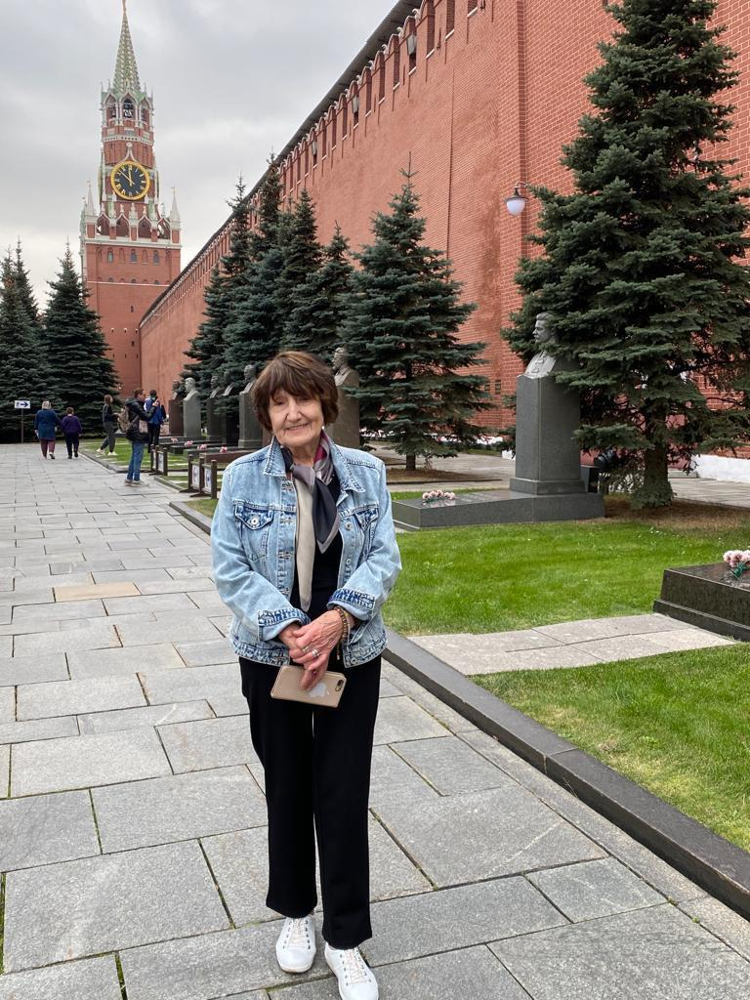
« МОСКВА, СТОЛИЦА»
рянской кухни, которую часто описывают , как домашнюю выпечку в премиальном исполнении. Пирожки из тонкого дрож- жевого теста, которое отличается пышностью и тонкостью по размеру, небольшие, внутри натуральная брусника без лишних добавок. Главная фишка в балансе, ягод много, они сохраняют свою природную кислинку и терпкость, которая контрастирует со сладковатым тестом. Их часто называют здесь Пушкинским завтраком. В этом кафе я почувствовала такое редкое ощущение, будто тебя очень ждали, радушное внимание, даже если ты зашла просто на чашку кофе с пирожком, и поэтому невольно теряешься, представляя себя не в кафе, а в каком-то историческом ресторане Москвы. Нас не торопили. Мы долго беседова- ли, было о чем поговорит, а потом пошли на метро - каждый на свою линию. Теперь, как обычно, будем видеться только в онлайне. Ехала в метро, а мысленно все еще была там, в темах наших разговоров, в этой короткой, душевной встрече. Наша программа с Викулей по выборам посещения театров продолжалась. В Большой театр в кассах не было билетов, а перекупщики билетов заломили заоблачные для нас цены, но нет худа без добра, мы с нею купили билеты в Малый театр. Отличный выбор моей внучки. Постановка приурочена к 80-летию актера Василия Бочкарева. Посмотреть « Собачье сердце» в Малом театре. Это удача. Казалось бы что фильм Бортко - это недосяга- емый эталон. Я много раз его смотрела, но сцена творит чудеса. Василий Бочкарев в роли Преображенского - это что-то невероятное. Тот случай, когда спектакль попал в меня сильнее, чем легендарное кино . Конечно, посещение Малого театра для меня было событием. Спектакль оставил глубокое впечатление, кажется сама сцена до сих пор хранит энергетику и голос великих актеров прошлого. Приятным дополнением к духовной пище стал наш с Викой визит в буфет - их знаменитые свежие бутерброды с икрой, колбасой, рыбкой, как и поста-

« МАЛЫЙ ТЕАТР »
новка театра, создают неповторимое ощущение праздника. Покидать стены Малого театра не хотелось, было ощущение, что я не просто посмотрела спектакль, а побывала в гостях в настоящем русском доме, где время замедляется, а классика оживает. Спасибо за чудный вечер, а Василию Бочкареву браво! В свои 80 лет он просто царит на сцене. Спектакль за- кончился. Дома. обсуждали постановку с Валей, Андрюшей. Как хорошо , когда есть такие вечера. Дни в Москве улетают быстро. Поликлиники, врачи, лекарства , иногда ходим с Валей, а иногда сама. Контроль со сторо- ны Андрюши моего приема лекарства - иногда не хотелось, а иногда забывала, но контроль строгий. Возвращалась к заказам моих новозеландских друзей - нужно время, чтобы их купить и места, где они в продаже, пользовалась подсказками Вали, Вики. В Москве я встречалась с мамой Лены, жены моего младшего сына, Татьяной Ивановной Шугали. Обычно наши встречи были короткими. Она живет не в Москве, в Измайлово. Конечно, ее добрые советы помогли мне решить некоторые пробле- мы, с которыми я столкнулась. Мы вместе нашли ателье подешевле для реставрации моей одежды. Она привезла мне мали- новое варенье со своего сада и лекарство, когда я приболела. Добрый человек Мы с нею могли посмотреть некоторые московские достопримечательности и даже посидеть в кафе. Про- сто так. В один из этих сентябрьский дней мы с Андрюшей были на кладбище у могилы моего дяди Слета Семена Петровича. Цветы и тишина. День был теплый по-осеннему и спокойный. Андрюша был за рулем. Заезжали в салон, где продаются дорогие машины - я на экскурсию, а он по делам. На кладбище я бываю всегда, когда я в Москве, когда-то всей родней собирались здесь. События на Украине повлияли на жизнь детей, внуков, правнуков моей родной тети Слета Нины Петровны они сменили место жительства и переехали на постоянное ме- сто жительства в Москву, Балашиху. Но вот собраться здесь в определенный день не получается. Время уходит и связи родственные часто теряются не только с ушедшими, но и с живы- ми тоже. Оставшееся время в Москве я занималась нашими семейными фотографиями, которые Андрюша перевез из Нерюнгри в Москву. Фотографий прошлых лет много, хотелось, чтобы осталась память о семье. Я думаю, что снимки хранят семейные ценности, традиции и историю, поддерживая связь между поколениями. Как жаль, что я об этом думаю сейчас, а не тогда, когда наш отеческий родной дом, в котором росли мы, дети, жили наши родители, был снесен в бездну в Луганске по улице Артема много лет тому назад вместе с историей моих пред- ков по отцу... А они были... Фото, предметы… Мне повезло, в Москве я нашла реставратора на часть фото, перевезенных сыном в Москву. Специалист восстановил около 500 фотографий. Я их оформила в два больших альбома, позже купила еще один альбом, а цифровые дубликаты находятся на цифровых носителях. Начало положено, надеюсь на продолжение. Альбомы у Андрюши в семье. С Викой открываем легендарные места Москвы. По совету младшего сына Олега, который остался в полном восторге от посещения, мы с Викой наконец отправились в легендарный «Метрополь». Это было не просто посещение отеля, а настоящее погружение в историю. Огромный зал «Метрополь» с витражной крышей и бесконечные столы с деликатесами. Шампанское льется рекой, а выбор еды поражает. Ощущение, что попал на светский прием 20 века. После бранча у нас была экскурсия по отелю - это не просто гостиница, а настоящий символ Москвы с более чем вековой историей. «Метрополь» обладает уникальным местоположением . Он находится в Театральном проезде, буквально в нескольких шагах от Красной площади. Из окон многих номеров открывается прямой вид на исторические

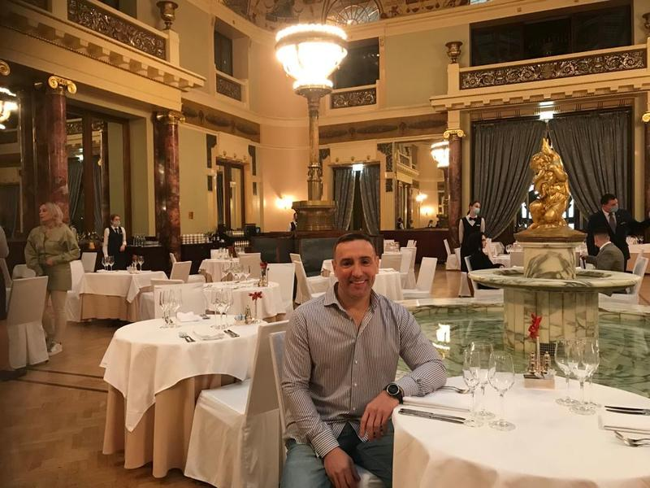
« МЕТРОПОЛЬ »


стены Кремля и Александровского сада. Отель расположен прямо напротив главного театра страны, что делает его центром культурной столицы. Здание «Метрополя» - одно из самых красивых зданий Москвы, построенное в стиле московского модерна в 1905 году. В 20 веке здесь останавливались исторические личности, в настоящее время отель является местом про- живания высокопоставленных лиц, знаменитостей, также ту-
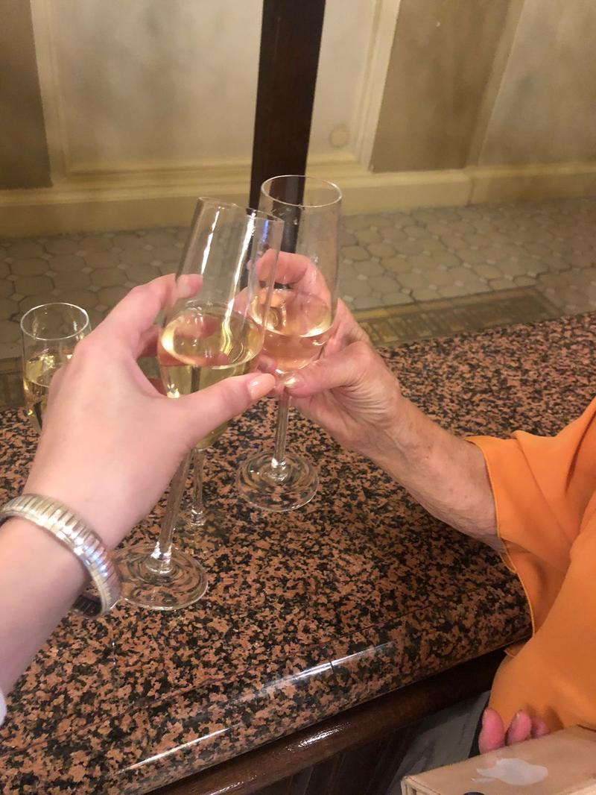
ристов, желающих окунуться в атмосферу старой Москвы. В номерах отеля «Метрополь» поражает уникальное сочетание исторического шика в стиле модерн с современным комфортом, каждый номер индивидуален, украшен антиквариатом и сочетается с безупречным сервисом, высокими потолками и часто видами на центр Москвы. Уходить из Метрополя не хотелось - это как закрывать старинную захватывающую книгу на самом интересном месте. Сердце наполнено теплом, а мысли - благодарностью сыну Олегу. Именно он настоял на этом месте, это был один из лучших советов. Я не могла уйти отсюда с пустыми руками - купила фирменных мишек в ливреях, маленьких хранителей отеля, для моих внуков Виктории и Антона. Теперь частичка Метрополя живет в их домах. Уходя из Метрополя, я уносила с собой не только сувенир, а увесистый том его биографии. Эта книга бумажный слепок легенды, запечатлевший блеск хрустальных люстр и шепот великих имен, в чье окружение я была допущена. Метрополь нельзя увидеть до конца - его можно только бесконечно открывать заново строка за строкой. Эта книга осталась в доме моего старшего сына. Пусть она будет просто доброй памятью обо мне и о тех временах, когда мы были вместе. Дней пребывания в Москве остается все меньше, но встречи продолжаются. В Москву из Нерюнгри приехала моя подруга Нина Бондарь для лечения. Дружба наша - более 30 лет, мы работали в одном предприяти в Нерюнгри, а в трудное время, 90- е годы, были всегда рядом. Это была эпоха железнодорожного выживания. Для многих людей и для нас тоже. Когда поезд Нерюнгри - Благовещенск превращался в живой организм, наби- тый до отказа коробками, сумками, челноками и людьми с воспаленными от бессонницы глазами. Мы везли молочку, как драгоценный груз, считая каждый час, чтобы товар не испортился. Да уж и поездка по этому маршруту в эти годы был настоящим аттракционом на выживание. Помогайки тогда были практически официальной частью транспортной системы, без них втиснуться в вагон с бидончиками молочки было физически невозможно. Это была класси- ческая молочная логистика того времени, без оплаченного штурмовика-помогайки. твои бидоны просто могли остаться на перроне. Помогайки тогда работали, как спецназ, - они буквально пробивали коридор в живой стене людей, чтобы мы с Ниной успели закинуть товар, пока вагон не закупоривался окончательно. Нам везло, мы всегда уезжали. Конечно, с реализацией нашей молочки были трудности. Андрюша, мой сын, часто приходил мне на помощь, он помогал мне мне материально. После, наши пути с Ниной разошлись, она уехала в Северодонецк, потом в деревню, но мы часто встречались с нею, когда я приезжала в Россию. Последнее время она жила в Нерюнгри, но часто жила в Москве, помогала чужим людям воспитывать их детей. Добрая, светлая душа, работала для людей почти бесплатно. В этот мой приезд мы с нею виделись дважды. Я при- езжала к ней на станцию метро «Нагорная», где она ждала меня, и мы с нею гуляли по аллеям, ходили недалеко в кафе, так как на длинные дистанции ей было трудно ходить, пили облепиховый чай с вкусными пирогами и вспоминали наши про- шлые годы. Это была моя последняя встреча с нею в Москве. Мои оставшиеся дни в Москве уходили очень быстро, но наш культурный марафон с Викой обрел новый путь - теперь нас было уже трое: Вика, Андрюша и я. В один из вечеров мы были в легендарной Маяковке на спектакле «Палата номер 6». Слово «Маяковка» в Москве универсально - так сокращенно называют москвичи не только театр, но и станцию метро Маяковская, а так же Триумфальную площадь, бывшую площадь Маяковского. В этом театре я впервые, полное название - Московский академический театр имени Вл. Маяковского, один из старейших и наиболее авторитетных драматических театров Москвы основанный в 1922 году. Театр расположен в историче-
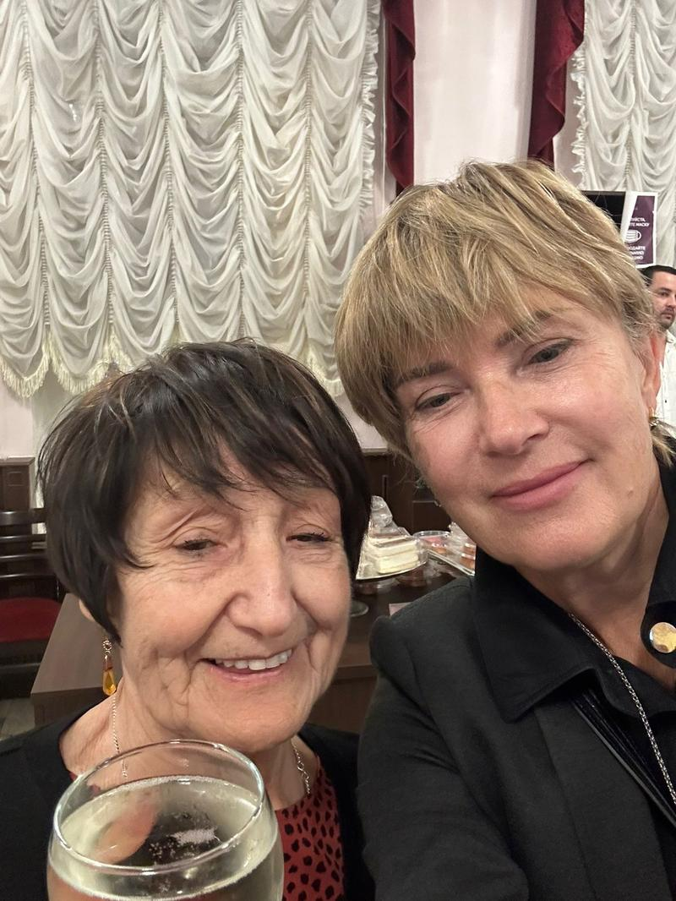
« В ТЕАТРЕ МАЯКОВСКОГО»
ском центре Москвы на большой Никитской улице. Репертуар классическая и современная русская литература. «Палата номер 6» - произведение Чехова. Это история о том, как два человека - врач и пациент - находят друг друга в мире равнодушия, эта встреча становится для них единственным моментом подлинной жизни, пусть и ценой свободы. Потрясающая работа в театре Маяковского - коротко, емко, бьет пря- мо в цель. Сцена, диалог и огромный мир вопросов. Спектакль заставляет думать. Это не просто Чехов, это диалог о свободе, безумии и равнодушии, который не отпускает долго после выхода из театра. Удивительно, как чеховский текст, написанный более века назад, может так сильно влиять. Мы обсуждали виденное нами в метро, и за домашним ужином не в силах сразу переключиться на быт. Это и есть признаки настоящего искусства, когда спектакль не просто смотришь, а проживаешь, унося его частичку внутри себя для долгих разговоров с близкими. Да, еще главное, что мы смотрели этот спектакль как один из дебютных показов. Повезло! Это было 1 октября 2023 года. Спектакль оставил сильнейшее впечатление, благодаря искренности актерского состава (Сергей Беляев, Андрей Гусев и другие). Я верила каждому слову - полное ощущение, что они не играли, а жили на сцене. Потрясающее попадание в образ, каждое слово звучало искренне и правдиво.`Этот спектакль -без- условная творческая удача театра, мне повезло... Да, театр - это всегда праздник, даже если он готовит сюрпризы. Спектакль «Веселая вдова» в театре оперетты стал завершающим аккордом в моей культурной жизни в Москве. В те- атре оперетты я была с Валей. Шла в театр на «Веселую вдову» с ностальгией по старому сюжету, а встретила новую версию, но несмотря на неожиданную смену декораций, магия сработала. Я вышла из зала в прекрасном настроении, потому что ше- девры Франца Легара и его бессмертный вальс невозможно затмить никакими экспериментами. Низкий поклон маэстро Легару за то, что спустя столетие его музыка продолжает согревать наши души и дарить это неповторимое ощущение сча- стья. Удивительно, но как-то по-разному течет время у каждого из нас. Вика умудряется совмещать работу и частые визиты к нам, ее энергия просто поражает. Валя в основном занята кухней как гостеприимная хозяйка, частые поездки на дачу - не только работа, но и руководство ею рабочими, там она уже как прораб с большим опытом работы, наши с нею поездки в поликлинику, магазины, в кафе, иногда в Мытищи в парикмахер- скую (прекрасная ее рекомендация мастера, я осталась довольна стрижкой, но забыла там шарф, подаренный Галей, ну как есть..). Андрюша, который буквально жил на работе с утра до ночи, наконец-то выдохнул - взял отпуск и увез Валю в санаторий на несколько дней. В доме я и кот Оливер, любимец семьи. Ко мне он относится нейтрально. Но еду ел такую, какую я ему покупала. Вопреки моим ожиданиям Андрюша с Валей из санатория поехали сразу на дачу, а не домой. Я их ждала, наварила борщ, напекла наших семейных пирожков с картошкой. Оказалось, они по пути купили саженцы деревьев для дачи, поэтому и решили остаться там. В итоге мой обед они кушали только на следующий день, когда вернулись домой. А деревья мы сажали вместе позже и я тоже посадила одно. В один из осенних сентябрьских дней Андрюша организовал экскурсию по Москве, мы шли недалеко от здания Горного института, где он учился 5 лет, слушали воспоминания времен его учебы. Я никогда не была в здании института, где он учился и жил в общежитии. Помню это был 1980 год в Москве проходила олимпиада, а студенты жили в Подмосковье. Закончил в 1985 году, получил распределение на одно из крупнейших предприятий отрасли ПО Якутуголь в город Нерюнгри. В 1985

году Якутуголь и разрез Нерюнгринский были легендарными

« АНДРЮША ОРГАНИЗОВАЛ ЭКСКУРСИЮ ПО МОСКВЕ»
объектами. Стать частью коллектива, осваивающего крупнейшие месторождение угля, в те годы считалось высоким довери- ем, которое оказывалось лучшим молодым специалистам страны... Мы были в парке Горького. Прогулка по парку Горького и Крымской набережной впечатлили контрастом природы и искусства. Магия Москвы-реки и километры живописи на свежем воздухе. Пишут их в основном члены Союза художников и сво- бодные мастера, самоучки. Это крупнейшая в России выставка картин под открытым небом, работающая круглосуточно. Конечно впечатление ошеломляющее от количества картин, это красота от многообразия, я не искала одну идеальную картину. Искусство - это не соревнование. За каждой картиной в Парке Горького стоит живой человек, его труд и талант. Мое восхищение - это дань уважения каждому мастеру, который решил по- делиться своим видением с миром. Где-то читала, что картины оживают именно тогда ,когда на них смотрят. Бывают дни, которые меняют внутреннее состояние. Этот день у меня был именно таким: запоминающимся, глубоким и п- настоящему замечательным. Фотографии - лучший способ сохранить те самые моменты, чтобы потом было что вспомнить. Андрюша часто нажимал на кнопку. Все изображения - это просто застывший фрагмент времени, поймать мгновение до того, как оно превратится в воспоминание, и он это делал. Октябрь. Я еще в Москве, накрапывает дождь. Но я заранее знаю, что в этот день я иду к Матроне Московской в Покровский женский монастырь - это сердце Москвы, где в главном Соборе покоятся мощи святой. Собор представляет собой величественный храм в византийском стиле с богатой росписью, где всегда царит атмосфера тишины, сотен горящих свечей и аромата живых цветов, которые несут блаженной. В этом месте я всегда получаю покой и надежду. В этот раз ливень сте- ной преграждал путь, но случилось маленькое чудо - незнакомая женщина вдруг взяла меня за руку и спасая от дождя про- вела сквозь бесконечную очередь прямо в храм. Внезапное вмешательство незнакомки показалось мне знаком. Ее помощь была такой естественной и я почувствовала, что в этом огромном мире я не одна. Этот простой жест вернул мне веру в доб- ро и наполнил мое пребывание в храме особым смыслом. Это действительно удивительное чувство. Каждый раз, когда я выхожу из храма на выходе, я получаю цветы и воспринимаю, как личное благословение и привет от самой матушки. В православии считается, что такие случайности - это форма утешения. Цветы, полученные у Матронушки, я храню с особым трепетом. Даже за тысячи километров в другой стране они остаются со мной, не увядая в душе. Помимо цветов, увожу с собой частичку светлого места: иконки, сувениры для близких мне людей, друзей. Чем ближе день отъезда из Москвы, тем дни в Москве полетели на одном дыхании - столько встреч. Всей семьей выезжали на дачу, где я познакомилась поближе с сестрой Кати и ее дочкой. Я виделась с ними на имени- нах Евы. В доме было шумно, весело и очень уютно. Здорово, что дом такой большой - вместил всех гостей, даже стульев в этот раз хватило на всех. Мы также устроили спортивный марафон на свежем воздухе. Андрюша наконец закончил с посадкой деревьев и я тоже посадила одно дерево - пусть оно растет вместе с остальными, как добрая память о сегодняшнем дне. 3 октября был день рождения у Кати. Мы поздравили ее по телефону, но в гости всей семьей выбрались чуть позже. Эдик, Катя с детками Евой и Егором живут в центре Москвы. Мы приехали к ним на такси. Хотя день рождения Кати уже прошел,
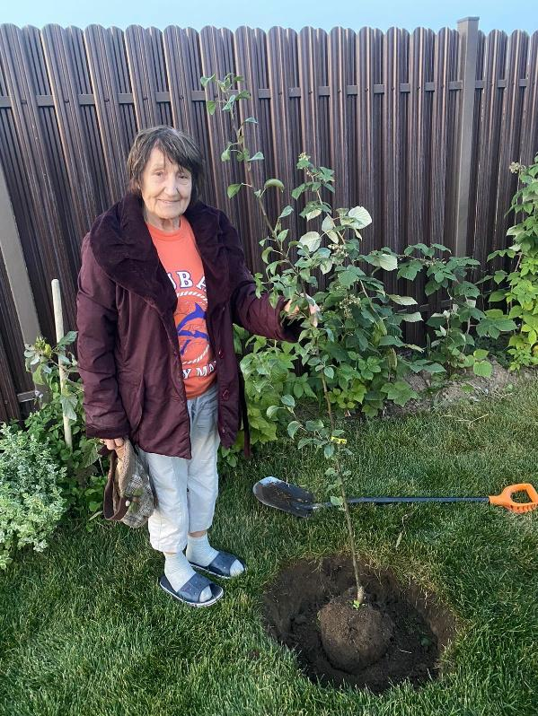
« МОЕ ДЕРЕВО»
мы снова его прочувствовали. Теплый семейный ужин, приготовленный ручками именинницы, вкусный торт, домашний уют. Но главное в их доме чудо - это маленький Егор, который зарядил нас всех искренней радостью и светом. Напоминание о том, что маленькие дети словно сохраняют наши воспоминания. Сначала мы их ведем за руку, а потом они становятся для нас опорой и советчиками. Говорят, что лучшие подарки - это те, которые решают твои проблемы. Андрюша подарил мне мобильный телефон Apple
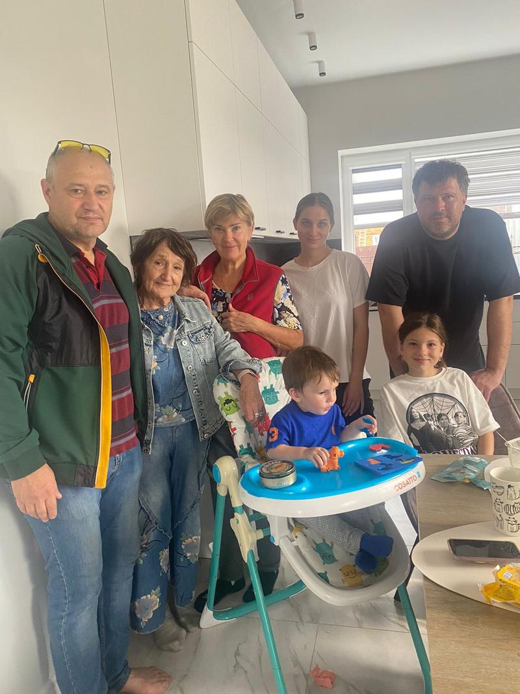
15 в Москве. Мой старый телефон уже совсем не держал заряд и эта покупка была для меня не просто дорогой вещью, а настоящим проявлением заботы. Это было для меня полной
« БОЛЬШАЯ, ДРУЖНАЯ СЕМЬЯ АНДРЮШИ»
неожиданностью. Каждый раз, когда я беру его в руки, я вспоминаю тот московский день. Даже сейчас я чувствую, что это не просто техника, а заряженный нашими общими воспоминаниями предмет. В один из последних московских дней моя привычная тропа одиночества изменилась. Обычно в это время сын спешил к машине, уносясь в рабочий ритм, а я оставалась наедине со своим молчанием и дорожками парка. Но перед отъездом все совпало иначе. Мы вышли на мою тропу вместе. Было что-то особенное в том, чтобы не просто идти рядом, а показывать ему свои любимые места и видеть его живой интерес к моему молчаливому маршруту. Это были драгоценные минуты нашей общей тишины и открытия моего мира для него.
Говорят, что хорошее когда-то кончается, но внутри отчаянно хочется нажать на паузу. Мое воскресное утро началось слишком рано: сонная Москва, пустой Домодедово. Вчерашний прекрасный семейный ужин, Андрюша, Валя, Вика, подар- ки, слова, которые забираю с собой. Улетаю с тяжелым чемоданом и грустным сердцем, хотя стараюсь улыбаться. Как всегда по традиции перед полетом - кофе с булочками в Домодедово это кофейная пауза, святое дело. Таможню прошла быстро, все вопросы по существу, самолет ЕК -130. Время в пути около 6 часов, разница во времени с Москвой - 1 час, так что не было этой болезни в связи с большим изменением во времени, которая называется джетлаг. По- лет проходил над Каспийским морем, Кавказом и пустынями Ирана. Весь полет смотрела фильмы, несмотря на ранний подъем в Москве спать не хотелось. В пути самолет был около 6 часов. Читала недавно, что из-за дальнейшего обострения ситуации на Ближнем Востоке время полета из Москвы до Дубая увеличилось до 7.5 - 8 часов, так как маршруты стали про- ходить через Таджикистан, Пакистан. Но в 2023, когда я летела,
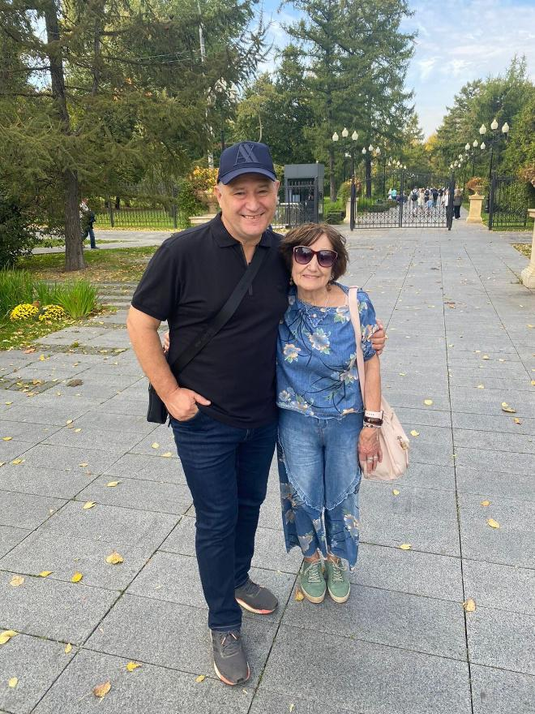
« С АНДРЮШЕЙ ПЕРЕД ОТЛЕТОМ В НОВУЮ ЗЕЛАНДИЮ»
полеты были быстрее, чем сейчас. Я вылетела из Москвы в начале октября где наступило резкое похолодание. Дневная тем- пература колебалась от +13с до +18с, сопровождаясь кратковременными дождями и облачностью. Улетая, я была в куртке. Когда самолет приземлился в Дубае и стюардесса с улыбкой открыла дверь лайнера, я сразу почувствовала плотную стену го- рячего воздуха. После кондиционированного салона самолета снаружи обволокло мягкое но очень ощутимое тепло +20-+22 С. В 5 утра, когда я прилетела, в Дубае было темно, первые признаки рассвета наступили позже. Солнце встает около 6:15. Если в Москве при вдохе чувствовалась бодрящая прохлада и сырость, то здесь воздух казался густым и тяжелым. Тело мгновенно расслабилось от тепла и я сняла с себя куртку, которая сразу стала лишней. Хотя октябрь считается началом комфортного сезона для жителей средней полосы, здесь была все еще полноценная жара. Таможню прошла очень быстро. Чемодан ждал меня на ленте. После получения багажа я уже не пыталась сравнивать ок- тябрьский Дубай с Московской осенью. Погода в аэропорту сразу дала понять. что здесь лето. Вежливые сотрудники помогли мне подключиться к интернету, чтобы я могла сразу со- общить родным о прилете. Как и в прошлый раз, когда я летела в Москву, я легко нашла стоянку такси и отправилась в уже знакомый мне отель Аджман, тот самый, где я останавливалась перед полетом в Москву. Мой сын Олег снова все организовал забронировал и оплатил мне два дня и три ночи, чтобы я мог- ла с комфортом отдохнуть перед долгим перелетом в Новую Зеландию. Иногда пара дней и несколько ночей могут вместить в себя много эмоций. Время будто бы растянулось в отеле Аджман... Море снова решило показать свой характер, как в прошлый раз, - из-за шторма я не могла зайти вглубь, но в этом была своя магия. Я не покоряла волны, я ими любовалась. Шторм не дал мне плавать в море, но подарил возможность его слышать. Бассейн с видом на залив стал моим местом силы.Там, на границе двух стихий, я чувствовала себя в безопасности и в то же время частью чего то огромного. Эти два дня были для меня не только про купание и прогулки вдоль моря, но и про свидание с солнцем. Поскольку номер отеля был у меня обращен к морю, на северо -запад, это было для меня идеальным местом для наблюдения закатов. Мне всегда было приятно ощущать кон- траст между прохладой кондиционированного номера и мягким вечерним теплом на балконе, когда солнце уходило за го- ризонт. Я видела эту золотую дорожку на бирюзовой воде залива - она как будто тянулась прямо к балкону во время заката. Это было в 17:45-18:05. В октябре здесь быстро темнеет Море после заката остается очень теплым, но здесь разрешено купание только в светлое время суток. С наступлением темноты отель расцветал сказочной иллюминацией, предлагая бесконечный выбор развлечений внутри своих стен. Обычно я слу- шала пианиста и уходила раньше, чтобы не проспать рассвет. Отель обращен фасадом и пляжем на запад в сторону Персидского залива, из-за такого расположения солнце встает за зданием отеля со стороны городских кварталов и пустыни. Я не могла увидеть сам момент выхода солнца из-за горизонта, я наблюдала его только тогда, когда первые лучи окрашивали небо над заливом в нежно-розовые тона, а вода начинала искриться, море постепенно начинало превращаться из глубоко- го синего в ослепительно бирюзовое. Восход солнца наступал примерно в 6:10, 6:25 утра. Я как бы была свидетелем движения солнца в его закате и восходе. Конечно, сердце этого места - его люди. Искренние улыбки и забота персонала создавали самую благоприятную атмосферу в отеле. На третье утро, когда город еще спал, я прощалась с отелем из окна такси, направляясь в аэропорт. Аэропорт , терминал и рейс на Новую Зеландию Прощай пустыня, привет острова Новая Зеландия. Это гостеприимный берег, это географическая точка, место, где я могу быть ближе к семье моего младшего сына. Итак, Дубай я покинула 10 октября в 10:05 на самолете ЕК- 448. Я уютно расположилась в широком кресле премиум-эконома и завороженно наблюдала за экраном перед собой, как маленькая иконка самолета медленно ползла по карте. Это был мой последний длинный перелет и в этом движении через часовые полюса я чувствовала спокойное завершение моего большого путешествия. Рейс Дубай - Окленд - это уникальная возможность увидеть географию в действии. За 16 часов я пересекла экватор и полмира - от песков Омана через тропики Индонезии и бескрай- нюю Австралию прямо в Новую Зеландию. Под крылом были два океана и три моря, а впереди другой конец света. Завтрак над Индийским океаном, обед над Австралийским бушем, а вечер - в Новой Зеландии. Приземлившись в Окленде 11 октября, я, конечно, была в состоянии экстремальной усталости и тяжелого джетлага из-за смены 9 поясов. Но легкость появилась от мысли, что до цели всего один короткий рейс – перелет из Окленда в Нельсон, который обещал быть быстрым и спокойным завершением моих приключений. Процедура паспортного контроля заняла считанные секунды. Однако на таможне вышла заминка. Никогда не думала, что любовь к ароматерапии приведет к проверке. Служебная собака учуяла лавандовое масло в чемодане, чем вызвала немалый интерес инспекторов. Благо, все решилось парой
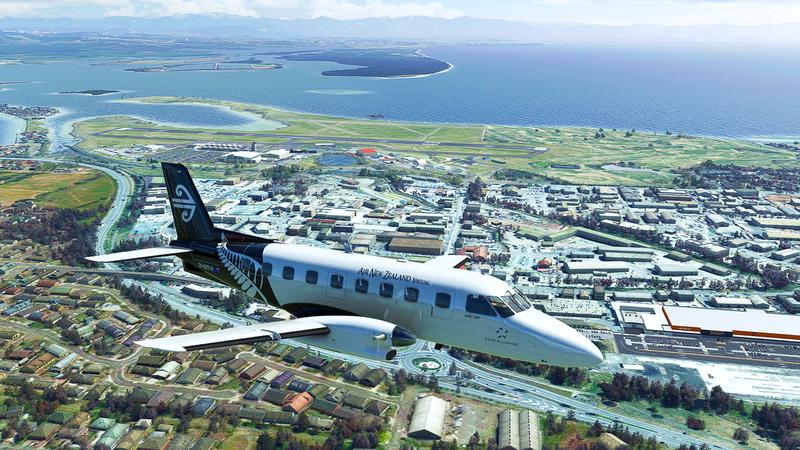
« AIR NEW ZEALAND - АЭРОФЛОТ ЗДЕСЬ НЕ ЛЕТАЕТ»
объяснений и меня отпустили. После всех проверок мне нужно было разобраться с багажом. Так как нормы веса на рейсе Окленд - Нельсон были меньше, мне пришлось перераспределить вещи из чемодана в дополнительную сумку, как и перед полетом из Окленда в Дубай. После перераспределения вещей я оформила багаж до самого Нельсона и налегке с одной ручной кладью на тележке я пошла по зеленой дорожке до домашнего терминала Окленда... Пересекая пролив Кука, я видела многочисленные острова. Но самое интересное зрелище было при снижении к Нельсону нам открывались потрясающие виды на залив, золотистые пляжи парка Абель Тасман и виноградники региона. Нельсон один из самых загруженных региональных аэропортов в Новой Зеландии. Здесь самолеты летают часто. Когда я бываю на Тахуне у моря, я слышу и вижу, как прямо над головой летят огром- ные железные птицы. Каждый пассажир в самолете думает: вот я и дома. А я? Я вернулась после длительного путешествия в Нельсон из моей России. Это было не просто моим возвращением, это было началом к моим новым стартам. Я думаю, что эта поездка не закрыла эту главу, а открыла новый путь моего возвращения к истокам. Я уже мечтаю о том, как снова поднимусь в небо, чтобы сократить расстояние между двумя моими мирами. Я назвала эту книгу «Моими глазами», потому то это не просто хронология событий, а попытка поделиться тем, что я чув- ствовала, видела и переживала в самые важные моменты. Это история, пропущенная через мое сердце. Мир у каждого свой. Это - мой, моими глазами, - история, рассказанная честно. Работа над книгой началась в конце 2024 года. Путь к окончанию был долгим из-за технических сложностей старого ком- пьютера. Переломный момент наступил в мае 2025 года когда я была в гостях в семье моего младшего сына Олега в Брисбене. На День Матери Олег и внук Антон сделали мне невероятный подарок – Мак, новый компьютер. Он вдохнул новую жизнь в мою рукопись. Благодаря освоению новой техники работа ускорилась. Этот апгрейд позволил мне закончить начатое в 2026 году. Это была наша общая победа . Я искренне благодарю моих близких друзей Ольгу, Дарью за помощь в оформлении книги, подбор фотографий, которые оживили мои воспоминания, за кропотливый перевод текста на английский язык. Огромное спасибо ИИ обзору, который помог мне подобрать правильные слова для каждого города и его значения в моей жизни.